| 社会人必見！大人の教養 ～年中行事と歳時記～ (SMART BOOK) | |
| 教養研究倶楽部 | |
| (2016) | |
はじめに
「日本らしさとは何か」と尋ねられた時、多くの人は、四季おりおりの風情や伝統文化、寺社での儀式や祭礼、民衆のエネルギーが爆発するおまつりなどを思い起こすことでしょう。
日々の暮らしの中で、当り前のように行われる生活の節目としての伝統行事。神社や寺院、その氏子や信徒によって、幾世代にもわたって脈々と守り伝えられてきた祭礼。日々の糧である稲作は、今も敬虔な神事によって豊作を祈願します。花鳥風月を愛でる繊細さは、二十一世紀の現代においても、日本人のアイデンティティを支えています。
海外から伝わり、年中行事として定着した外国の行事もあります。天災を教訓としたり、先人の功績をたたえたりして、日々の指針とするために設けられたさまざまな記念日も、心にとめておきたいものです。
本書は、毎日の生活をより豊かにしていただくための、歳時のガイドブックです。ぜひご活用ください。
編 者
■本書について
各月の最初のページに、その月の主な歳時（伝統行事・祭礼・まつり・祝日・記念日など）を一覧で掲げています。一覧表の各項目については、本文で解説しています。本文中の用語に[＊]のついているものは、各月の最後に注釈をつけてあります。読みが難しいと思われる語句には（ ）で読みを表記してあります。
また、日本の自然や季節の風物などを探る糸口としていただくために、俳句の季語（見出し語のみ）を掲載してあり、総ての季語に読みを（ ）で表記しています。
なお、本文中の記号は次のように区別しています。
● 一覧表に記載の項目を解説
◎ 解説項目に関連する内容を記載
【特記事項】
各地の祭事は、一定の曜日であったり、不定期であったりするため、その年によって開催日が異なることがあります。見物される場合は、念のため、事前に最寄りの市区町村の観光課か広報担当部署、および主催機関などに問い合わせて、日程をご確認ください。
※官庁名・自治体名などは、二〇〇四年（平成十六年）四月一日現在とします。
※各月扉ページの＊印は、一定の曜日で実施されるもので年によって実施日が異なります。本文中では初版となる二〇〇四年（平成一六年）の該当日に掲載してあります。
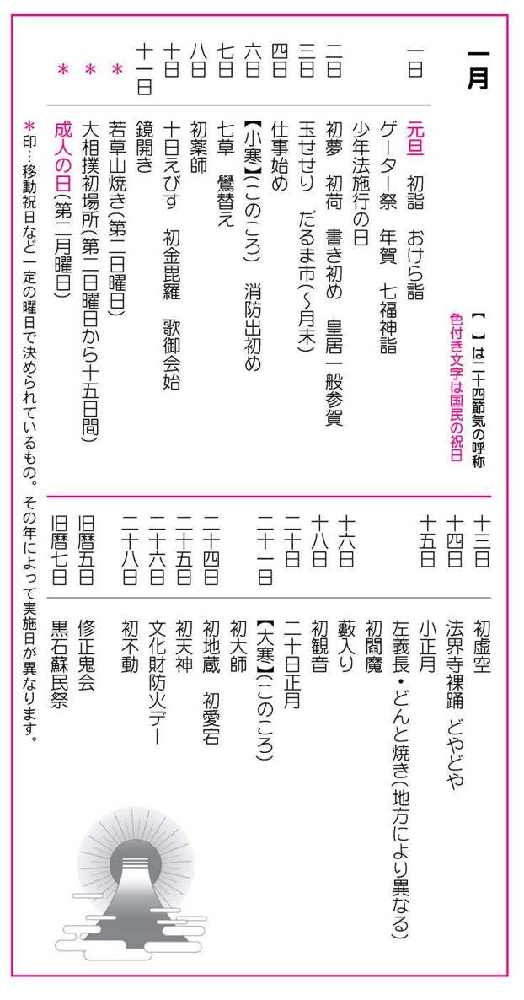
新年
●新年（しんねん）
新しい年、年の初めをいう。暦法改正[＊①]前の陰暦正月が、春の初めであったことから、厳冬にもかかわらず、「春」という言葉が現在でも生きていて、年賀状にも初春・新春・迎春・明の春などが好んで使われる。
●年神（としがみ）
正月に迎えて祀る神のことで、正月様、歳徳神（トシトクジン）ともいい、家々の繁栄をもたらす神と考えられてきた。戸主や年男[＊②]が祭主となって、神棚に若水を汲み、神社などからもらい受けた神札を置く。常設の神棚とは別に臨時の神棚を作るところもある。
一日
●元旦（がんたん）
国民の祝日。新年の第一日目。元旦は元日の朝の意で、元朝ともいう。「一年の計は元旦にあり」というように、この日は、屠蘇[＊③]を飲んで、新しい年の初めに希望と決意を持って、これからの一年を祝う。
●初詣（はつもうで）
元日に神社仏閣に詣でることをいうが、大晦日から出かける人も多い。除夜の鐘を聞いてから深夜に、または元日の朝に、馴染み深い鎮守の社か、恵方[＊④]にあたる神社仏閣に詣でる（恵方参り）。初詣は、元日と決まっているわけではなく、松の内[＊⑤]を目途に詣でることも多い。一年の厄除けを祈願して破魔矢（はまや）などを購入する人も多い。
●おけら詣（おけらもうで）
京都・八坂神社の初詣。大晦日の二十時から元日の朝にかけて、京都祇園の八坂神社では、薬草の白朮（おけら）を材料としたおけら火を焚く。この火を縄に受けて持ち帰り、火種にして雑煮を煮ると、疫病にかからぬ効果があるといわれる。
●ゲーター祭（げーたーまつり）
三重県鳥羽市、八代神社。伊勢湾口にある神島、八代神社の神事で、無事に新年が迎えられるように除夜から元日の朝にかけて行われる。グミの木で太陽を型取った直径ニ㍍ほどの輪を造り、それを大勢の若者が青竹で突き上げて落すという勇壮な祭り。この輪を「あわ」と言う。ゲーターとは、正月の朝を迎える「迎旦（げいたん）」が転じたものとされている。
●年賀（ねんが）
親戚・知友や近隣の間で行われる各戸訪問で、互いに賀詞を述べ交わし、子供には年玉を渡した。年賀に回ることを回礼といい、元旦から三日までの間に済ませるが、取引先への年賀は松の内まで行われる。葉書に賀詞を述べた年賀状を出し合うことで年賀に替えることも多い。
◎年玉（としだま）...室町時代から行われていたという年頭の贈りものをいう。古くは餅であったものが、手拭いや半紙の類となり、最近では子供に与える金銭や物品のことをいうことが多い。「年玉」は目上の人から目下の人への贈り物で、目下の者から目上の者への贈り物は「歳暮」とされていた。
●七福神詣（しちふくじんもうで）
大田南畝などの文人墨客が集まって、墨田区向島の百花園を中心に、七福神[＊⑥]を配置した社寺を造り、それを巡って正月の一日を楽しむ会を作ったのがはじまりとされる。それが全国的に急速に広がり、年中行事の仲間入りをした。巡拝の多くは、一日から七日までの間に済ますのがよいとされる。
●少年法施行の日（しょうねんほうしこうのひ）
少年法は、少年院法とともに二十歳未満の少年の健全な育成を目的に、一九四九年（昭和二十四年）一月一日から施行されている。非行少年の処分は刑事ではなく、家庭裁判所の審判によって保護観察や少年院送致など保護処分が相当とされている。近年、凶悪犯罪の低年齢化が社会問題となっており、法律改正が議論されている。
二日
●初夢（はつゆめ）
正月二日の夜に見る夢、または節分の夜に見る夢をいう。宝船の絵を枕の下に敷いて寝ると良い夢が見るといわれている。また、悪夢を食べるという獏（ばく）の絵も古くから敷かれてきた。「一富士二鷹三茄子」が吉夢の順位とされる。
●初荷（はつに）
年が明けて卸問屋や商店などが得意先に初めて納める荷物のことをいう。元旦は休業する商店が多く、二日が「仕事始め」であったことによる。揃いの印半纏を着こみ、トラックや船に初荷の旗を飾りつけて、荷を出すところも多い。
●書き初め（かきぞめ）
新年に初めて書や絵を書くこと。正月二日に書くのが習慣となっている。めでたい詩句を題材にすることが多い。子供たちの書き初め大会がよく行われる。
●皇居一般参賀（こうきょいっぱんさんが）
皇居への一般参賀は、一九四八年（昭和二十三年）から行われている。参賀が可能なのは、新年の一月三日と天皇誕生日（十二月二十三日）の二回のみで、皇居正門から入場する。皇室と国民のつながりを深めることが大きな目的で、参賀者は記帳簿に自由に署名ができる。
三日
●玉せせり（たませせり）
福岡県福岡市の筥崎宮で一月三日に行われる威勢のいい裸祭り。締め込み姿の岡組と浜組の男たちが、直径三十センチ、重さ八キロの大きな木玉を奪い合うというもの。玉は男玉（陽珠）と女玉（陰珠）の二つがあり、絵馬殿で「玉洗いの儀」を済ませた二つの玉を取り合って激しく競り合う。岡組が勝てば豊作、浜組が勝てば大漁とされる。「玉せせり」の「せせる」は、方言で「触る」「競う」の意味。
●だるま市（だるまいち）
「だるま」は、中国禅宗の開祖である達磨（だるま）の座禅姿をかたどった人形のこと。だるま市は関東地方で盛んで、幸運をもたらすものとされ、新年になると開運出世や商売繁盛などの縁起ものとして購入し、神棚に飾って置く。目無しだるまを買って、片目を入れ、願いが叶うと、もう片方を書き入れるなどの風習がある。
◎関東の主なだるま市
・本庄だるま市...埼玉県本庄市の仏母寺。正月二日。
・拝島だるま市...東京都昭島市の拝島大師。正月二日～三日。
・金鑚（かねさな）だるま市...埼玉県児玉郡神川町の金鑚大師。正月三日。
・少林山だるま市...群馬県高崎市の達磨寺。だるま市としては最大規模。六日～七日。
・青梅だるま市...東京都青梅市で寺の境内でなく青梅街道に市が立つ。十二日。
・三春だるま市...福島県田村郡三春町の目抜き通りに露店が並ぶ。一月の第三日曜日。
・木賊（とくさ）不動だるま市...神奈川県川崎市麻生区の麻生不動院。二十八日。
・だるま供養...東京都足立区西新井の西新井大師。古いだるま供養とだるま市。二月節分。
・高遠だるま市...長野県上伊那郡高遠町の鉾持神社。祭礼の日に市が立つ。二月十一日。
四日
●仕事始め（しごとはじめ）
新年になって初めて仕事をすることをいうが、儀礼的なものも多い。仕事始めは二日・四日・十一日に集中している。商業・漁業は二日、官公庁は四日を仕事始めとするところが多い。農業・林業などは、十一日にさまざまな行事が行われる。
六日
●小寒（しょうかん）
二十四節気の一つ。「寒の入り」とも言う。太陽暦で一月六日ころ。冬至と大寒の間にあたり、寒気がしだいに増す。この日から、立春前日の節分（せつぶん）までが「寒の内」で、消防出初め式が行なわれるのもこのころ。喪中などで年賀を欠礼した人に寒中見舞いが出される。立春以降の寒さは「余寒」「残る寒さ」などと表現されるが、現実には、厳しい寒さである。
●消防出初め（しょうぼうでぞめ）
年始めに各地で行う消防団の演習のこと。東京では一月六日に消防署員や各地区のとび職の人々が出初め式をする。江戸消防記念会会員による梯子乗り、消防救助演習などが呼びもの。全国の各都市でも、一月上旬から中旬にかけて、梯子乗りや木遣（きやり）音頭の詠唱など、出初めが行われる。中でも江戸で火消しの縄張り争いをした『加賀鳶（かがとび）』（石川県金沢市）の出初め式は有名。
七日
●七草（ななくさ）
万葉時代から行われている年中行事の一つ。一月七日は「七日正月」「七草の祝い」といって、七草[＊⑦]がゆ（七種類の菜を入れたかゆ）を食べると万病を防ぐとされた中国の古俗が由来。
●鷽替え（うそかえ）
一月七日に太宰府天満宮（福岡県太宰府市）で行われる神事。参拝者は社務所で用意した鷽や売店で買った鷽鳥をお互いに取り替えて、今年の吉を呼び込む。夜の行事なので、暗闇の中で交換するが、運の良い人は、神社で出した金製の鷽を引き当てることがあるという。鷽替え神事[＊⑧]は、東京の亀戸天神社などでも行う（一月二十四日～二十五日）。
八日
●初薬師（はつやくし）
毎月の八日・十二日に縁日[＊⑨]が行われている。中でも正月八日は初薬師と呼ばれ、多くの参拝者で賑わう。薬師は衆生を病苦から救い、眼病をなおすという如来（にょらい）で、薬師像は通常、薬壷を手にしている。奈良時代以後、薬師の信仰は栄え、奈良の法隆寺・薬師寺・法輪寺などが有名。なお、元旦に詣でると、三千日分に相当する功徳があるとされる。
十日
●十日えびす（とおかえびす）
関西では一月十日を「十日戎」という。前日九日を宵戎、十日を本戎、十一日を残り福あるいは後戎という。「えびす」は、夷・戎・恵比寿・恵比須・恵美須・蛭子などさまざまに書かれる。烏帽子をかぶり、タイと釣り竿を持つ姿が多い。もとは漁業の神様であったものが、室町時代に七福神の一つに数えられ、商売繁盛の神様として人気がある。小笹に宝物を付けたものを買って帰る。
◎各地の主なえびす祭
・十日戎...大阪市浪速区、今宮戎神社。九日～十一日。
・西宮神社十日戎...兵庫県西宮市、西宮神社。九日～十一日。
・初えびす...京都府京都市東山区、恵美須神社。八日～十二日。
・徳島えびす祭...徳島県九日～十一日。
・十日恵比須...福岡県福岡市博多区、十日恵比須神社。八日～十一日。
・十日戎...京都府宮津市、智恩寺。
・宝田神社初恵美寿...東京都中央区、宝田恵比寿神社。二十日。
●初金毘羅（はつこんぴら）
毎月十日に縁日が開かれる。正月十日を初金毘羅または初十日といい、十二月十日を終金毘羅あるいは納めの金毘羅という。香川県の総本宮金刀比羅宮では十月九日から十一日まで行われる神輿渡御祭のうち十日の大祭が特に有名。航海の安全を守る神として、現在でも漁業関係者からの信仰があつい。
●歌御会始（うたごかいはじめ）
一月十日前後の吉日に宮中で行われる初めての歌御会。天皇・皇后および皇族の方々の御歌が披露される。その後、天皇が出された御題によって一般の人々が詠んだ入選の歌が披露され、最後に翌年の御題が発表される。詠選は一八七五年（明治七年）から。
十一日
●鏡開き（かがみびらき）
地方によって日は異なる。正月の間、年神に供えておいた鏡餅を下げて、おしるこやぜんざいなどにして食べる行事。江戸時代の武家屋敷では、餅を具足に供えることが多く、御具足御鏡開きと称していた。餅を扱う際に刃物で切る事を忌み、槌を使ったり、手で打ち欠いたりしていた。「欠く」とか「切る」と言わずに、縁起を担いで、「開く」といったのがはじまりとされる。商家では蔵開き[＊⑩]を行う。
●若草山焼き（わかくさやまやき）
奈良県奈良市春日野の若草山。第二日曜日。若草山が害虫の棲み家とならぬよう、冬になると芝焼きをしていたが、東大寺が建物への類焼を恐れて、一定の期日にしたのが、行事日のはじまりとされる。東大寺と興福寺の衆徒によって運ばれた聖火が、消防団員の松明（たいまつ）に移され、ラッパを合図に一斉に点火される。
●大相撲初場所（おおずもうはつばしょ）
大相撲は（財）日本相撲協会が主催するもので、一年に六場所あり、一月場所を初場所という。東京都墨田区の国技館で催される。開催月の第二日曜日から十五日間が場所の取り組み期間。六場所とは、一月（初場所...東京）・三月（春場所...大阪）・五月（夏場所...東京）・七月（名古屋場所...名古屋）・九月（秋場所...東京）・十一月（九州場所...福岡）の六回で、開催地は四ヶ所（国技館、大阪府立体育館、愛知県体育館、福岡国際センター）となっている。
十二日
●成人の日（せいじんのひ）
国民の祝日。二〇〇〇年（平成十二年）から一月の第二月曜日と決められた。過去一年間に満二十歳になった人々を祝福するもので、主に市区町村単位で行われる。二十歳になると選挙権が与えられ、国政や地方政治に参加する機会が与えられる。また、財産・身分などの総てにわたって、未成年者の場合に与えられていた法律上の保護もなくなり、独立の社会人として自らの判断と責任において行動することが要求される。
十三日
●初虚空（はつこくう）
虚空蔵（こくぞう）は毎月十三日が縁日で、正月十三日を初虚空という。虚空蔵は虚空蔵菩薩の尊称で呼ばれる。虚空蔵菩薩は、智慧を備えた御仏で、参詣すると叡知を授かると信じられ、受験生の参拝も多い。京都の法輪寺で三月に行われる縁日は、十三詣[＊⑪]として知られる。
十四日
●法界寺裸踊（ほうかいじはだかおどり）
京都府京都市伏見区、日野薬師法界寺。ここは俗称「乳の薬師さん」といい、安産と授乳に霊験ありと女性の信仰があつい。正月の初めに修正会[＊⑫]を行い、五穀豊穣と天下太平を祈り、その結願[＊⑬]の十四日の夜、十九時ごろから精進潔斎した信者が、青年と少年の二組に分かれ、全員裸形で阿弥陀堂の前で手を頭上高く挙げて、「頂礼・ちょうらい」と叫びながら祈る。
●どやどや
大阪府大阪市天王寺区、四天王寺。修正会の結願にあたる十四日、若者たちが裸となり、六時堂の心柱を囲んで押し合い、揉み合う。押し勝った方がその年の功徳を得るとされる。また、六時堂の前で、牛王の護符を撒くのを争って奪い合うが、これを四天王寺の牛王世（ごだせ）という。
十五日
●小正月（こしょうがつ）
満月を年の始めとした、古い暦上の正月の名残で、各地でこの日を祝う習慣が残っている。小正月の期間は、一般的には十四日の夕から十五日、または十六日までをいうが、二十日までを含めるなど土地によって違いがある。餅をついたり、団子を作ったりして祝うことが多い。小正月のことを、信州では若年、能登では若正月、飛騨では二番正月、越後では小年、埼玉では花正月、九州では望正月といい、京阪地方では女正月といった。
◎小正月の主な行事
・松納（まつおさめ）...正月に飾った門松を取り外すこと。一般的には十四日に行うが、東京は六日、仙台は四日に松納をする風習がある。飾納（かざりおさめ）ともいい、取り外したものは、左義長、どんとの火で焼く。
・餅花（もちばな）...小正月の飾りの一つで、稲作の実り、養蚕の良い出来上がりを祈ったもの。小枝に小さな餅切れをつけたり、大判、小判、鯛、米俵、宝船の作り物なども共につるす。団子花ともいう。繭の形にするところでは繭玉ともいう。
・小豆粥（あずきがゆ）...一月十五日にお粥を炊いて食べる行事。白粥のところも、小豆粥のところもある。また餅をついて祝う。
・土竜打（もぐらうち）...豊作祈願の行事。土竜が畑を荒らすのを防止するという意味で、杵で土を叩いて歩いたり、音のするものを鳴らしたりして土竜をおどす。
・成木責（なりきぜめ）...たいていは子供二人で行い、一方が「なるかならぬかならねば切るぞ」と刃物で木を脅かすと、もう一方が「なりますなります」と答えるもの。元々は柿の木であったが、リンゴ、桃、梅、枇杷などの果実のなる木々を、わざと刃物で傷つけ、その年の豊熟を約束させるという一種のおまじない。
●左義長（さぎちょう）・どんと焼き（どんとやき）
左義長[＊⑭]とは、松納などで取り外された新年の飾り物や一年間飾っておいた縁起物を、十四日の夜か十五日の朝に家々から広場などに持ち寄り一緒に焚くこと。年神様は、この火とともに天へ戻るという信仰による。この火は神聖とされ、餅や団子を焼いて食べ一年の無病息災を願う。左義長は地方によって、「どんと焼き」あるいは「どんと」「とんど」「どんど」などという。
◎各地の主な左義長行事
・御焚上行事（とんど焼き）...東京都台東区、鳥越神社。十日。
・大磯の左義長...神奈川県中郡大磯町、大磯海岸。十四日。
・八幡神社のどんと祭...宮城県仙台市、大崎八幡神社。十四日。
・利根川どんどまつり...茨城県取手市、取手緑地運動公園。十四日。
・吉祥草寺の左義長...奈良県御所市、吉祥草寺。十四日。
・左義長まつり...滋賀県近江八幡市、日牟礼八幡宮。三月中旬の土・日曜日。
・家原寺の左義長...大阪府堺市、家原寺。十五日。
・八坂神社の左義長...徳島県海部郡宍喰町、八坂神社。十五日。
・大島の左義長...愛媛県新居浜市、十五日。
・羽豆神社の左義長...愛知県知多郡南知多町、羽豆神社。旧一月二日に近い日曜日。
●初閻魔（はつえんま）
正月と七月の十五・十六日は、閻魔の斎日[＊⑮]で、正月の縁日を「初閻魔」、七月を「閻魔の大斎日」とよぶ。閻魔はインドの神話にある神で、人類最初の死者だったことから、死の神として冥界を支配した。三途（さんず）の川を渡る死者を待ちかまえて審判し、善人は極楽へ、悪人は地獄へ落とし、嘘をつくと舌を抜くと恐れられた。閻魔の縁日に参拝すると長寿の功徳にあずかり、厄除けにもなるとされる。
十六日
●薮入り（やぶいり）
昔の奉公人は正月十六日と盆の七月十六日にのみ、親元へ帰ることが許された。これを「藪入り」と呼んだ。盆の十六日を「後の藪入り」という。薮入りになると、奉公に出ていた人たちは郷里の実家に戻ったり、一日中休みをとってのんびりしたりした。薮入りは、旧家が家々の祖先を祭る大切な日が起源とされ、単なる慰労休暇ではなかった。
十八日
●初観音（はつかんのん）
毎月十八日が観音の縁日で、正月の十八日を初観音という。縁日は十八日を中心に十七日から二十三日までの七日間が参詣日。観音は観世音菩薩の尊称でよばれ、菩薩の名を唱えるだけであらゆる苦難や災難から救われ、極楽浄土へ行けるとされる。
二十日
●二十日正月（はつかしょうがつ）
小正月の終了日で、正月の祝い納めの日とされた。正月食品は、総て処分してよいと考えられたことによる。年肴の骨や頭もこの日に食べ尽くすというので、骨正月・頭正月ともいう。、乞食正月、奴正月という所もある。東日本では、この日恵比須神が働きに出るという伝承から「二十日えびす」として祝う風習がある。
二十一日
●大寒（だいかん）
二十四節気の一つ。「小寒」から数えて十五日目。太陽暦で一月二十一日ころ。大寒から立春までの期間が一年でもっとも気温が低く、降雪も頻繁になってくる。寒稽古、寒垢離、寒灸などの耐寒行事や凍り豆腐、寒天、酒、味噌などの仕込みに入る時期でもある。大寒の終わりが「寒明け」で、寒が明ければ立春となる。
●初大師（はつだいし）
大師とは弘法大師をあらわし、大師が入寂した二十一日が縁日で、正月二十一日を初大師という。真言宗寺院の大師堂は、毎月二十一日になると家内安全・無病息災を祈願する参詣者で賑わう。川崎大師、東京の西新井大師、京都の東寺では二十日の夜と二十一日の早期に勤行が行われ、お籠りもできる。
二十四日
●初地蔵（はつじぞう）
縁日は毎月二十四日で、各地で地蔵講が催される。正月二十四日を初地蔵という。地蔵は地蔵菩薩の略で、通称は地蔵尊。死んだ子供が賽の河原[＊⑯]で鬼にいじめられるのを救ったとの言い伝えから、子供の守護神として広く信仰されている。延命地蔵、身替地蔵など、身近な仏様としても親しまれている。
●初愛宕（はつあたご）
毎月二十四日に、各地の愛宕神社で縁日が開かれる。中でも正月二十四日は初愛宕と呼ばれ、旧暦の六月二十四日とともに、関東・近畿地方で重んじられている。旧暦六月は千日詣といい、この日にお参りすると、他の日の千日分に相当するとして多くの参拝者が詰めかける。
二十五日
●初天神（はつてんじん）
天神講の縁日は毎月二十五日で、正月二十五日を初天神という。子供の行事が多い。天神は、菅原道真を祀った天満宮と同一視されて「天神様」と呼ばれて親しまれている。学問の神様として参詣者が多く合格祈願の関係者が後を絶たない。また、天神講の前夜である二十四日の前夜祭を宵天神、翌日二十六日を残り天神という。
二十六日
●文化財防火デー（ぶんかざいぼうかでー）
一九四九年（昭和二十四年）一月二十六日、世界最古の木造建築である奈良・法隆寺の金堂が全焼し、有名な壁画も焼失した。翌年、文化財保護法が制定され、一九五五年（昭和三十年）に文化財[＊⑰]を火災・震災その他の災害から守るため「文化財防火デー」が設けられた。
二十八日
●初不動（はつふどう）
縁日は毎月二十八日。正月二十八日を初不動という。二の日と七の日にも縁日が立つ。不動とは不動明王のことで、五大明王、八大明王の一つ。観音と並んで庶民の信仰を得、憤怒（ふんど）の相をした不動明王が曼茶羅や仏像などに作られ、寺院が建立された。交通安全・家内安全・商売繁昌を願って多くの人々が参詣する。
旧暦で行われるもの
●修正鬼会（しゅじょうおにえ）
大分県東国東郡国東町の成仏寺（旧暦一月五日）と岩戸寺（旧暦一月七日）で交互に行われる正月行事。読経などの後に、修正鬼会の赤鬼と黒鬼が登場する。修正鬼会の鬼は招福の鬼で、参拝者の肩や尻を松明で叩いて加持を施し、地区の家々を回って災払いをする。大分県豊後高田市の天念寺でも同様の修正鬼会が旧暦七日に行われる。
●黒石蘇民祭（くろいしそみんさい）
岩手県水沢市、黒石寺。旧暦一月七～八日。別名を蘇民曳とか鬼子祭などとよばれている。旧暦七日の真夜中に、裸の檀徒が手木と角灯を持って薬師堂前の柴灯木に点火し、蘇民歌を唄う行事。翌八日、青と黄の鬼面をつけた信徒たちが、ふんどし姿で蘇民袋を奪いあう。これを手に入れると五穀豊穣の福運があるとされている。
明治五年（一八七二）十二月三日を明治六年一月一日とし、この日から従来の大陰暦（旧暦）を廃止して太陽暦（新暦）を用いるようになった。旧暦と新暦には約四十日の違いがあるが、正確な月日は、毎年神社庁の決定による。同時に時刻制度も一日を二十四時とする現在のものとなっている。
昔、武家で新年の諸行儀を行った役のことで、門松を立て、注連飾りをし、神棚に神酒、鏡餅などを供えた。近年は、その年の干支にあたる人を指し、節分の豆まきなどをする。
屠蘇は正月の祝い酒と思われているが、本来は健康と医療、病魔撃退の正月行事の一つである。屠蘇は屠蘇散という漢方薬（白九・桔梗・赤小豆・山椒・防風・肉桂・大黄・烏頭などを刻んで処方したもの）を味醂か清酒に入れて飲むもので、鬼気を屠絶、人魂を蘇生させる効能があるとされている。
恵方は吉の方位。「塞がり」に対して「明け」の方という。恵方の方位は毎年異なり、年神の来臨する方角は、万福・食物・財宝の豊かな方角と考えられている。その年の十干の組み合わせで方位が決まっている。
門松を立てておく期間をいう。関東では元旦から六日まで、関西では元旦から十四日までとすることが多い。
七福神は、布袋（ほてい）・大黒（だいこく）・恵比寿（えびす）・毘沙門（びしゃもん）・寿老人（じゅろうじん）・福禄寿（ふくろくじゅ）・それに紅一点の弁財天（べんざいてん）の七人の神様をさす。
七草とは、せり・なずな・ごぎょう・はこべら・ほとけのざ・すずな（かぶ）・すずしろ（だいこん）の七つで「春の七草」とされているもの。七種ともいう。俎で菜をたたいて切ることを「なずな打つ」という。
なお、「秋の七草」は、はぎ・おばな（すすき）・くず・なでしこ・おみなえし・ふじばかま・ききょうをいう。
縁日というのは、神や仏が現世に縁をもつ日で、一般衆生が特定の神や仏と縁を結ぶ日ともなる。神仏には降誕・示現・誓願・成仏などの特定の日があり、これらの日には何らかの縁があるとして、その神仏の供養をし、祭りを行う。縁日には大勢の人が集まるので、市が立つのが通例となり、社寺の繁栄のために市が一役買うという関係になっている。
商いをする家で初めて蔵を開くこと。蔵のない家では倉庫を開けて、御神酒や餅を供える。この日以前に開くと、福の神が逃げるといって嫌がられた。蔵に供えた餅は、翌日、雑煮やしるこにして食べる。
十三歳の子供たちが親につれられて参拝するならわし。虚空蔵菩薩より知恵を授かると言い伝えられている。ただし、帰る時に後ろを振り返ると、授かった知恵が抜け出るので、寺院の前の橋を渡ってしまうまでふり返ることは禁物とされている。
寺院で行われる正月の法会。その年の無事と繁栄を祈る儀礼で、修正鬼会（しゅじょうおにえ）ともいう。二月の修正会は修二会（しゅにえ）といわれる。
日数を定めて法会を行う時の最終日のこと。
「さぎちょう」は、三毬杖（さんぎっちょう）が語源。毬杖（ぎっちょう）というのは、木製の玉を打つ遊戯の道具で、この毬杖を三本合わせて立てたのものを三毬杖と呼んでいた。この三毬杖の形に似せて、正月飾りの竹や松を組んで燃やしたことから、「さんぎっちょう」が詰まって「さぎちょう」となったもの。後花園天皇の時代に、宮中で行われた正月の儀式を民間で真似て改良したものとされる。
在家の仏教徒が八つの戒めを保って精進する日。毎月の八・十四・十五・二十三・二十九・三十日を六斎日という。
冥土（あの世）へ至る途中にあると信じられている三途（さんず）の川の河原。
文化財保護法で、保護の対象とされている文化財には、有形文化財（建造物、絵画、彫刻、工芸品、書跡、典籍、古文書など）・無形文化財（演劇、音楽、工芸技術など）・民俗文化財（風俗慣習、民俗芸能及びこれらに用いられる衣服、器具、家屋など）・記念物・伝統的建造物郡の五種類がある。
◆新年の季語◆
時候
●五日（いつか）●女正月（おんなしょうがつ）●元日（がんじつ）●元朝（がんちょう）●去年（きょねん）●小正月（こしょうがつ）●去年今年（こぞことし）●今年（ことし）●三が日（さんがにち）●正月（しょうがつ）●人日（じんじつ）●新年（しんねん）●七日（なぬか）●七日正月（なぬかしょうがつ）●二十日正月（はつかしょうがつ）●初春（はつはる）●二日（ふつか）●松過ぎ（まつすぎ）●松の内（まつのうち）●三日（みっか）●睦月（むつき）●四日（よっか）
天文
●御降り（おさがり）●淑気（しゅっき）●発茜（はつあかね）●初明り（はつあかり）●初風（はつかぜ）●初霞（はつがすみ）●初東風（はつごち）●初東雲（はつしののめ）●初空（はつぞら）●初凪（はつなぎ）●初晴（はつばれ）●初日（はつひ）
地理
●初浅間（はつあさま）●初景色（はつげしき）●初筑波（はつつくば）●初比叡（はつひえい）●初富士（はつふじ）●若菜野（わかなの）
生活
●寝積む（いねつむ）●謡初（うたいぞめ）●馬騎初（うまのりぞめ）●大服（おおぶく）●鬼打木（おにうちぎ）●買初（かいぞめ）●傀儡師（かいらいし）●鏡餅（かがみもち）●鏡開（かがみびらき）●書初（かきぞめ）●飾（かざり）●飾臼（かざりうす）●飾海老（かざりえび）●飾米（かざりごめ）●賀状（がじょう）●数の子（かずのこ）●門松（かどまつ）●歌留多（かるた）●着衣始（きそはじめ）●御慶（ぎょけい）●切山椒（きりざんしょ）●喰積（くいつみ）●蔵開（くらびらき）●鍬始（くわはじめ）●稽古始（けいこはじめ）●独楽（こま）●御用始（ごようはじめ）●幸木（さいわいぎ）●猿廻し（さるまわし）●仕事始（しごとはじめ）●獅子舞（ししまい）●注連飾（しめかざり）●十六むさし（じゅうろくむさし）●新年会（しんねんかい）●双六（すごろく）●雑煮（ぞうに）●橙飾る（だいだいかざる）●宝船（たからぶね）●田作（たづくり）●帳綴（ちょうとじ）●草石蚕（ちょろぎ）●手毬（てまり）●投扇興（とうせんきょう）●野老飾る（ところかざる）●年男（としおとこ）●年木（としぎ）●年玉（としだま）●屠蘇（とそ）●鳥追（とりおい）●泣初（なきぞめ）●縫初（ぬいぞめ）●寝正月（ねしょうがつ）●年賀（ねんが）●年酒（ねんしゅ）●能始（のうはじめ）●乗初（のりぞめ）●歯固（はがため）●掃初（はきぞめ）●羽子板（はごいた）●機始（はたはじめ）●初商（はつあきない）●初市（はついち）●初売（はつうり）●初鏡（はつかがみ）●初竈（はつかまど）●初釜（はつがま）●初髪（はつがみ）●初句会（はつくかい）●初暦（はつごよみ）●初勤行（はつごんぎょう）●初芝居（はつしばい）●初写真（はつしゃしん）●初硯（はつすずり）●初刷（はつずり）●初染（はつぞめ）●初便り（はつだより）●初旅（はつたび）●初手水（はつちょうず）●初鼓（はつつづみ）●初電話（はつでんわ）●初荷（はつに）●初日記（はつにっき）●初音売（はつねうり）●初漁（はつりょう）●初湯（はつゆ）●初夢（はつゆめ）●羽子つき（はねつき）●春着（はるぎ）●春駒（はるこま）●弾初（ひきぞめ）●吹初（ふきぞめ）●福達磨（ふくだるま）●福引（ふくびき）●福沸（ふくわかし）●福藁（ふくわら）●福笑い（ふくわらい）●太箸（ふとばし）●蓬莱（ほうらい）●穂俵飾る（ほだわらかざる）●舞初（まいぞめ）●俎始（まないたはじめ）●鞠始（まりはじめ）●万歳（まんざい）●山始（やまはじめ）●弓始（ゆみはじめ）●読初（よみぞめ）●礼受（れいうけ）●礼者（れいじゃ）●若水（わかみず）●笑初（わらいぞめ）●藁盒子（わらごうし）
行事
●小豆粥（あずきがゆ）●鷽替（うそかえ）●歌会始（うたかいはじめ）●恵方詣（えほうまいり）●会陽（えよう）●えんぶり●白朮詣（おけらまいり）●飾納（かざりおさめ）●かまくら●粥杖（かゆづえ）●国柄奏（くずそう）●小松引（こまつひき）●講書始（こうしょはじめ）●左義長（さぎちょう）●参賀（さんが）●七福神詣（しちふくじんまいり）●四方拝（しほうはい）●注連貰（しめもらい）●上元の日（じょうげんのひ）●成人の日（せいじんのひ）●田遊び（たあそび）●玉せせり（たませせり）●ちゃっきらこ●朝賀（ちょうが）●綱引（つなひき）●出初（でぞめ）●十日戎（とおかえびす）●歳徳神（としとくじん）●鳥総松（とぶさまつ）●七種（ななくさ）●薺打つ（なずなうつ）●七種粥（ななくさがゆ）●七草爪（ななくさづめ）●なまはげ●成木責（なりきぜめ）●新野の雪祭（にいののゆきまつり）●繞道祭（にょうどうさい）●初伊勢（はついせ）●初卯（はつう）●初閻魔（はつえんま）●初神楽（はつかぐら）●初観音（はつかんのん）●初金毘羅（はつこんぴら）●初天神（はつてんじん）●初寅（はつとら）●初大師（はつだいし）●初場所（はつばしょ）●初不動（はつふどう）●初弁天（はつべんてん）●初弥撒（はつみさ）●初詣（はつもうで）●初薬師（はつやくし）●破魔弓（はまゆみ）●宝恵籠（ほえかご）●ぼんでん●土竜打（もぐらうち）●松納（まつおさめ）●餅花（もちばな）●藪入（やぶいり）
動物
●伊勢海老（いせえび）●初鶯（はつうぐいす）●初鴉（はつがらす）●初声（はつこえ）●初雀（はつすずめ）●初鶏（はつどり）●初鳩（はつはと）●嫁が君（よめがきみ）
植物
●御行（おぎょう）●歯朶（しだ）●薺（なずな）●子日草（ねのひぐさ）●福寿草（ふくじゅそう）●仏の座（ほとけのざ）●楪（ゆずりは）●若菜（わかな）
◆冬の季語◆
時候
●一月（いちがつ）●大晦日（おおみそか）●数え日（かぞえび）●神無月（かんなづき）●寒（かん）●寒の入（かんのいり）●寒波（かんぱ）●厳寒（げんかん）●凍る（こおる）●小春（こはる）●寒し（さむし）●冴ゆ（さゆ）●三寒四温（さんかんしおん）●霜月（しもつき）●霜夜（しもよ）●十一月（じゅういちがつ）●十二月（じゅうにがつ）●小寒（しょうかん）●除夜（じょや）●師走（しわす）●節分（せつぶん）●大寒（だいかん）●冷たし（つめたし）●短日（たんじつ）●冬至（とうじ）●年惜しむ（としおしむ）●年越（としこし）●年越詣（としこしもうで）●年の内（としのうち）●年の暮（としのくれ）●初冬（はつふゆ）●春近し（はるちかし）●春待つ（はるまつ）●日脚伸ぶ（ひあしのぶ）●冬（ふゆ）●冬暖か（ふゆあたたか）●冬ざれ（ふゆざれ）●冬尽く（ふゆつく）●冬の朝（ふゆのあさ）●冬の暮（ふゆのくれ）●冬の夜（ふゆのよ）●冬深し（ふゆふかし）●冬めく（ふゆめく）●行く年（ゆくとし）●立冬（りっとう）
天文
●霰（あられ）●風花（かざはな）●鎌鼬（かまいたち）●空風（からかぜ）●北風（きたかぜ）●凩（こがらし）●時雨（しぐれ）●霜（しも）●樹氷（じゅひょう）●隙間風（すきまかぜ）●初時雨（はつしぐれ）●初霜（はつしも）●初雪（はつゆき）●吹雪（ふぶき）●冬霞（ふゆがすみ）●冬凪（ふゆなぎ）●冬の雨（ふゆのあめ）●冬の霧（ふゆのきり）●冬の雲（ふゆのくも）●冬の空（ふゆのそら）●冬の月（ふゆのつき）●冬の虹（ふゆのにじ）●冬の日（ふゆのひ）●冬の星（ふゆのほし）●冬の靄（ふゆのもや）●冬の夕焼（ふゆのゆうやけ）●冬の雷（ふゆのらい）●冬晴（ふゆばれ）●冬旱（ふゆひでり）●鰤起し（ぶりおこし）●霙（みぞれ）●霧氷（むひょう）●虎落笛（もがりぶえ）●雪（ゆき）●雪起（ゆきおこし）●雪しまき（ゆきしまき）●雪女郎（ゆきじょろう）●雪晴（ゆきばれ）●雪催（ゆきもよい）
地理
●凍滝（いてたき）●凍土（いてつち）●御神渡り（おみわたり）●枯園（かれその）●枯野（かれの）●寒潮（かんちょう）●寒の水（かんのみず）●狐火（きつねび）●氷（こおり）●霜柱（しもばしら）●氷柱（つらら）●波の花（なみのはな）●初氷（はつごおり）●氷海（ひょうかい）●氷湖（ひょうこ）●冬田（ふゆた）●冬野（ふゆの）●冬の海（ふゆのうみ）●冬の川（ふゆのかわ）●冬の波（ふゆのなみ）●冬の水（ふゆのみず）●冬の山（ふゆのやま）●水涸る（みずかる）●霧氷（むひょう）●山眠る（やまねむる）
生活
●皸（あかぎれ）●網代（あじろ）●熱燗（あつかん）●厚司（あつし）●行火（あんか）●鮟鱇鍋（あんこうなべ）●藺植う（いうう）●息白し（いきしろし）●池普請（いけぶしん）●鼬罠（いたちわな）●兎狩（うさぎがり）●襟巻（えりまき）●おでん●外套（がいとう）●懐炉（かいろ）●顔見世（かおみせ）●牡蠣剥く（かきむく）●牡蠣船（かきぶね）●角巻（かくまき）●重ね着（かさねぎ）●飾売（かざりうり）●火事（かじ）●悴む（かじかむ）●賀状書く（がじょうかく）●粕汁（かすじる）●風邪（かぜ）●風除（かざよけ）●門松立つ（かどまつたつ）●蕪汁（かぶらじる）●紙子（かみこ）●紙漉（かみすき）●乾鮭（からざけ）●狩（かり）●雁木（がんぎ）●寒灸（かんきゅう）●寒稽古（かんげいこ）●寒声（かんごえ）●寒肥（かんごえ）●寒晒（かんざらし）●かんじき●甘蔗刈（かんしょかり）●寒施行（かんせぎょう）●寒卵（かんたまご）●寒中水泳（かんちゅうすいえい）●寒造（かんづくり）●寒釣（かんづり）●寒天製す（かんてんせいす）●寒弾（かんびき）●寒紅（かんべに）●寒見舞（かんみまい）●寒餅（かんもち）●北窓塞ぐ（きたまどふさぐ）●狐罠（きつねわな）●着ぶくれ（きぶくれ）●切干（きりぼし）●茎漬（くきづけ）●嚔（くさめ）●葛湯（くずゆ）●薬喰（くすりぐい）●口切（くちきり）●熊突（くまつき）●毛糸編む（けいとあむ）●毛皮（けがわ）●毛衣（けごろも）●炬燵（こたつ）●木の葉髪（このはがみ）●海鼠腸（このわた）●御用納（ごようおさめ）●暦売（こよみうり）●蒟蒻掘る（こんにゃくほる）●塩鮭（しおざけ）●敷松葉（しきまつば）●歯朶刈（しだかり）●凍豆腐（しみどうふ）●注連飾る（しめかざる）●注連作（しめつくり）●霜焼（しもやけ）●霜除（しもよけ）●社会鍋（しゃかいなべ）●ジャケツ●絨緞（じゅうたん）●障子（しょうじ）●ショール●新海苔（しんのり）●すが漏り（すがもり）●スキー●鋤焼（すきやき）●頭巾（ずきん）●酢茎（すぐき）●スケート●煤払い（すすはらい）●ストーブ●炭（すみ）●炭焼（すみやき）●セーター●咳（せき）●石炭（せきたん）●背蒲団（せなぶとん）●雑炊（ぞうすい）●蕎麦掻（そばがき）●橇（そり）●大根洗う（だいこんあらう）●大根引（だいこんひき）●大根干す（だいこんほす）●鷹狩（たかがり）●焚火（たきび）●沢庵（たくあん）●竹馬（たけうま）●畳替（たたみがえ）●竹瓮（たっぺ）●炭団（たどん）●狸汁（たぬきじる）●狸罠（たぬきわな）●足袋（たび）●玉子酒（たまござけ）●探梅（たんばい）●湯婆（たんぽ）●暖房（だんぼう）●ちゃんちゃんこ●手袋（てぶくろ）●冬耕（とうこう）●年木樵（としきこり）●年の市（としのいち）●年守る（としまもる）●年用意（としようい）●泥鰌掘る（どじょうほる）●年忘（としわすれ）●褞袍（どてら）●納豆汁（なっとじる）●鍋焼（なべやき）●煮凝（にこごり）●日記買う（にっきかう）●根深汁（ねぶかじる）●ねんねこ●年末賞与（ねんまつしょうよ）●のっぺい汁（のっぺいじる）●掃納（はきおさめ）●蓮根掘る（はすねほる）●避寒（ひかん）●日向ぼこ（ひなたぼこ）●火の番（ひのばん）●火鉢（ひばち）●（ひび）●屏風（びょうぶ）●鰭酒（ひれざけ）●河豚汁（ふぐじる）●柴漬（ふしづけ）●衾（ふすま）●襖（ふすま）●懐手（ふところで）●蒲団（ふとん）●冬構（ふゆがまえ）●冬籠（ふゆごもり）●冬座敷（ふゆざしき）●冬の燈（ふゆのひ）●冬服（ふゆふく）●冬帽子（ふゆぼうし）●冬館（ふゆやかた）●冬休み（ふゆやすみ）●鰤網（ぶりあみ）●古暦（ふるごよみ）●フレーム●風呂吹（ふろふき）●頬被（ほおかむり）●捕鯨（ほげい）●干菜汁（ほしなじる）●干菜吊る（ほしなつる）●榾（ほた）●牡丹鍋（ぼたんなべ）●マスク●マント●水洟（みずばな）●水餅（みずもち）●晦日蕎麦（みそかそば）●味噌搗（みそつき）●耳袋（みみぶくろ）●麦蒔（むぎまき）●目貼（めばり）●毛布（もうふ）●餅（もち）●餅搗（もちつき）●焼藷芋（やきいも）●藪巻（やぶまき）●闇汁（やみじる）●雪遊び（ゆきあそび）●雪下し（ゆきおろし）●雪掻（ゆきかき）●雪囲（ゆきがこい）●雪合羽（ゆきがっぱ）●雪沓（ゆきぐつ）●雪達磨（ゆきだるま）●雪吊（ゆきつり）●雪踏（ゆきふみ）●雪見（ゆきみ）●雪眼（ゆきめ）●雪眼鏡（ゆきめがね）●雪焼（ゆきやけ）●湯気立て（ゆげたて）●湯ざめ（ゆざめ）●湯豆腐（ゆどうふ）●夜着（よぎ）●寄鍋（よせなべ）●夜鷹蕎麦（よたかそば）●ラグビー●煉炭（れんたん）●炉（ろ）●炉開（ろびらき）●綿入（わたいれ）●藁仕事（わらしごと）
行事
●亥の子（いのこ）●恵比須講（えびすこう）●奥三河花祭（おくみかわはなまつり）●御取越（おとりこし）●帯解（おびとき）●御火焚（おほたき）●御命講（おめいこう）●神楽（かぐら）●春日万燈籠（かすがまんとうろう）●春日若宮おん祭（かすがわかみやおんまつり）●神在祭（かみありまつり）●髪置（かみおき）●神送り（かみおくり）●神迎（かみむかえ）●神等去出の神事（からさでのしんじ）●神の旅（かみのたび）●神の留守（かみのるす）●寒垢離（かんごり）●寒念仏（かんねんぶつ）●寒参（かんまいり）●勤労感謝の日（きんろうかんしゃのひ）●熊祭（くままつり）●クリスマス●事始（ことはじめ）●里神楽（さとかぐら）●七五三（しちごさん）●十夜（じゅうや）●除夜の鐘（じょやのかね）●神農祭（しんのうさい）●大根焚（だいこたき）●大師講（だいしこう）●秩父夜祭（ちちぶよまつり）●追儺（ついな）●天皇誕生日（てんのうたんじょうび）●年越詣（としこしもうで）●年籠（としごもり）●酉の市（とりのいち）●袴着（はかまぎ）●羽子板市（はごいたいち）●鉢叩（はちたたき）●針供養（はりくよう）●柊挿す（ひいらぎさす）●鞴祭（ふいごまつり）●札納（ふだおさめ）●冬安居（ふゆあんご）●報恩講（ほうおんこう）●牡丹焚火（ぼたんたきび）●豆撒（まめまき）●和布刈神事（めかりのしんじ）●厄払（やくはらい）●柚子湯（ゆずゆ）●蝋八会（ろうはつえ）
動物
●鮟鱇（あんこう）●（いさざ）●鼬（いたち）●兎（うさぎ）●潤目鰯（うるめいわし）●鴛鴦（おしどり）●鳰（かいつぶり）●牡蠣（かき）●杜父魚（かくぶつ）●竈猫（かまどねこ）●鴨（かも）●寒鴉（かんがらす）●寒鯉（かんごい）●寒雀（かんすずめ）●寒鮒（かんぶな）●狐（きつね）●鯨（くじら）●熊（くま）●氷下魚（こまい）●笹鳴（ささなき）●鮫（さめ）●柳葉魚（ししゃも）●鷹（たか）●狸（たぬき）●鱈（たら）●千鳥（ちどり）●鶴（つる）●冬眠（とうみん）●海鼠（なまこ）●白鳥（はくちょう）●鰰（はたはた）●河豚（ふぐ）●梟（ふくろう）●冬鴎（ふゆかもめ）●冬の鶯（ふゆのうぐいす）●冬の雁（ふゆのかり）●冬の蝶（ふゆのちょう）●冬の鳥（ふゆのとり）●冬の蠅（ふゆのはえ）●冬の蜂（ふゆのはち）●冬の虫（ふゆのむし）●冬の鵙（ふゆのもず）●冬雲雀（ふゆひばり）●鰤（ぶり）●魴（ほうぼう）●鮪（まぐろ）●松葉蟹（まつばがに）●水鳥（みずとり）●鷦鷯（みそさざい）●木菟（みみずく）●都鳥（みやこどり）●むささび●綿虫（わたむし）●鷲（わし）
植物
●青木の実（あおきのみ）●銀杏落葉（いちょうおちば）●落葉（おちば）●帰り花（かえりばな）●柿落葉（かきおちば）●蕪（かぶら）●枯蘆（かれあし）●枯木（かれき）●枯菊（かれぎく）●枯草（かれくさ）●枯桑（かれくわ）●枯芝（かれしば）●枯芒（かれすすき）●枯蔓（かれづる）●枯葉（かれは）●枯萩（かれはぎ）●枯芭蕉（かればしょう）●枯蓮（かれはす）●枯芙蓉（かれふよう）●枯葎（かれむぐら）●枯柳（かれやなぎ）●寒菊（かんぎく）●寒椿（かんつばき）●寒木瓜（かんぼけ）●寒牡丹（かんぼたん）●寒林（かんりん）●木の葉（このは）●山茶花（さざんか）●朱欒（ざぼん）●霜枯（しもがれ）●水仙（すいせん）●千両（せんりょう）●早梅（そうばい）●大根（だいこん）●茶の花（ちゃのはな）●石蕗の花（つわのはな）●名の木枯る（なのきかる）●名の草枯る（なのくさかる）●人参（にんじん）●葱（ねぎ）●白菜（はくさい）●葉牡丹（はぼたん）●柊の花（ひいらぎのはな）●枇杷の花（びわのはな）●冬苺（ふゆいちご）●冬枯れ（ふゆがれ）●冬木（ふゆき）●冬草（ふゆくさ）●冬桜（ふゆざくら）●冬菫（ふゆすみれ）●冬薔薇（ふゆそうび）●冬菜（ふゆな）●冬の梅（ふゆのうめ）●冬紅葉（ふゆもみじ）●冬萌（ふゆもえ）●ポインセチア●朴落葉（ほおおちば）●万両（まんりょう）●蜜柑（みかん）●麦の芽（むぎのめ）●室咲（むろざき）●紅葉散る（もみじちる）●八手の花（やつでのはな）●藪柑子（やぶこうじ）●雪折（ゆきおれ）●竜の玉（りゅうのたま）●蝋梅（ろうばい）●侘助（わびすけ）
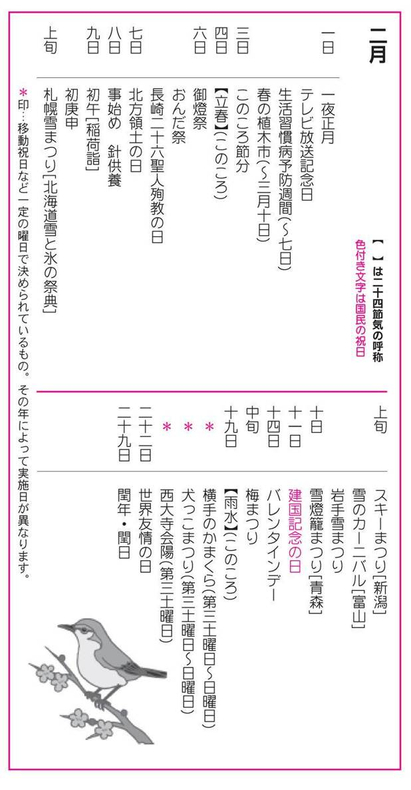
一日
●一夜正月（いちやしょうがつ）
男性の厄年[＊①]の中でも四十二歳になった人が、早く厄年を送ってしまうために、「年かさね」と称して、二月一日を新たな元旦として年を取り直すこと。
●テレビ放送記念日（てれびほうそうきねんび）
一九五三年（昭和二十八年）二月一日に、日本初のテレビ本放送開始を記念して創設された。日本では、一九二七年（昭和二年）高柳健次郎（後に日本放送協会入所）らによって研究開始、一九四〇年（昭和十五年）ＮＨＫ研究所が実験放送に成功した。その後、一九六〇年（昭和三十五年）各局カラーテレビ本放送、一九八四年（昭和五十九年）ＮＨＫ衛星放送の試験放送開始などを経て、今日の地上波デジタル放送に至る。
●生活習慣病予防週間（せいかつしゅうかんびょうよぼうしゅうかん）
二月一日～七日。厚生労働省が各都道府県及び民間関係団体からの協力のもと、生活習慣病予防の正しい知識普及のために一九五九年（昭和三十四年）から実施している。生活習慣病とは、高血圧・癌・心臓病・糖尿病などをさすが、この時期が最寒冷期で、生活習慣病が多発することから決められたものである。「生活習慣病」は一九九七年（平成九年）に「成人病」の呼称から変更された。
●春の植木市（はるのうえきいち）
熊本県熊本市白川河川敷で二月一日から三月十日まで開催される。期間が四十日近くもあるので、植木の数は延べ百万本といわれ、訪れる人も多い。熊本に春を呼ぶ風物詩の一つで、九州の代表的な植木市である。
三日
●節分（せつぶん）
雑節の一つ。節分というのは、季節の分かれ目の意味で、季の区切りをさした。つまり、一年を四季に分けると、節分は、立春・立夏・立秋・立冬の各前日の年四回あるはずであるが、節分というと、立春の前日だけをさすようになった。各寺社の行事の中でも、節分は、「追儺」[＊②]、「豆まき」として親しまれている行事の一つとなっている。豆まきは「豆打ち」ともいい、各家庭でも、大声で『福は内、鬼は外』と唱えながら豆をまく。自分の年齢と同じか、一つ多い数のいり豆を食べる。
四日
●立春（りっしゅん）
二十四節気の第一番目。暦の上ではこの日から春。新暦の二月四日ころにあたり、前日が節分である。旧暦が廃止された今日でも、いろいろな行事の起点となっていて、立春を元日として祝う所もある。立春のころから春分さらに夏至に至るまで、日はだんだん長くなる。
六日
●御燈祭（おとうさい）
和歌山県新宮市、神倉神社。六日。熊野の代表的な夜祭り。神倉神社は地上六十㍍の高い岩壁の上に立つ社で、巨大な岩を御神体とする。巨石信仰と熊野修験道が結びついた火迎えの儀式。当日は女人禁制。
●おんだ祭（おんださい）
奈良県桜井市、大神神社。六日。田遊び[＊③]の神事。拝殿で、古式にのっとり、田作男が田馴し・畔作り・水口作りの仕草を行い、次いで早乙女が苗取り・田植えの仕草をして、五穀豊穣を祈る。
●長崎二十六聖人殉教の日（ながさきにじゅうろくせいじんじゅんきょうのひ）
豊臣秀吉の切支丹弾圧により、一五九七年（慶長二年）のこの日、キリシタン二十六人が、十字架にかけられて殉教した。その後、一八六二年（文久二年）にローマ法皇ピウス九世によって、全員が聖人に列せられた。なお、二〇〇一年（平成十三年）に没したマザーテレサは、異例の早さで二〇〇三年（平成十五年）に聖人に列せられている。
七日
●北方領土の日（ほっぽうりょうどのひ）
第二次世界大戦でロシアに占領された北方領土は、国後・択捉・歯舞・色丹の四島。この四島の返還運動推進を目的に、一九八一年（昭和五十六年）に閣議決定された。一八五五年（安政二年）二月七日に、択捉以南は日本の領土と認めて締結された日露通商条約にちなんでいる。
八日
●事始め（ことはじめ）
「事始め」は農作業を開始する日。この日には、大根・ごぼう・いも・にんじん・豆腐・こんにゃくなどを入れた「お事汁」を食べる習わしがある。「事」は、もともとは神事・祭事を表す言葉で、二月八日と十二月八日の両日を、事の日・事八日・八日節句などという。二月八日を「事始め」、十二月八日を「事納め」とするところが多い。この日には、妖怪[＊④]が来るとして仕事を休み、目ザルを庭に掲げて厄払いをするとされる。
●針供養（はりくよう）
二月八日と十二月八日の「事の日」か、どちらかの日に行われる。一年の間に、裁縫で使って折れたり、古くなったりした針を神社に納めて感謝する行事。供養は近くの淡島神社[＊⑤]に出かける。近年は、弁天様も女神を祀っていることで、針供養を行っている所もある。
九日
●初午（はつうま）
午（うま）は十二支[＊⑥]の一つ。二月最初の午の日に各地の稲荷神社で稲荷神を祀る行事が行われる。稲荷詣ともいう。初午には「正一位稲荷大明神」と書いた赤い幟（のぼり）を立て、赤飯や油揚、団子などを供えて参詣する。稲荷信仰の総本社である京都の伏見稲荷大社をはじめ・東京都の王子稲荷・愛知県の豊川稲荷・佐賀県の祐徳稲荷・茨城県の笠間稲荷・岡山県の最上稲荷などが参詣人で賑わう。
●初庚申（はつかのえさる）
庚申（「こうしん」とも読む）は、干支（えと）[＊⑦]の組み合わせの一つ。初といっても庚申は二月にならないと出てこない。その年最初の庚申の日を初庚申といい、その前夜を宵庚申という。六十年に一回しか巡ってこない申年の初庚申では、盛大に庚申講が行われる。庚申は、中国の道教信仰が日本の猿田彦命の祭りと習合したのち、仏法守護の帝釈天に吸収されたものとされる。庚申講では、庚申の夜は寝てはいけないとされ、徹夜で酒を飲む習わしがある。柴又帝釈天の庚申講が有名。
◎柴又帝釈天...東京都葛飾区柴又。帝釈天は、仞利天喜見城の天主帝で、三十三天尊ともいう。日蓮上人の信仰が厚かった仏なので、日蓮宗の人たちも信仰している。この柴又の帝釈天は、寅さんで有名になり参詣者が多い。初庚申の日には、早朝からお水頂戴という行事があり、関張札や一粒御符という小さな朱玉を頂き、帝釈天のわき水を持参した小瓶に入れて帰る。
上旬
●札幌雪まつり（さっぽろゆきまつり）
北海道札幌市、大通公園・すすきの・真駒内ほか。二月の第一週と第二週の間の一週間。北海道の冬の祭典を代表する氷雪まつり。「国際雪像コンテスト」が行われ、規模も年々大掛かりとなっている。話題になっているものや、新しい着想による雪の芸術など大野外美術展である。
◎北海道各地の雪と氷の祭典
・函館、大沼雪と氷の祭典...大沼国定公園広場。二月上旬。雪像、氷像の製作展示のほか、各種のアトラクションがある。
・旭川冬まつり...旭川市。二月上旬。買物公園、石狩川河川敷を中心に氷雪像展示、花火、馬橇、スノーモービルなど種々の催しが行われる。
・層雲峡氷瀑まつり...大雪山国立公園。二月上、中旬。層雲峡を囲む大雪の山々は、樹氷、霧氷、巨大な氷瀑（滝が凍って氷状になったもの）と、神秘的な自然の造形美が映える。この中で、アイヌ民族舞踊、氷中餅つき大会、花火、カラオケ大会などの行事がある。
・帯広氷まつり...帯広市。二月上旬。世界一長いベンチのあるグリーンパークで、氷雪像、雪中ラグビー、遊覧馬橇、犬橇レース、氷のすべり台など。
・釧路氷まつり...釧路市。第一金曜日～日曜日。栄町公園で、大小の氷像展示や写真のコンテスト、歌謡ショーや郷土芸能などが行われる。
・網走オホーツク流氷まつり...網走市、網走商港。二月中旬に四日間。人気は大流氷地曳き。他に氷像展やオホーツク太鼓、トッカリの踊りなど。
・紋別流氷まつり...紋別市、紋別港。二月中。氷像展、氷柱抱き付き大会、沖揚音頭公開、写真コンテスト。この時期は砕氷船ガリンコ号が運航される。
●スキーまつり
新潟県上越市。二月上旬。頸城平野の中心地で、豪雪地帯で有名。金谷山スキー場は、日本のスキー発祥地とされている。スキーまつりでは、千五百人ほどのスキーヤーが手に手に松明（たいまつ）を持って滑走し、小学校の校庭では民謡踊り大会なども催される。
●雪のカーニバル
富山県下新川郡、宇奈月温泉。第一土曜日・日曜日。温泉街の後にあるスキー場から、松明（たいまつ）を持ったスキーヤーたちが花火を合図に、六百余本の篝火（かがりび）の間を縫って一気に温泉街まで滑降する。街では雪の芸術作品も多数造られる。
●岩手雪まつり（いわてゆきまつり）
岩手県雫石町、小岩井農場。第一土曜日～第二日曜日までの九日間。農場に、かまくらや雪像が造られ、雫石姉っこの手踊りや郷土芸能、雪娘コンテストや雪中運動会などがまつりを盛り上げる。かまくらの中では、ジンギスカン料理などが味わえる。
十日
●雪燈籠まつり（ゆきとうろうまつり）
青森県弘前市、弘前公園。城と春の桜で有名な公園内で、桜より一足早く行われる。燈籠は五百基以上もあり、夜になると、雪燈籠の灯が雪に反射して倍も明るい。ほかに、かまくらや雪像も造られる。
十一日
●建国記念の日（けんこくきねんのひ）
国民の祝日。建国をしのび、国を愛する心を養う日として、一九六六年（昭和四十一年）に制定された。もとは、紀元節として明治・大正・昭和の三代にわたって奉祝されてきたが、戦後廃止された。現在、それが約二〇年の時を経て復活した。現在、文部科学省は、建国の日ではなく建国を記念する日であるとして、建国とは断定していない。これが、紀元節と建国記念の日の違いである。
十四日
●バレンタインデー（Valentine Day）
この日は、バレンタイン[＊⑧]の故事にちなみ、女性から男性に愛を打ち明けてもよいとされている。昨今は、チョコレートを贈るのが習慣になっている。ちなみにホワイトデー[＊⑨]があるのは日本だけである。中旬
●梅まつり（うめまつり）
二月は観梅の季節。鶯の初音とともに梅前線が南から上ってきて、各地の梅祭りが賑わう。梅は太平洋岸の暖かい地方では、一月の中旬には咲き始めるが、東北地方の開花は三月下旬になる。
◎各地の梅の名所
・水戸偕楽園...茨城県水戸市。園内に約三千本、弘道館付近に老木百五十本。
・秋間梅林...群馬県安中市。約一万本。
・湯島天神...東京都文京区。泉鏡花の婦系図で有名。
・五日市梅林...東京都あきる野市。樹齢四百年の老梅があり、約千本。
・曽我の梅林...神奈川県小田原市。御殿場線の曽我から別所あたりまでに、約五万本。
・鎌倉の梅...神奈川県鎌倉市。瑞泉寺では珍種の黄梅が咲く。東慶寺なども有名。
・熱海の梅林...静岡県熱海市。全国を通じて最も早く咲くとされ、一月中旬には、梅祭が行われる。冬至梅など早咲きの梅三千本がある。
・田辺梅林...和歌山県田辺市。近畿地方で最も早く咲くとして名高い。
・南部梅林...和歌山県日高郡。南部川に沿う広大な地域で規模は日本一とされる。特に晩稲の丘は「一目百万香り十里」と言われるほど。見ごろは一月下旬～二月上旬。
・奈良月ヶ瀬...京都府と三重県との県境近く。古来より日本有数の梅花郷。
・北野神社梅花祭...京都府。境内に冬至梅・初雁などの名木。梅花祭は二月二十五日。
・太宰府天満宮...福岡県太宰府市。菅原道真で有名な飛梅がある。二月中旬～三月上旬。
十九日
●雨水（うすい）
二十四節気の一つ。立春から数えて十五日目で二月十九日ころ。寒さがゆるみ、雪が総て雨となって降るようになることを意味する。九州の暖かい地方では草木が芽吹きはじめるが、北国では、まだまだ除雪作業に忙しい。関東地方でも、雪が降りやすく、都心では雪で交通機関がマヒするなどの混乱が起きる。
二十日
●横手のかまくら（よこてのかまくら）
秋田県横手市、横手公園かまくら村ほか。第三土曜日～日曜日。子供たちは二、三日前から雪洞[＊⑩]を造り始め、正面に雪の祭壇を作って水神様を祀る。夜には、灯明をともし、甘酒を飲んだり、餅を食べたりして過ごすが、通行人が通ると招き入れ甘酒などをふるまう。大人たちは水神を拝む際、供え物やさい銭をあげていくが、子供たちは、後でそれを分け合うのを楽しみとする。昔は小正月の行事であった。
●犬っこまつり（いぬっこまつり）
秋田県湯沢市。第三土曜日～日曜日。横手で「かまくらまつり」が行われる同時期に、湯沢では「犬っこまつり」が開催される。公園・広場などに、雪の小さなお堂を造り、その前に一対の犬の雪像を飾る。祭壇には、米の粉を練って作った犬っこ、神酒、餅などを供え、ろうそくをともす。子供たちはお堂を巡り遊び、雪堂のある広場の露店では犬っこの縁起物などが売られる。
●西大寺会陽（さいだいじえよう）
岡山県岡山市、西大寺観音院。第三土曜日。「裸祭り」で知られる。会陽は「春が来た」の意で、裸祭りは、修正会の結願として行われる。約三千人の男たちが本堂の高窓から投げ込まれた陰陽二本の宝木（しんぎ）を奪い合う。これを得ると福がくるとされる。裸祭りは、全国各地に数えきれないほどあるが、西大寺会陽はその勇猛果敢さで定評がある。裸祭りとしては、岩手県水沢市の蘇民祭、福岡市筥崎宮の玉取祭、千葉県大原の裸祭り、香川県善通寺大会陽などが有名。
二十二日
●世界友情の日（せかいゆうじょうのひ）
ボーイスカウト運動の創始者ベーデン・パウエル卿（一八五七～一九四一年、イギリス）夫妻の誕生日が同じという日を記念して、一九六三年（昭和三十八年）に制定され、一九六五年（昭和四十年）から実施されている。人間関係を国際的に深めようというもので「国際友愛の日」ともいう。英語では「Thinking Day」という。
二十九日
●閏年（うるうどし）・閏日（うるうび）
閏年は、太陽暦では四年に一回巡ってくる。閏年は二月に繰り入れられ、閏年の二月二十九日が閏日である。日本では一八七二年（明治四年）から採用。閏年は西暦年数が四で割り切れる年とされるので、原則的には四年に一回巡ってくることになるが、例外があって、百で割り切れる年のうち、四百で割り切れない年は平年として扱う。
災難に遭うことが多いので、気をつけるべきだといわれる年齢で、数え年でいう。男性は、二十五歳・四十二歳・六十歳で、女性は、十九歳・三十三歳とされる。特に男性の四十二歳、女性の三十三歳は厄除けをする人が多い。
中国の古い儀礼で、悪霊や疫鬼、災難を追い払う行事。日本でもこれが取り入れられ、鬼追いの式は寺院の修正会・修二会の結願（法会の終了）、神社の節分祭の行事となった。季節の変わりのこの時期は、陰と陽とが対立して邪気が生じ、災禍をもたらすとされた。旧暦では立春は正月で、節分のころは年頭、あるいは晦日にあたることが多かったため、追儺の行事を行って、無病息災と五穀豊穣を祈った。追儺は「鬼やらい」「だだ押し」ともいう。
稲作の手順を演じることによって、稲の実りを予め神に約束させる神事芸能。「田遊び」の名称は、地方によってさまざまに呼ばれ、お田植え・御田（おんだ）・田打ち・田祭り・田作り・鍬祭り・ナリハイなどがある。
地方によって、一つ目小僧、大眼（だいまなこ）、ミカリ婆さんなどの妖怪が来るとされる。目ザルを掲げるのは、無数の目があるのを見て、妖怪がびっくりして逃げるから。妖怪は、川や里山、民家などさまざまな場所に住んでいて、ときどき人間にいたずらや悪さをするが、人助けをしたり、間抜けな面もあったりするので、親しまれている。天狗、河童、化け猫、九尾のきつねなどが妖怪の仲間。
本社は和歌山県和歌山市。祭神が婆利（ばり）才女であるところから、「はり」の発音を結びつけて針供養を行ったもの。淡島明神を祀る堂宇では、壇上に豆腐を供え、女性たちが持ち寄った針をそれに刺して供養していく。東京では浅草観音境内にある淡島堂が有名。
十二支とは、子（ね／シ）・丑（うし／チュウ）・寅（とら／イン）・卯（う／ボウ）・辰（たつ／シン）・巳（み／シ）・午（うま／ゴ）・未（ひつじ／ビ）・申（さる／シン）・酉（とり／ユウ）・戌（いぬ／ジュツ）・亥（い／ガイ）の十二をいう。中国で年を表す記号とされたが、わかりやすくするために、十二支を次のように動物に当てはめたものが日本に伝わった。
子→鼠（ネズミ）・丑→牛（ウシ）・寅→虎（トラ）・卯→兎（ウサギ）・辰→竜（リュウ）・巳→蛇（ヘビ）・午→馬（ウマ）・未→未（ヒツジ）・申→猿（サル）・酉→鶏（ニワトリ）・戌→犬（イヌ）・亥→猪（イノシシ）
十干十二支（じゅっかんじゅうにし）の略語。十二支で年や日を数えると十二で一巡してしまうので、さらに十干と組み合わせて、六十で一巡する数え方が考えられた。日では約二ヶ月に一回巡ってくるが、年だと六十年に一度しか巡ってこない。十干とは、甲（きのえ／コウまたはカツ）・乙（きのと／オツまたはイツ）・丙（ひのえ／ヘイ）・丁（ひのと／テイ）・戊（つちのえ／ボ）・己（つちのと／キ）・庚（かのえ／コウ）・辛（かのと／シン）・壬（みずのえ／ジン）・癸（みずのと／キ）の十をいう。
古代ローマの聖者バレンティヌス（英語読みでバレンタイン）のこと。三世紀のころに、ローマ皇帝クラウシウスのために殉教した司教で、その日が二月十四日であったことにちなみ、ローマの若者たちが、互いに名を匿して愛を告白したり、プレゼントを贈ったりする日としたのが始まりとされる。
バレンタインデーに、チョコレートのプレゼントを受けた男性は、返礼として三月十四日にプレゼントをする。一九七七年（昭和五十二年）に福岡県の菓子店が発案した。当初は「マシュマロデー」と呼んでいたものが、マシュマロと同じ白い色のキャンデーにしようとの声から「ホワイトデー」に変わったとされる。
雪で作る小部屋。秋田県などは雪が多いので、雪をほったり、雪を固めて積み重ねたりして、雪洞を造るが、福島県から関東北部にかけては、木や竹を柱にし、藁などを使ってドンド小屋・鳥小屋という、正月用の仮小屋を作った。いずれも子どもが主役。
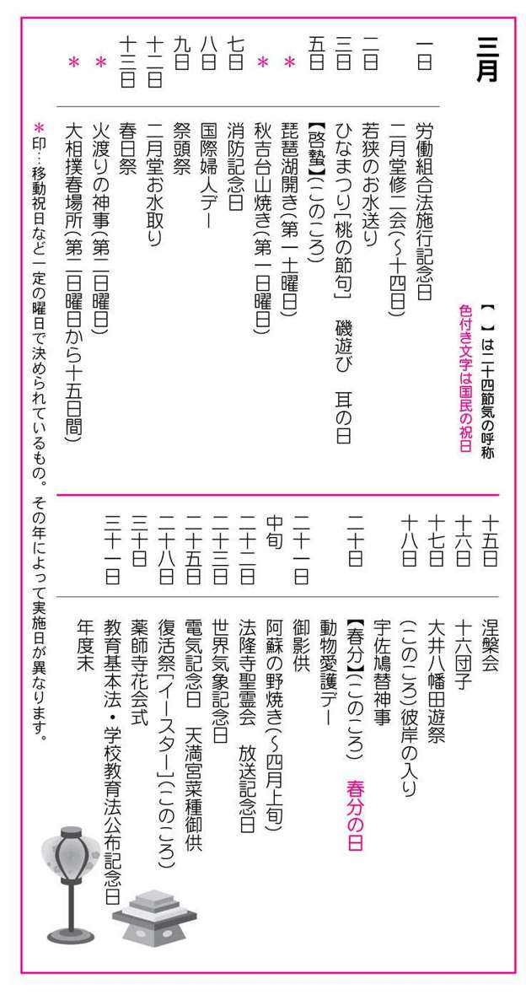
一日
●労働組合法施行記念日（ろうどうくみあいほうしこうきねんび）
労働組合法は、一九四五年（昭和二十年）十二月に制定され、翌年の三月一日から施行された。労働者が使用者に対して対等の立場を取り、その地位の向上を計ることを目的とする法律。労働者が労働組合を結成して、団体交渉・争議などの団体行動をすることを保証するもの。
●二月堂修二会（にがつどうしゅにえ）
奈良県奈良市、東大寺二月堂。一日～十四日。「お水取り」の名で知られる。二月堂は東大寺羂索院の別称で、七五一年（天平勝宝三年）に建立され、不空羂索観音を安置して、その落慶供養を翌年二月一日から十四日まで行ったことに由来し、修二会はその記念行事であったのがはじめとされる。二月堂といわれるのは、毎年の定期法要が旧暦二月に行われたからで、現在は期日のみが三月になった。有名な三月十二日の「おたいまつ」や「お水取り」は、この修二会の中の一行法にすぎない。
◎おたいまつ...練行衆が、二月堂への上堂の際に大松明（おおたいまつ）を燃やすことからそう呼ばれ、十二日の十九時ごろから、二月堂の回廊で大松明を大きく振り回す。この火の粉を浴びると功徳があるとされ、全国からおびただしい数の人が集まる。
◎お水取り...十三日の未明に、二月堂境内にある「若狭井」という井戸の清水（聖水）を汲みあげて本堂に運ぶ行法のこと。この聖水は、お水送りと深く関わっている。
二日
●若狭のお水送り（わかさのおみずおくり）
福井県小浜市、八幡社・神宮寺・若狭神宮寺。奈良東大寺二月堂の「お水取り」の行法に先駆けて、若狭の国（福井県）小浜の神宮寺の僧たちが聖水を遠敷川に放つ神事のこと。ここで放たれた聖水は地下水となって二月堂の若狭井にわき出るとされている。若狭井は通常は枯れ井戸だが、この夜に限って水が満ちるという。夕刻からこの水切り神事には、お水取り行事に劣らない盛況をみせる。
三日
●ひなまつり
「ひなまつり」は、ひな壇[＊①]に人形を飾り、桃の花や白酒、ひし餅やあられなどを供えて祝う行事。ひなまつりが女の子の行事になったのは、江戸時代ころとされている。ひなの節句・桃の節句・上巳（じょうし）の節句・弥生の節句などいろいろな名前で呼ばれる。ひなまつりの形式は、中国から伝わり、最初は宮廷・貴族の間ではじまり、次いで武家社会に取り入れられ、次第に民間に浸透していったものだとされる。一方、民間の伝統的な人形行事として「流しびな」[＊②]があり、今でも鳥取県などに残っている。ひな人形は、飾るのはいくら早くてもよいが、三日を過ぎたらすぐしまわないと婚期が遅れるという。
●磯遊び（いそあそび）
ひなまつりの日、海に近いところでは、磯に出て遊んだり、浜に集まって草餅などを食べたりして過ごす習慣があり、これを「磯遊び」、「磯まつり」などといった。ひなまつりにハマグリやアサリの節句料理を食べるのは、この名残であるとされる。この日を磯の口明けと称して、貝や海草などの解禁日としている所もある。汐干狩（しおひがり）もこのころから始まるが、磯遊びが起源とされている。
●耳の日（みみのひ）
耳の日は、一九五六年（昭和三十年）から実施されている。三月三日としたのは、三重苦のヘレンケラーをサリバン女史が教育を始めた日であり、電話の発明者グラハム・ベルが生れた日で、「三三」が「みみ」と語呂合わせで覚えやすいことによる。耳は聴覚や平衡感覚などの重要な器官であるのに、案外無関心なため、耳の認識を深め、耳疾患の予防と聴覚障害の早期発見・早期治療の徹底を期すのがこの日の主旨。
五日
●啓蟄（けいちつ）
二十四節気の一つ。雨水の後の十五日目。太陽暦で三月五日ころ。暦の上では、春の盛りに入る寸前。啓蟄とは、地中で冬ごもりをしていた虫が、草木の芽吹きと共に地上に這い出るという意味。朝方の最低気温が五度以上になると、啓蟄がひんぱんに見られるというが、それにあたるのは、九州南部の限られた地方。ところによって雷鳴が聞こえるが、これを虫出しの雷という。啓蟄は、ほぼ桜前線とともに北上し、北海道では約二カ月遅れの五月に入ってからとなる。
六日
●琵琶湖開き（びわこびらき）
滋賀県大津市、琵琶湖湖上。三月第一土曜日。行楽シーズン到来を告げる湖開きの祝賀行事。一日船長に就任したタレントや有名人が黄金の鍵と花束を湖水に投下して運航安全を祈願するもの。観光船や遊覧飛行機の湖上パレードなどがあって、満艦飾の船が湖水を巡り、湖上は一日中賑わう。
七日
●消防記念日（しょうぼうきねんび）
一九四八年（昭和二十三年）三月七日、消防組織法が施行された。従来は警察の所管であった消防業務が、この日から自治体消防組織として独立し消防庁が開設したことを記念するもの。
●秋吉台山焼き（あきよしだいやまやき）
山口県美弥郡、秋吉台。三月第一日曜日（天気により変更）。啓蟄のころの春を迎える山の祭典として定着し、一九五五年（昭和三十年）から、観光行事として行われている。秋吉台の大草原に幾筋もの青い煙がたち昇るが、この台地の地下は秋芳洞で、秋吉台と秋芳洞は、全長八十㍍のエレベーターで結ばれている。
八日
●国際婦人デー（こくさいふじんでー）
一九〇四年（明治三十七年）三月八日、ニューヨークの婦人労働者たちが、参政権要求の運動を起こし、この日を、アメリカ婦人デーと決定した。その後、ヨーロッパにもこの運動が広まり、一九一〇年（明治四十三年）の第七回国際社会主義者会議で、国際婦人デーとして正式に定められた。日本では、一九二二年（大正十一年）三月八日、社会主義婦人団体が中心となり、キリスト教青年会館で、婦人の政治的・社会的・経済的自由を訴える演説会を開催したのがそのはじめである。しかし、婦人参政権を獲得できたのは戦後になってから。
九日
●祭頭祭（さいとうさい）
茨城県鹿嶋市、鹿島神宮。五歳くらいの男児が総大将となり、鎧甲（よろい）で肩車されて昇殿し神の子となる。鹿島神宮は香取神宮（千葉県香取市）と並ぶ関東鎮護の大社で、東国水辺の要地にある神社として聞こえ、鹿島立ちする部隊出動の式を模した祭儀がこの祭りの原型とされる。
十二日
●二月堂お水取り（にがつどうおみずとり）
詳細は一日の『二月堂修二会』を参照のこと。
十三日
●春日祭（かすがまつり）
奈良県奈良市、春日大社。藤原氏の氏神であった当社の例祭。かつては、春は旧二月、秋は旧十一月上旬の申の日に行われたところから、申祭（さるまつり）と呼ばれる。当日は、御戸開の神事があり、勅使の参上、御祭文の奏上、大和舞などの儀が平安時代の故実に則って、古式豊かに営まれる。勅使は神饌を供え、祖先とともに直会[＊③]をする。この祭りのメイン・イベントは、参向行列。勅使は黒の、副使は緋の衣冠束帯姿で、馬上静かに拝殿へ進む。
十四日
●火渡りの神事（ひわたりのしんじ）
東京都八王子市、高尾山薬王院。三月第二日曜日。心身修練の功を積んだ山伏が境内で真言密教加持の護摩焚きの行事を終えて、燃え残っている火の上を素足で踏んで、火生三昧を唱えながら渡る。この火渡りの行事には、当日受付で、信徒のほか、一般の人も参加できる。残り火を渡る前後には、禊[＊④]のために、塩の山を踏む。
●大相撲春場所（おおずもうはるばしょ）
大相撲六場所の一つ。三月の第二日曜日からの十五日間に渡って、大阪府立体育会館で行われる。
十五日
●涅槃会（ねはんえ）
釈迦入滅の日で、各寺院で釈尊遺徳の追慕奉賛の法会が行われる。法会では涅槃図[＊⑤]を掲げ、遺教経（ゆいきょうぎょう）を読誦する。この教典は涅槃の直前に、諸弟子に遺した最後の教戒を編纂したもの。涅槃とは、生命の火が消える、つまり「死去」を意味する梵語「ニルヴァーナ」の訳語である。また、涅槃像としては、法隆寺五重塔の初層内部北面の塑像が有名で、奈良時代初期の制作とされる。
十六日
●十六団子（じゅうろくだんご）
旧暦時代の昔の農村では、三月になると田の神様が里に降り、稲作を見守るとしてきた。それが新暦に変わってからも、三月十六日には、田の神おろし・農神おろし・あるいは田の神迎えを行事としている地方がたくさんあり、特に東北・北陸地方に多い。青森県では、農神が山から稲の種を持って降りて来るのが、三月十六日だとして、団子十六個を升に入れて、家の神に供える。
十七日
●大井八幡田遊祭（おおいはちまんたあそびまつり）
静岡県大井川町藤守、大井八幡宮。大井川の水神を鎮め、豊作を祈願する祭事で、九八五年（寛和元年）以来行われている。一週間ほど宮籠りした青少年によって二十五種の無形文化財指定の舞が深夜一、二時ごろまで演じられる。中でも二十一番の「猿田楽」の踊りが有名。
十八日
●彼岸の入り（ひがんのいり）
春分と秋分を中日として、その前後三日間、合わせて七日間を「彼岸[＊⑥]」といい、最初の日を「彼岸の入り」、最後の日を「彼岸の明け」という。春の彼岸は三月二十一日ごろなので、春の彼岸の入りは十八日ごろ、明けは二十四日ごろとなる。彼岸の中日は、太陽が真西に没するので、西方浄土の仏説と結びついて先祖供養の日とされている。寺方では彼岸会が営まれる。各家庭でも、おはぎや団子を仏壇に供え、先祖の墓参りをする。なお、秋の彼岸は九月二十三日ごろである。
●宇佐鳩替神事（うさはとかえしんじ）
大分県宇佐市、宇佐神宮。全国八幡宮の総本社。「西の日光」といわれるほど華麗で、伊勢神宮に次ぐ宗廟として尊敬を集めている。朱塗りの本殿は、八幡造りの最高峰として国宝に指定、重文指定物も多い。御祓会の夜行われる鳩替神事は、大宰府天満宮の鷽替神事と同様の替物神事である。土製で、あたり番号付きの替鳩を買い、当夜境内に集まった者同士で交換を行う。
二十日
●春分の日（しゅんぶんのひ）
国民の祝日。春分は二十四節気の一つ。太陽暦で三月二十一日（閏年は二十日）ころ。太陽は春分点に達して黄経が零度となり、昼夜の長さが同じになる。この日を境に夏至まで、昼の時間はだんだん長くなる。春分は春の彼岸の中日で、彼岸には法会、墓参りが行なわれる。「暑さ寒さも彼岸まで」といわれるように、この頃から気温が上昇しはじめ、霞たなびく景色が見える。
●動物愛護デー（どうぶつあいごでー）
日本で最初の本格的な動物園は、一八八二年（明治十五年）三月二十日に開園した上野動物園である。この開園記念日が「動物愛護デー」とされた。動物園は当初、農商務省博物局の付属動物園であったが、一九二四年（大正十三年）に下賜され、一九四九年（昭和二十四年）に現在の名称となった。かつて、この日を含む一週間を動物愛護週間としていたが、諸事情により、秋分の日を中心とした一週間に変更された。
二十一日
●御影供（みえく）
和歌山県伊都郡、高野山金剛峯寺奥之院。二十一～二十三日。真言宗の開祖弘法大師（空海）は、八三五年（承和二年）三月二十一日、六十一歳で入定した。この日を期して、真言宗の総本山高野山金剛峯寺をはじめ、各寺院で弘法大師の正忌が営まれるが、これを「御影供」という。高野山のみが新・旧暦の三月二十一日に二回行い、他はたいがい四月二十一日に行っている。高野山では、この日、奥之院で「御衣替法会」という法要が行われる。弘法大師は三筆の一人として書でも有名。
中旬
●阿蘇の野焼き（あそののやき）
熊本県、阿蘇内輪の旧火口原・阿蘇郡根子岳（猫岳）。三月中旬から四月上旬の間。牛の放牧を前にした三月中旬ころから行われる行事。風の静かな日に、共有草地の牛の餌にならないカヤの枯れ草を、住民総出で焼き払う。牛に付くダニを焼き殺す効能もある。焼け跡に雨が降ると、黒く焼けた大地からは新しい草が芽吹き、旧火口原の山肌は緑一色の草原に変わる。
二十二日
●法隆寺聖霊会（ほうりゅうじしょうりょうえ）
奈良県生駒郡斑鳩町、法隆寺。二十二日～二十四日。一般に「聖徳太子のお会式」、あるいは「お太子様」と呼ばれて、三日間にわたって行われる。お会式中は、秘仏の聖徳太子の木像も開扉され、さまざまな飾りものが供えられる。この聖霊会が現在のような形になったのは、太子信仰が盛んになった鎌倉期以後とされる。
●放送記念日（ほうそうきねんび）
日本で最初にラジオ放送が始まった一九二五年（大正十四年）三月二十二日を記念して、ＮＨＫが一九四三年（昭和十八年）に制定したもの。初放送は、東京芝浦の東京高等工芸学校に設けられた社団法人東京放送局の仮スタジオから行われた。次いで、大阪と名古屋でも開始され、この三局が合併して日本放送協会となった。当時の聴取料は月一円、受信者数は五千四百人余であったという。
二十三日
●世界気象記念日（せかいきしょうきねんび）
世界気象機関条約の発効の日である一九五〇年三月二十三日を記念するもの。世界気象機関（ＷＭ０）発足十周年にあたり、気象事業の国際的協力の意義を認識し、その発展を祈念して一九六〇年（昭和三十五年）に定められた。日本がこの条約に加盟したのは、一九五三年（昭和二十八年）九月十日で、加盟国としては第五十七番目である。
二十五日
●電気記念日（でんききねんび）
一八七八年（明治十一年）三月二十五日に、海外通信を行う電信中央局が新設された。祝賀会の席上、英国人ウィリアム・アルトン工部大学校教授と助手の日本人学生が公の場所で初めて五十個のアーク灯をつけて、人々を驚嘆させた。これにちなんで、日本電気協会が一九二七年（昭和二年）に定めた。
●天満宮菜種御供（てんまんぐうなたねごく）
大阪府藤井寺市、道明寺天満宮。道明寺天満宮は、土師天満宮ともいう。天暦年間（九五六年ころ）の創建と伝えられ、祭神は蛭児命・手力雄命・猿田彦命それに菅原道真である。祭事の正式名は天満宮祭だが、供え物の間に菜の花を挟んで捧げるので、「菜種御供」とか「菜種祭」という呼び名で親しまれている。熟した梅の実の形に作つた菜種色の団子の授与もある。
二十八日
●復活祭（ふっかつさい）[イースター（Easter）]
春分の日の後に来る最初の満月後の日曜日。イエス・キリストが十字架にかけられて死んでから三日目に蘇ったこと（復活）を祝う日。クリスマス（イエス生誕の日）、ペンテコステ（受胎の日）とともに、キリスト教三大祝日の一つとされる。復活祭には、野ウサギとニワトリの卵[＊⑦]が不可欠とされている。イースターの日は、教派によってまちまちであったものを、四世紀の初めに、「春分の日が終わって初めて来る満月のすぐ後の日曜日」というやや複雑な日と決められた。三十日薬師寺花会式（やくしじはなえしき）奈良県奈良市薬師寺。三月三十日～四月五日。修二会と花会式の行事が習合されたものとされる。本尊の薬師如来の御前を梅・桃・椿などの和紙の造花で飾ることからこの名がある。最終日の四月五日に結願法要に合わせて「鬼追い式」が行われる。
三十一日
●教育基本法（きょういくきほんほう）・学校教育法公布記念日（がっこうきょういくほうこうふきねんび）
一九四七年（昭和二十二年）三月三十一日に、教育基本法・学校教育法が公布されたことを記念して制定された。教育の機会均等、六・三・三制の導入など制度化された。「六・三・三制公布記念日」ともいう。
●年度末（ねんどまつ）
四月一日から翌年の三月三十一日までを一年間とする最後の日のことをさす。暦年とは異なる一年間を便宜的に区分して年度としたもので、官庁や企業の会計決算、学校の学年の区分などで使用されている。
ひな壇は、七段飾りが正統派。最上段が内裏びな（向かって左に男びな、右に女びなが主流）。二段目は三人官女（向かって左から、加えの銚子、三方に盃、長柄の銚子を持つ）。三段目は五人囃子（向かって左から、太鼓、大皮、小鼓、横笛、謡のはやしかた）。四段目は随身（向かって左に右大臣、右に左大臣）、五段目は三士丁という衛士で、両脇に「左近の桜」（向かって右）「右近の橘」（向かって左）を飾る。桃には邪気を払い百鬼を制する魔除けの力があるといわれる。六段目は嫁入り道具、七段目は御所車など。
紙や土焼きの質素な人形を作り、節句が済むと、川や海へ流してしまうというもの。人形に、災厄を負わせて水に流すという厄除けのまじないの意味がある。
神祭終了後、神饌や神酒のおろし物を祭りの参加者が分かち、飲食する行事。
水などで体を清め、罪や汚れを払うこと。
涅槃図とは、釈迦の死を描いたもの。臨終の釈迦が沙羅双樹の下で、右脇を下にして頭北西面に臥しており、周囲には弟子はもとより、鳥獣類、鬼畜までが悲しむ中、生母、摩耶夫人が天界から降下してきた姿が描かれているのが普通である。涅槃図として最古のものは、一〇八六年（応徳三年）の銘のある金剛峯寺の仏涅槃図（国宝）で、最も優れているとされる。京都府東山の泉涌寺には、紙本極彩色で、縦十六㍍・横八㍍という日本最大の涅槃図が所蔵されている。東福寺にも同様の大涅槃図がある。
彼岸というのは、向こう岸の意味で極楽浄土を指し、現世のこちら岸は此岸（しがん）という。彼岸の梵語は「波羅密多」で、煩悩の此岸を離れて、涅槃の世界に達するという意味がある。
野ウサギは、春の女神エストレの使者で、絵や模様の描かれた玉子を贈り物として運んでくると信じられていて、イースターには彩色した卵（イースターエッグ）を食べる習慣がある。イースターが近づくと、子供たちは野ウサギのために庭に巣を作ったり、ウサギの飾りのついたバスケットを用意したりして、卵のプレゼントを待つという。また、女性が思い思いの型や色の帽子を競い合う習慣もあり、これはイースターハットと呼ばれている。
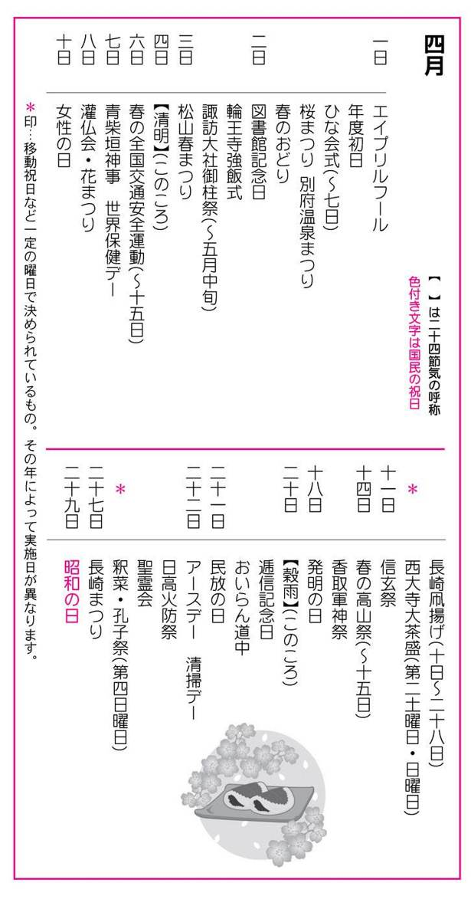
一日
●エイプリルフール（April Fool's Day）
十八世紀ごろから欧米で広く行われている風習。日本には江戸時代に伝わり「四月ばか」とか「万愚節」という。一日の午前中に限り、社会の秩序を乱さない程度に、嘘をついても人をからかってもとがめられないという日とされる。但し、国の元首や大統領に関する内容のものは、たとえジョークであることがはっきりしていても、厳禁とされている。
●年度初日（ねんどしょにち）
「年度」は暦年と異なる一年の期間で、一八八六年（明治十九年）に財政法で予算年度が四月一日から翌年三月三十一日までと決められたのがはじまり。会計年度・学校などがこの予算年度に合わせるようになり、四月一日が年度初日となった。三月三十一日は「年度末」という。
●ひな会式（ひなえしき）
奈良県奈良市、法華寺。一日～七日。尼寺で行われる春の会式である。本尊の十一面観音は、光明皇后の姿を彫ったと伝えられる仏像で、この本尊の前に、人形を飾り、活け花や供え物を並べて、尼僧たちが法要を営む。この法要に参列した女官たちのみやびで美しい姿から、「ひな会式」と呼ばれている。
●桜まつり（さくらまつり）
日本人がもっとも好きな花の一つに挙げられるのが「桜」。老若男女が陽気に誘われて花見の宴を開き、花見酒や隠し芸に興じるさまが、あちこちで見られる。満開の桜は「春爛漫」と形容されるほどに見事である。そしてその満開の桜が一瞬の雨風に散るさまを、「あわれ」とも「いさぎよい」とも感じ、その風情をも楽しむ。桜前線[＊①]の北上とともに各地で桜まつりが開催される。
◎全国各地の桜まつり
・菊池温泉桜まつり...熊本県菊池市、菊池温泉。三月下旬～四月上旬。四月一日の薬師祭を中心に開催される。一万本の桜が見事。
・母智丘桜まつり...宮崎県都城市、母智丘公園。三月下旬～四月上旬。母智丘は、約三千本の桜並木の美しさで知られる。
・岡城桜まつり...大分県竹田市、岡城趾。三月下旬～四月上旬。滝廉太郎の名曲荒城の月を生んだ所。
・平戸城さくらまつり...長崎県平戸市、亀岡公園。三月下旬～四月上旬。平戸港に突出した高台にある平戸城からの眺望は、空と桜と海の三色の絵模様となる。
・金刀比羅宮桜花祭...香川県仲多度郡琴平町、金刀比羅宮。三月下旬～四月上旬。優雅な平安絵巻そのままのような行列が、大門から本宮まで練り歩く。調度品すべてを桜で飾り付ける。
・三次さくらまつり...広島県三次市、尾関山公園。当園は、中国地方でも有数の桜の名所。
・津峰公園桜まつり...徳島県阿南市。開花期間中の約十日間。公園には山桜・吉野桜・ぼたん桜など、約二千本が咲き誇る。
・とやま桜まつり...富山県富山市。第二土曜日・日曜日。全国のちんどん屋が大集合。
・花換えまつり...福井県敦賀市、金崎宮。社務所で桜の造花が分けられ、求めた人たちが境内で行き合った人と交換し合う。
・平安神宮観桜茶会...京都府京都市左京区、平安神宮。神苑の桜は上・中旬が枝垂れ桜、中・下旬が八重桜の見ごろ。また上・中旬には澄心亭で、各流派交代の茶会が毎日催される。
・醍醐の花見...京都府京都市伏見区、醍醐寺。秀吉由縁の桜の名所。一日～二十三日。豊臣太閣の花見行列の再現が四月の第二日曜日に行われる。
・男山桜まつり...京都府八幡市、石清水八幡宮。一日～中旬。期間中は、今様歌とその舞楽、野立の茶会、島原太夫の社参道中などの催事が行われる。
・平野神社桜まつり...京都府京都市北区、平野神社。十日～中旬。東遊びや武者の行列などが行われるが、特に夜桜に人気がある。
・桜まつり姫様道中...静岡県引佐郡細江町。第一土曜日・日曜日。姫街道を大名のお姫様が往来する様子を再現したもの。子供たちのミニ姫様道中もある。
・上野公園桜まつり...東京都台東区、上野公園。三月下旬～四月上旬。ここの桜は、寛永寺の開基・天海僧正が吉野から移したものといわれている。都内有数の桜名所。
・羽村さくらまつり...東京都羽村市。一日～二十日。堰堤に千五百本余りの桜が咲く。
・熊谷さくらまつり...埼玉県熊谷市。荒川堤に約千本の桜が、ニキロにわたって花開く。
・布施弁天さくらまつり...千葉県柏市。あけぼの山公園と布施弁天（東海寺）。四月第一土曜日・日曜日。
・日立さくらまつり...茨城県日立市。四月上旬～中旬。十五㍍の山車の上で三十名の人形芝居。
・土浦桜まつり...茨城県土浦市。四月第一日曜日～第二日曜日。土浦小唄や踊りの大会、野だて茶会など。
・観光桜まつり...栃木県宇都宮市、八幡山公園。公園内に動物園・植物園・交通公園・児童公園などがある。桜は約六百本で夜桜も一興。
・高崎観音花まつり...群馬県高崎市、高崎観音。八日～十五日。高さ四十ニ㍍の白衣大観音の周辺に約三千本の桜が咲く。
・二本松の春まつり...福島県二本松市、霞ヶ城公園。四月上旬～五月五日。夜間は電飾夜桜観賞。
・郡山桜まつり...福島県郡山市。四月中旬。開成山公園内の五十鈴湖畔の桜が名所。
・北上さくらまつり...岩手県北上市。四月二十日～五月五日。百二十五種、約一万本の桜を有する桜の名所。
・弘前城さくらまつり...青森県弘前市、弘前公園。四月二十五日～五月六日。弘前城を中心とする弘前公園には約五千本の桜があり、城と調和する美しさで日本有数の桜の名所。
・松前桜まつり...北海道松前郡松前町。松前城の後方公園に七千本。松前神楽など郷土芸能が行われる。五月上・中旬。
●別府温泉まつり（べっぷおんせんまつり）
大分県別府市。一日～三日。観光まつり。温泉神社の朝見神社から松原公園までお浜降りがあり、期間中は、献湯祭・芸者の手踊り・民謡流し・稚児行列など、いろいろな催事が行われる。
●春のおどり（はるのおどり）
庶民が桜に興じるころ、京都の芸妓たちも花かんざしにだらりの帯で、あでやかさと舞いの技を競い合う。春のおどりは京都だけでなく、大阪・東京でも行われる。
◎各地の春のおどり
・都をどり...京都府京都市東山区、祇園甲部歌舞練場。一日～三十日。祇園の舞妓や芸妓たちが踊る。一八七二年（明治五年）京都で初めて開催された勧業博覧会の余興として行われたのがはじまりとされる。祇園の舞妓が踊るのは、井上流のみ。
・京をどり...京都府京都市東山区、宮川町歌舞練場。四月第一日曜日～第三日曜日。宮川町の芸妓たちによる踊りである。一九五〇年（昭和二十五年）から始まった。都をどり、鴨川をどりに伍して毎年妍を競う。
・鴨川をどり...京都府京都市中京区、先斗町歌舞練場。都をどりが井上流一辺倒であるのに対し、こちらは洋楽や寸劇も取り入れている。
・北野をどり...京都府京都市上京区上七軒町、北野会館。芸妓らの人数は少ないが、芸事に熱心で地元西陣の後援がある。
・大阪おどり...大阪府大阪市南区、中座。一日～十日。大阪の四花街である堀江、南地、新町、北陽が、合同して上演する花柳界の踊り。一九七〇年（昭和四十五年）大阪万国博覧会の時に始まった。
・東おどり...東京都中央区新橋、新橋演舞場。四月一日～二十五日。十一月一日～二十五日。一九二五年（大正十四年）に新橋芸妓連によって始められた。戦中は一時中断したが、一九四八年（昭和二十三年）に、春、秋二回の行事として復活。京都の「都をどり」に対するものとして知られている。
二日
●図書館記念日（としょかんきねんび）
一八七二年（明治五年）四月二日、最初の官立公共図書館「東京府書籍館」を東京・湯島に開設したのにちなむ。その後、「東京図書館」次いで「帝国図書館」と改称、さらに上野公園内に移され「上野図書館」となった。現在は国立図書館の支部として現存している。図書館は都・道・府・県・市・町・村と至る所にあり、大きい都市では区ごとにある。
●輪王寺強飯式（りんのうじごうはんしき）
栃木県日光市、輪王寺三仏堂。古い歴史と伝統のある行事。強飯（ごうはん）というのは、おこわなどの固い飯ではなく、「強いる」ことをさす。江戸時代に、飯を強いられるのは幕府の顕官や大名たちで、時の権力者を平伏させて、山僧たちが溜飲を下げていたという。現代は、三仏堂へ山伏姿の強飯僧・強飯頂戴人が入堂し、柴燈護摩を焚き、法螺貝（ほらがい）を合図に強飯僧が、白飯高もりの大椀を前にした裃（かみしも）姿の頂戴人に飯を強要する儀式となっている。
●諏訪大社御柱祭（すわたいしゃおんばしらまつり）
長野県諏訪市・下諏訪町・茅野市。四月上旬～五月中旬。御柱祭は、七年目ごとの寅と申の年に行われる奇祭。御柱祭は、樹齢百五十年ほどの樅（もみ）の巨木を山から切り出し、「木落とし」、「川越し」をしながら巨木を里近くまで運ぶ勇壮な男たちの「山出し祭」と、下ろした巨木を氏子たちが里中を曳き回して諏訪大社に運び、上社・下社の四社殿[＊②]の四隅に計十六本の御柱を建てる「里曳き祭」から成る。
三日
●松山春まつり（まつやまはるまつり）
愛媛県松山市。三日～五日。松山春まつりは、従来の「松山お城まつり」と「道後温泉まつり」を一体化して新たにスタートした観光祭で、松山市挙げての春の大イベントとなっている。松山城は武将加藤嘉明が一六〇二年（慶長七年）に築城したもの。松山城から道後温泉までを練り歩く大名行列や温泉踊り・野球拳全国大会・長寿餅まき・郷土芸能大会など盛りだくさんの行事で賑わう。
四日
●清明（せいめい）
二十四節気の一つ。太陽暦で四月四日ころ。「清明」とは、春先の万物が清らかで、生き生きとした様子を意味する。「天地清明なり」と曇りのない清らかなさまを形容し、「清浄明潔」という語の略ともいわれている。この時期に東南の方角にあたる巽（たつみ）から吹く暖かい風のことを清明風と呼ぶ。肌寒さがまだ少し残ってはいるものの、ツツジが咲き始め、行楽に出かけたくなる季節の到来となる。
六日
●春の全国交通安全週間（はるのぜんこくこうつうあんぜんしゅうかん）
六日～十五日。交通事故撲滅のための一九四八年（昭和二十三年）から実施されている。統一地方選挙と重なる時は一ヶ月ずらされる。なお、秋の全国交通安全週間は九月二十一日～三十日。
七日
●青柴垣神事（あおふしがきしんじ）
島根県八束郡美保関町、美保神社。青柴垣神事は、記紀の「国譲り神話」に由来する。この地区には、頭屋と呼ばれる明神の子孫・草分け筋が今も綿々と続いていて、十六戸の頭屋と分家筋の約八十戸の頭屋組織が古式ゆたかな神事やしきたりを受け継いでいるそうである。美保関町は、古事記や国譲りの神事にちなんだたくさんの祭りがある。
●世界保健デー（せかいほけんでー）
国連が招集した国際保健会議で調印された「世界保健機関憲章」に基づいて一九四八年（昭和二十三年）四月七日に世界保健機関（ＷＨＯ = World Health Organization）が設立された。その発足を記念し、健康への関心を高めることを目的に同機関が制定した。
八日
●灌仏会（かんぶつえ）
・花まつり（はなまつり）この日は仏教の祖・釈迦牟尼仏の誕生日にあたり、各寺院で灌仏会の法会が行われる。本堂の入口や、山門に、種々の花で屋根を飾った「花御堂」を造り、中に浴仏盆を備え、そこに右手を高く挙げた半裸の釈迦像を置き、小さな柄杓（ひしゃく）を使って甘茶[＊③]を注ぎかける。一般的に「花まつり」といわれている。
十日
●女性の日（じょせいのひ）
一九四六年（昭和二十一年）四月十日、日本で初めて女性の参政権が獲得された日で、この日を記念するため、一九四九年（昭和二十四年）に「婦人の日」と定められた。一九九八年（平成十年）に「女性の日」と改称されている。女性の日から一週間は「女性週間」とし、女性を取り巻く社会環境、労働環境などについての活動が行われる。
●長崎凧揚げ（ながさきはたあげ）
長崎県長崎市、金比羅山・風頭山・城祉・女風頭山・唐八景の各地。十日～二十八日。長崎三大年中行事の一つで世界的に知られている。出島の召し使いの黒人が、望郷の思いから凧を揚げたのがはじまりとされる。凧揚げは、他の凧と掛け合い、相手と切り合うのが目的。そのため、糸にはガラス粉が塗ってある。凧は地元では「はた」といわれる。
●西大寺大茶盛（さいだいじおおちゃもり）
奈良県奈良市、西大寺愛染堂。四月第二土曜日・日曜日。要予約。十月第二の土曜日・日曜日も同じ。本堂の広間に緋毛せんを敷き、西大寺の僧侶が大茶碗に茶を点てて、参会者に勧める。この大茶碗は直径が三十センチもあり、そばにいる数人の助けを借りて回し飲みをする。高僧叡尊が一二三九年（延応元年）正月御修法の後、神前に茶を献じ、僧俗を問わず、参拝者にも茶を勧めたことに始まるという。
十一日
●信玄祭（しんげんまつり）
山梨県甲府市、武田神社。十一日～十二日。武田信玄の遺徳を偲び、命日にあたる十二日を中心に行われる。十一日には、ブラスバンドパレード・民謡大会・花火大会などがあり、十二日には武田二十四将騎馬行列・徒歩武者行列・山車・信玄踊りなどの行列がある。
十四日
●春の高山祭（はるのたかやままつり）
岐阜県高山市、日枝神社。十四日～十五日。飛騨の匠と呼ばれる職人たちが、旦那衆と呼ばれる豪商の財力を得て作られた屋台の絢爛豪華さで有名な祭。十五日が本祭。春の高山祭（山王祭）と秋の高山祭（八幡祭）がある。屋台は昔から伝わる神楽台・三番叟・麒麟台・石橋台・五台山・竜神台・琴高台など動く陽明門といわれる十二台の豪華なもので、中の二台にはからくり人形がある。屋台は囃子を連れて市内を練り回り、夜になると提灯（ちょうちん）がともされる。御旅所では、大和舞・神楽舞がある。無形文化財に指定されている。
●香取軍神祭（かとりぐんしんさい）
千葉県香取市、香取神宮。十四日～十六日。香取神宮は、経津主命を祭神とする大社で、国家鎮護、産業開発、武徳の神として知られている。毎年、四月十四日から、神幸祭が行われるが、十二年目毎の午年の例祭は、弐年神幸軍神祭として、特に盛大に行われる。この祭事の歴史は古く、建仁年間（一二〇一年ごろ）に創始したと伝えられており、経津主命がこの地に上陸した時、乗って来た船を川に棄てたという故事に基づくという。
十八日
●発明の日（はつめいのひ）
一八八五年（明治十八年）四月十八日に、専売特許条例が公布され、特許制度が確立されたのを記念するもので、一九五四年（昭和二十九年）から実施されている。日本発明協会によって、発明品の展示会や講演会が行われ、発明賞や発明功労賞などが贈られる。この日を含む一週間は「科学技術週間」で、科学技術について広く一般の関心と理解を深め、科学技術の振興が図られる。
二十日
●穀雨（こくう）
二十四節気の一つ。太陽暦では四月二十日ころ。穀雨とは、百穀をうるおし、芽を出させる春雨の意味。田畑は雨でぬかるみ、苗代作りや種まきの準備に入る。早いところでは、トンボが飛び始める。
●逓信記念日（ていしんきねんび）
一八七一年（明治四年）四月二十日（旧暦三月一日）、飛脚制度にかわるものとして、前島密の立案によって、東京-京都-大阪間で国営の新式郵便制度が行われるようになった。これを記念して逓信記念日が生まれた。逓信記念日から一週間を「郵便週間」としている。また、逓信記念日を挟んだ一週間は「切手趣味週間」としてその普及のための記念展が開催され、記念切手が発行される。
●おいらん道中（おいらんどうちゅう）
新潟県西蒲原郡分水町、信濃川分水記念公園。二十日前後の日曜日から約一週間。初日に分水公園開きが行われる。期間中に早飲み競技、花まつり、手踊り、民謡流しなどがあり、最終日（日曜日）がおいらん道中。信濃太夫・桜太夫・分水太夫の三人が、素足に三枚歯の高木履（たかぼっくり）を履き、桜堤を外八文字を踏んで進む。おいらんには、禿や手石舞など百人近くの村人がつき従う。
二十一日
●民放の日（みんぽうのひ）
一九五一年（昭和二十六年）四月、民間放送ラジオ十六社に初めて予備免許がおり、民間放送が始まった。翌一九五二年（昭和二十七年）四月二十一日、民間放送連盟が発足したのを記念して民放の日（民間放送発足記念日）が制定された。二十一日から一週間を「民放週間」とし、記念講演・研究発表などが催される。
二十ニ日
●アースデー（Earth Day）
アメリカ・カリフォルニアの市民運動家デニス・ヘイズが公害・自然破壊から地球を守ろうと呼びかけ、地球環境破壊に抗議する運動をしたのを契機に一九七〇年（昭和四十五年）に設けられた。日本でも地球環境の保護を訴え、行動する日として、自然保護のシンポジウムなどが各地で開催されている。
●清掃デー（せいそうでー）
一九五四年（昭和二十九年）四月二十二日、清掃法が制定された日を記念するもので、生活環境整備の普及徹底を図るのが趣旨。環境衛生事業は、市町村が中心となって行い、汚物の収集・処分・公園や道路などの公共的施設の清掃などを実施している。この日から「全国環境衛生週間」（二十二日～二十八日）が始まる。
●日高火防祭（ひだかひぶせまつり）
岩手県水沢市、日高神社。火防祭は、江戸時代、水沢の六ヵ村が火消し組を組織したのを記念して始まった祭で、岩手県下では、最も賑やかな祭りとされる。朝、日高神社を出発した屋台や山車・仮装行列は夜中まで市内を練り歩く。大仕掛けな踊り屋台や囃子屋台もあり、囃子屋台には、七歳から十二歳の子供が三十人ほど乗り、各町毎に特色のある曲を奏でる。
●聖霊会（しょうりょうえ）
大阪府大阪市天王寺区、四天王寺。聖霊会は、聖徳太子の命日にちなむ法会で、奈良の法隆寺をはじめ、太子由縁の寺院で施行される。中でも、聖徳太子が創建した四天王寺の行事が最も盛大で、有職故実を極めるといわれている。太子殿から鳳輦（ほうれん）行列と玉輿（たまこし）行列が道を違えて六時堂に向かい、両輦が揃ったところで入堂する。六時堂では、諷誦文・願文・四智讃・伝法・長者祝詞があり、迦陵頻・菩薩・獅子以下の舞楽が演じられて還御する。
二十五日
●釈菜（せきさい）・孔子祭（こうしさい）
東京都文京区、湯島聖堂。第四日曜日。孔子は中国の文人で、儒学の開祖。釈迦・キリストとともに世界三聖人の一人。儒教の精神を尊んだ江戸幕府は、本郷湯島に聖堂[＊④]を建てその徳を賞讃した。その感謝の祭りとして行われるのが「釈菜」と呼ばれる祭りで孔子祭ともいい、衣裳、言葉などすべてが中国風の儀式である。
二十七日
●長崎まつり（ながさきまつり）
長崎県長崎市。二十七～二十九日。長崎は、開港後四百年の歴史を持つが、二十七日はその開港記念日である。出島で、先賢慰霊祭・開港祝賀式典が行われ、音楽隊パレードや慰安演芸会、夜には花火大会もある。二十八日には市民音楽の夕べが開かれ、二十九日にはお魚供養・海事関係者慰安演芸大会などの行事で賑わう。
二十九日
●昭和の日（しょうわのひ）
国民の祝日。二〇〇五年の祝日法改正により、二〇〇七年（平成十九年）から「昭和の日」として施行された。この日を皮切りにゴールデンウイーク[＊⑤]が始まる。この日は、もともとは「天皇誕生日」であった。生前、生物を愛し植物に造詣の深かった昭和天皇を偲び、自然に親しむとともにその恩恵に感謝し豊かな心をはぐくむ日として一九八九年（平成元年）に「みどりの日」と制定され、その後「昭和の日」と改正された。なお、昭和の日の施行により「みどりの日」は五月四日に移動している。
主にソメイヨシノの開花日が等しい地点を結んだ線で、天気図上の前線の動きにたとえていうもの。春、季節の進行につれて南から北へ、低地から高地へ移動していく。
諏訪大社は、上社（諏訪市上社本宮、茅野市上社前宮）と下社（下諏訪町下社秋宮、下社春宮）の四つの社殿から成る。祭は、大きく四つの期間に分けられ、それぞれの社殿で三日間ずつ行われる。
甘茶は甘草（漢方薬）を煮て作ったもの。甘茶は、釈迦が生まれた時、八大龍王が喜んで、甘露の雨を降らせて産湯をさせたという伝説による。
孔子廟ともいう。江戸時代の聖堂は、儒教を学ぶ場所であったことから、武士の学問進級の試験場にもなっていた。幕末のころには、武家のほかに町人の入学も許されて、儒教は広く一般に普及した。その教えは、今も日本人の生活の隅々に息づいている。
四月下旬から五月上旬は、連休が続くことからゴールデン・ウィーク（黄金週間）と呼ばれる。四月二十九日の「みどりの日」に続き、五月三日の「憲法記念日」、同四日の「国民の休日」、同五日の「子供の日」と、一週間の中に四〜五日の休日がある。それに土曜日・日曜日、さらに振替休日を入れると、十日以上の連休となる。文字通りの黄金週間。
◆春の季語◆
時候
●暖か（あたたか）●麗か（うららか）●蛙の目借時（かわずのめかりどき）●寒明（かんあけ）●如月（きさらぎ）●旧正月（きゅうしょうがつ）●暮の春（くれのはる）●啓蟄（けいちつ）●冴返る（さえかえる）●三月（さんがつ）●四月（しがつ）●春暁（しゅんぎょう）●春社（しゅんしゃ）●春昼（しゅんちゅう）●春分（しゅんぶん）●早春（そうしゅん）●遅日（ちじつ）●仲春（ちゅうしゅん）●夏近し（なつちかし）●二月（にがつ）●長閑（のどか）●八十八夜（はちじゅうはちや）●花冷え（はなびえ）●春（はる）●春浅し（はるあさし）●春暑し（はるあつし）●春惜しむ（はるおしむ）●春の暮（はるのくれ）●春の宵（はるのよい）●春の夜（はるのよ）●春深し（はるふかし）●春めく（はるめく）●晩春（ばんしゅん）●彼岸（ひがん）●日永（ひなが）●弥生（やよい）●行く春（ゆくはる）●余寒（よかん）●立春（りっしゅん）
天文
●朧（おぼろ）●朧月（おぼろづき）●貝寄風（かいよせ）●陽炎（かげろう）●霞（かすみ）●風光る（かぜひかる）●東風（こち）●春陰（しゅんいん）●春光（しゅんこう）●春塵（しゅんじん）●春雷（しゅんらい）●蜃気楼（しんきろう）●霾（つちふる）●鳥曇（とりぐもり）●菜種梅雨（なたねづゆ）●涅槃西風（ねはんにし）●斑雪（はだれ）●花曇（はなぐもり）●春一番（はるいちばん）●春風（はるかぜ）●春寒（はるさむ）●春雨（はるさめ）●春時雨（はるしぐれ）●春の霰（はるのあられ）●春の雲（はるのくも）●春の霜（はるのしも）●春の空（はるのそら）●春の月（はるのつき）●春の虹（はるのにじ）●春の日（はるのひ）●春の星（はるのほし）●春の霙（はるのみぞれ）●春の闇（はるのやみ）●春の夕焼（はるのゆうやけ）●春の雪（はるのゆき）●春疾風（はるはやて）●雪の果（ゆきのはて）●別れ霜（わかれじも）
地理
●凍解（いてどけ）●薄氷（うすらい）●氷解（こおりどけ）●残雪（ざんせつ）●春潮（しゅんちょう）●春泥（しゅんでい）●雪崩（なだれ）●苗代（なわしろ）●逃水（にげみず）●春田（はるた）●春の海（はるのうみ）●春の川（はるのかわ）●春の波（はるのなみ）●春の野（はるのの）●春の水（はるのみず）●春の山（はるのやま）●水温む（みずぬるむ）●焼野（やけの）●山笑う（やまわらう）●雪形（ゆきがた）●雪しろ（ゆきしろ）●雪解（ゆきどけ）●雪間（ゆきま）●流氷（りゅうひょう）
生活
●藍蒔く（あいまく）●青饅（あおぬた）●朝寝（あさね）●麻蒔く（あさまく）●畦塗（あぜぬり）●海女（あま）●鮎汲（あゆくみ）●磯遊び（いそあそび）●磯竈（いそかまど）●磯菜摘（いそなつみ）●芋植う（いもうう）●鶯餅（うぐいすもち）●厩出し（うまやだし）●梅見（うめみ）●挿す（えりさす）●遠足（えんそく）●垣繕う（かきつくろう）●風車（かざぐるま）●果樹植う（かじゅうう）●数の子製す（かずのこせいす）●観潮（かんちょう）●菊根分（きくねわけ）●雉笛（きじぶえ）●北窓開く（きたまどひらく）●木流し（きながし）●木の芽和（きのめあえ）●球根植う（きゅうこんうう）●草餅（くさもち）●桑摘（くわつみ）●桑解く（くわとく）●慈姑掘る（くわいほる）●蚕飼（こがい）●炬燵塞ぐ（こたつふさぐ）●木の実植う（このみうう）●桜漬（さくらづけ）●桜餅（さくらもち）●挿木（さしき）●汐干狩（しおひがり）●蜆汁（しじみじる）●芝焼く（しばやく）●霜くすべ（しもくすべ）●石鹸玉（しゃぼんだま）●春愁（しゅんしゅう）●鞦韆（しゅうせん）●春燈（しゅんとう）●春闘（しゅんとう）●春服（しゅんぷく）●春眠（しゅんみん）●白子干（しらすぼし）●白酒（しろざけ）●製茶（せいちゃ）●剪定（せんてい）●卒業（そつぎょう）●大試験（だいしけん）●田打（たうち）●耕（たがやし）●凧（たこ）●種選（たねえらび）●種浸し（たねひたし）●種蒔（たねまき）●種物（たねもの）●暖炉納む（だんろおさむ）●茶摘（ちゃつみ）●接木（つぎき）●壷焼（つぼやき）●摘草（つみくさ）●田楽（でんがく）●踏青（とうせい）●苗木市（なえぎいち）●苗木植う（なえぎうう）●苗床（なえどこ）●苗札（なえふだ）●菜飯（なめし）●入学（にゅうがく）●根分（ねわけ）●野遊び（のあそび）●上り簗（のぼりやな）●野焼（のやく）●萩根分（はぎねわけ）●蓮植う（はすうう）●畑打（はたうち）●畑焼く（はたやく）●花篝（はなかがり）●花衣（はなごろも）●花種蒔く（はなだねまく）●花疲れ（はなづかれ）●花菜漬（はななづけ）●花見（はなみ）●花守（はなもり）●春袷（はるあわせ）●春炬燵（はるごたつ）●春ショール（はるしょーる）●春暖炉（はるだんろ）●春の風邪（はるのかぜ）●春の夢（はるのゆめ）●春の炉（はるのろ）●春日傘（はるひがさ）●春火鉢（はるひばち）●馬鈴薯植う（ばれいしょうう）●菱餅（ひしもち）●干鱈（ひだら）●羊の毛刈る（ひつじのけかる）●風船（ふうせん）●蕗味噌（ふきみそ）●ボートレース●干鰈（ほしがれい）●麦踏（むぎふみ）●蒸鰈（むしがれい）●目刺（めざし）●目貼剥ぐ（めばりはぐ）●物種蒔く（ものだねまく）●屋根替（やねかえ）●山焼く（やまやく）●雪囲とる（ゆきがこいとる）
行事
●甘茶（あまちゃ）●伊勢参（いせまいり）●御告祭（おつげさい）●お水取（おみずとり）●御身拭（おみぬぐい）●開帳（かいちょう）●春日祭（かすがまつり）●鐘供養（かねくよう）●鴨川踊（かもがわおどり）●雁風呂（がんぶろ）●北野菜種御供（きたのなたねごく）●義士祭（ぎしさい）●御忌（ぎょき）●曲水（きょくすい）●鞍馬の花供養（くらまのはなくよう）●建国記念日（けんこくきねんび）●憲法記念日（けんぽうきねんび）●嵯峨大念仏（さがだいねんぶつ）●嵯峨の柱炬（さがのはしらたいまつ）●四月馬鹿（しがつばか）●十三詣（じゅうさんまいり）●受難節（じゅなんせつ）●修二会（しゅにえ）●春分の日（しゅんぶんのひ）●常楽会（じょうらくえ）●聖霊会（しょうりょうえ）●聖金曜日（せいきんようび）●釈奠（せきてん）●先帝祭（せんていさい）●高山祭（たかやままつり）●鶏合（とりあわせ）●どんたく●二月礼者（にがつれいじゃ）●涅槃会（ねはんえ）●初午（はつうま）●花換祭（はなかえまつり）●鎮花祭（はなしずめまつり）●針供養（はりくよう）●春祭（はるまつり）●彼岸会（ひがんえ）●雛市（ひないち）●雛納め（ひなおさめ）●雛流し（ひなながし）●雛祭（ひなまつり）●二日灸（ふつかきゅう）●復活祭（ふっかつさい）●仏生会（ぶっしょうえ）●遍路（へんろ）●御影供（みえいく）●緑の週間（みどりのしゅうかん）●水口祭（みなくちまつり）●峰入（みねいり）●壬生念仏（みぶねんぶつ）●都踊（みやこおどり）●メーデー●桃の節句（もものせっく）●靖国祭（やすくにまつり）●安良居祭（やすらいまつり）●吉野の花会式（よしののはなえしき）
動物
●浅蜊（あさり）●虻（あぶ）●飯鮹（いいだこ）●子（いかなご）●磯巾着（いそぎんちゃく）●魚島（うおじま）●鶯（うぐいす）●鷽（うそ）●海胆（うに）●蝌蚪（かと）●落し角（おとしづの）●蚕（かいこ）●帰る雁（かえるかり）●鴉の巣（からすのす）●亀鳴く（かめなく）●烏貝（からすがい）●蛙（かわず）●雉（きじ）●子持鯊（こもちはぜ）●囀（さえずり）●桜（さくらうぐい）●桜貝（さくらがい）●桜鯛（さくらだい）●栄螺（さざえ）●（さより）●鰆（さわら）●望潮（しおまねき）●蜆（しじみ）●地虫穴を出づ（じむしあなをいづ）●白魚（しらうお）●雀の子（すずめのこ）●雀の巣（すずめのす）●巣立鳥（すだちどり）●田螺（たにし）●蝶（ちょう）●燕（つばめ）●燕の巣（つばめのす）●鳥帰る（とりかえる）●鳥雲に入る（とりくもにいる）●鳥交る（とりさかる）●鳥の巣（とりのす）●鰊（にしん）●蜷（にな）●猫の子（ねこのこ）●猫の恋（ねこのこい）●乗込鮒（のっこみぶな）●蠅生る（はえうまる）●蜂（はち）●花鳥賊（はないか）●蛤（はまぐり）●孕雀（はらみすずめ）●春の馬（はるのうま）●春の蚊（はるのか）●春の鴨（はるのかも）●春の雁（はるのかり）●春の鹿（はるのしか）●春の蝉（はるのせみ）●春の蠅（はるのはえ）●引鴨（ひきがも）●引鶴（ひきづる）●雲雀（ひばり）●蛇穴を出づ（へびあなをいづ）●頬白（ほおじろ）●蛍烏賊（ほたるいか）●鱒（ます）●松毟鳥（まつむしり）●馬蛤貝（まてがい）●麦鶉（むぎうずら）●五郎（むつごろう）●諸子（もろこ）●寄居虫（やどかり）●柳鮠（やなぎはえ）●雪虫（ゆきむし）●若鮎（わかあゆ）●公魚（わかさぎ）
植物
●青木の花（あおきのはな）●石蓴（あおさ）●青麦（あおむぎ）●通草の花（あけびのはな）●胡葱（あさつき）●薊（あざみ）●蘆の角（あしのつの）●蘆の若葉（あしのわかば）●馬酔木の花（あしびのはな）●東菊（あずまぎく）●アネモネ●杏の花（あんずのはな）●虎杖（いたどり）●苺の花（いちごのはな）●銀杏の花（いちょうのはな）●一輪草（いちりんそう）●犬ふぐり（いぬふぐり）●萍生い初む（うきくさおいそむ）●鶯菜（うぐいすな）●海髪（うご）●五加木（うこぎ）●独活（うど）●梅（うめ）●豌豆の花（えんどうのはな）●桜桃の花（おうとうのはな）●黄梅（おうばい）●オキザリス●遅桜（おそざくら）●苧環の花（おだまきのはな）●海棠（かいどう）●楓の花（かえでのはな）●楓の芽（かえでのめ）●樫の花（かしのはな）●布（かじめ）●片栗の花（かたくりのはな）●髢草（かもじぐさ）●芥菜（からしな）●枸橘の花（からたちのはな）●木苺の花（きいちごのはな）●菊の苗（きくのなえ）●黄水仙（きずいせん）●金盞花（きんせんか）●金鳳花（きんぽうげ）●茎立（くくだち）●枸杞の芽（くこのめ）●草の芽（くさのめ）●草若葉（くさわかば）●熊谷草（くまがいそう）●苜蓿（うまごやし）●クロッカス●桑（くわ）●華鬘草（けまんそう）●紫雲英（げんげ）●紅梅（こうばい）●こでまりの花（こでまりのはな）●木の芽（このめ）●辛夷（こぶし）●桜（さくら）●桜蘂降る（さくらしべふる）●桜草（さくらそう）●三月菜（さんがつな）●山帰来の花（さんきらいのはな）●山査子の花（さんざしのはな）●山茱萸の花（さんしゅゆのはな）●山椒の芽（さんしょうのめ）●樒の花（しきみのはな）●シクラメン●下萌（したもえ）●枝垂桜（しだれざくら）●子花（しどみのはな）●シネラリア●石楠花（しゃくなげ）●春菊（しゅんぎく）●春蘭（しゅんらん）●松露（しょうろ）●白樺の花（しらかばのはな）●沈丁花（じんちょうげ）●酸葉（すいば）●杉菜（すぎな）●杉の花（すぎのはな）●末黒の芒（すぐろのすすき）●鈴懸の花（すずかけのはな）●菫（すみれ）●李の花（すもものはな）●芹（せり）●薇（ぜんまい）●蚕豆の花（そらまめのはな）●大根の花（だいこんのはな）●竹の秋（たけのあき）●種芋（たねいも）●の芽（たらのめ）●蒲公英（たんぽぽ）●萵苣（ちさ）●チューリップ●土筆（つくし）●黄楊の花（つげのはな）●蔦の芽（つたのめ）●蔦若葉（つたわかば）●躑躅（つつじ）●角叉（つのまた）●椿（つばき）●茅花（つばな）●満天星の花（どうだんのはな）●土佐水木（とさみずき）●梨の花（なしのはな）●薺の花（なずなのはな）●夏蜜柑（なつみかん）●菜の花（なのはな）●接骨木の花（にわとこのはな）●韮（にら）●蒜（にんにく）●蓴生う（ぬなわおう）●葱坊主（ねぎぼうず）●猫柳（ねこやなぎ）●ねじあやめ●野蒜（のびる）●海苔（のり）●（はこべ）●初桜（はつざくら）●花（はな）●紫荊（はなずおう）●母子草（ははこぐさ）●春大根（はるだいこん）●春の草（はるのくさ）●春の筍（はるのたけのこ）●春竜胆（はるりんどう）●薔薇の芽（ばらのめ）●榛の花（はんのはな）●彼岸桜（ひがんざくら）●蘗（ひこばえ）●鹿尾菜（ひじき）●一人静（ひとりしずか）●雛菊（ひなぎく）●ヒヤシンス●蕗の薹（ふきのとう）●藤（ふじ）●二人静（ふたりしずか）●フリージア●古草（ふるくさ）●ヘリオトロープ●防風（ぼうふう）●牡丹の芽（ぼたんのめ）●菠薐草（ほうれんそう）●木瓜の花（ぼけのはな）●真菰の芽（まこものめ）●松の花（まつのはな）●豆の花（まめのはな）●金梅（まんさく）●水草生う（みずくさおう）●水菜（みずな）●三葉芹（みつばせり）●三椏の花（みつまたのはな）●都忘れ（みやこわすれ）●茗荷竹（みょうがたけ）●葎若葉（むぐらわかば）●郁子の花（むべのはな）●木蓮（もくれん）●海雲（もずく）●ものの芽（もののめ）●桃の花（もものはな）●八重桜（やえざくら）●柳（やなぎ）●柳の芽（やなぎのめ）●山桜（やまざくら）●山吹（やまぶき）●山吹草（やまぶきそう）●雪柳（ゆきやなぎ）●雪割草（ゆきわりそう）●山桜桃の花（ゆすらのはな）●嫁菜（よめな）●蓬（よもぎ）●ライラック●落花（らっか）●柳絮（りゅうじょ）●林檎の花（りんごのはな）●連翹（れんぎょう）●若草（わかくさ）●若芝（わかしば）●若緑（わかみどり）●若布（わかめ）●山葵（わさび）●勿忘草（わすれなぐさ）●蕨（わらび）
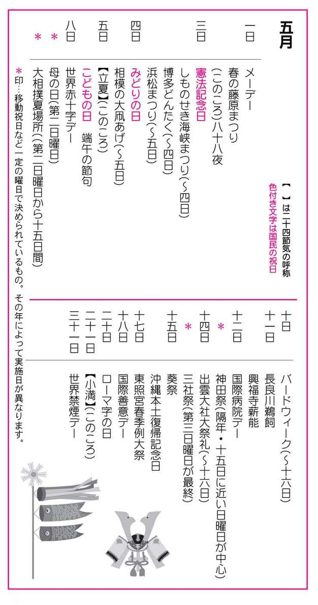
一日
●メーデー（May Day）
メーデーの起源は、アメリカの労働者が一八八六年（明治十九年）五月一日、八時間労働制要求貫徹のための統一デモを行ったのがはじまりとされる。日本では、一九二〇年（大正九年）にその第一回が東京の上野公園で労働団体の主催で行われた。それ以来、血のメーデーといわれるような種々の事件や争いを経て、現在に至っている。企業や官公庁などでは、労働組合の団体が主催する行事に、従業員や職員が参加できるように、休日としているところが多い。
●春の藤原まつり（はるのふじわらまつり）
岩手県西磐井郡平泉町、中尊寺・毛越寺。一日～五日。藤原祭は、藤原三代[＊①]の栄華を偲んで、一九四九年（昭和二十四年）から始められ、中尊寺・毛越寺及び町内を会場に、郷土芸能などが行われる。源義経と藤原秀衡の再会を再現した東下り行列や武者行列が見ものとされ、平泉の駅前では、弁慶の力餅運び大会がある。なお、「秋の藤原まつり」には、延年の舞や神事能などが行われる。
●八十八夜（はちじゅうはちや）
雑節の一つ。立春から八十八日目の日を指し、五月一日～三日ごろにあたる。遅霜もなくなり（八十八夜の別れ霜）、稲の種を蒔く季節に入る。また、茶摘みがはじまり、八十八夜に摘んだ茶の葉は極上とされている。また八十八は重ねると「米」の字になることから、農家ではこの日を尊んでいる。
三日
●憲法記念日（けんぽうきねんび）
国民の祝日。日本国憲法は、一九四六年（昭和二十一年）十一月三日に公布され、翌年五月三日に施行された。これを記念して制定された。日本国憲法は、主権在民・戦争放棄・基本的人権などを骨子とし、文化国家として発展することを宣言した平和憲法である点で他に類を見ない。
●しものせき海峡まつり（しものせきかいきょうまつり）
山口県下関市。三日～四日。一九八五年（昭和六十年）の源平八百年祭を機に、かつての「先帝祭」から名称変更し、規模を拡大したもの。先帝祭は、一一九一年（建久二年）後白河法皇が、壇ノ浦で入水した安徳天皇のためにその命日を期して法要を営み、これを「先帝会」と称したのがはじまりとされる。太夫・官女・稚児らが繰り出す呼びものの道中絵巻の「先帝祭」をはじめ、武者行列、源平船合戦などが行われる。
●博多どんたく（はかたどんたく）
福岡県福岡市、どんたく広場・本舞台（五ヶ所）・演舞台（三十ヶ所）。三日～四日。博多祇園山笠・放生会と並ぶ福岡三大祭りの一つ。どんたくのはじまりは、博多の商人が、筑前の殿様に松囃子を仕立てて年賀に参上したことによるとされている。その後、商人の間で親類・知人への無礼講の挨拶回りとして行われたものが、現在の市民のまつりとなった。思い思いの仮装でしゃもじを叩いて町を練り歩き、舞台や広場で、手踊り・俄・隠し芸などを披露する。四日の総おどりには、一般からの飛び入りも加わって踊り狂う。
●浜松まつり（はままつまつり）
静岡県浜松市、市内各地と中田島浜。三日～五日。期間中は毎日、中田島砂丘で凧揚げが行われる。市内六十余町の凧が、相手の凧の糸を切ろうとしのぎを削る。大凧には、三帖・四帖・八帖の大きさのものある。一九五〇年（昭和二十五年）に、この凧揚げを中心にして、全市を挙げての「浜松まつり」となり、屋台の引き回しや木遣り道中、民謡踊りなどで賑わう。
四日
●みどりの日（みどりのひ）
国民の祝日。五月三日から五日までを三連休とするために一九八六年（昭和六十一年）に「国民の休日」として設けられた。その後、二〇〇五年の祝日法改正により、二〇〇七年（平成十九年）から施行され、「みどりの日」と名称が改められた。
●相模の大凧あげ（さがみのおおたこあげ）
神奈川県相模原市・座間市。四日～五日。端午の節句を祝って、天保年間（一八三〇～一八四四）から行われている相模の伝統行事。座間の凧は九㍍四方、相模原の凧は十三㍍四方の大凧で、凧は毎年作り替えられ、重さは三百八十キロほどもあり、大勢の若者たちによって揚げられる。
五日
●立夏（りっか）
二十四節気の一つ。暦の上では夏に入る。太陽暦で五月五日ころ。これから立秋（八月八日ころ）の前日までの九十日間が旧暦の夏にあたる。新緑の季節で、新茶が香り、北国では桜が咲き始め、北海道では馬鈴薯やマメの種まきが始まる。南の九州では麦が穂を出す。
●こどもの日（こどものひ）
国民の祝日。こどもの日は、一九四八年（昭和二十三年）に「こどもの人格を重んじ、こどもの幸福をはかるとともに、母に感謝する」として、祝日法で五月五日に決められた。また、一九五一年（昭和二十六年）五月五日には、児童憲章が定められ「児童は、人として貴ばれる。児童は社会の一員として重んじられる。児童は、よい環境の中で育てられる。」と規定されている。こどもの日から一週間は、「児童福祉週間」で、全国の児童館や公民館などで、子供のためのいろいろな催しが実施される。
●端午の節句（たんごのせっく）
端午とは、「月の初め午の日」の意味なので毎月あるはずなのだが、端午といえば五月をさし、五月五日のことを「端午の節句」というようになった。五節句[＊②]の一つで、三月三日の「ひなまつり」が、「女の子の節句」であるのに対して、五月五日は「男の子の節句」とされるようになった。男の子のいる家では、鯉幟・兜（かぶと）・五月人形などを飾り、柏もちや粽（ちまき）を食べ、菖蒲湯に入る習慣がある。日本の端午の節句は、聖武天皇（七二四～七四九）の時代に始められたとされる。
八日
●世界赤十字デー（せかいせきじゅうじでー）
赤十字社の創始者アンリー・デュナンの誕生日一八二九年五月八日を記念する日。一九四八年（昭和二十三年）の赤十字社連盟理事会で決められた。デュナンが書いた「ソルフェリーノの思い出」がきっかけで、一八六三年に赤十字規約が生まれ、白地に赤十字のマークが作られた。一八六四年には、赤十字規約を各国間の条約とするジュネーブ条約が成立。その功績によって、アンリー・デュナンは、一九〇一年（明治三十四年）に、第一回のノーベル平和賞を受賞している。
九日
●母の日（ははのひ）
五月の第二日曜日。母の日は、一九〇七年アメリカのアンナ・ジャービスが、最愛の母を失った翌年、母を偲ぶ記念の会をシアトルで行ない、霊前にカーネーションを手向けたことがはじまりとされる。一九一四年（大正三年）に、ウイルソン大統領が、「母の日（Mother's Day）」として正式に制定し、その後、全世界へ広まった。
●大相撲夏場所（おおずもうなつばしょ）
大相撲六場所の一つで、五月の第二日曜日からの十五日間に渡って、東京両国の国技館で行われる。
十日
●バードウィーク一九四七年（昭和二十二年）
に制定された。一九四九年（昭和二十四年）までは、愛鳥の日（バードデー）として四月十日に行っていたが、一九五〇年（昭和二十五年）から五月十日からの一週間をバードウィーク（愛鳥週間）とした。害虫を捕えて農作物や動物の生育を助け、人の心を慰めてくれる野鳥[＊③]や小鳥を愛し、保護するのがねらい。
十一日
●長良川鵜飼（ながらがわうかい）
岐阜県岐阜市、長良川。十一日～十月十五日。鵜飼いは、篝火（かがりび）で鮎をおびき寄せ、鵜匠が飼い馴らした鵜を使って鮎を捕る古式漁法で、十一日が鵜飼い開き。晩春から中秋へかけての日本の風物詩となっている。中秋の十五夜と豪雨で河水の濁る夜以外は毎夜行われる。
◎各地の主な鵜飼い
・小瀬鵜飼い...岐阜県関市小瀬（長良川畔）。十月十五日まで。千二百年の伝統を誇る。奥長良川県立公園内にある。
・嵐山鵜飼い...京都府京都市西京区大堰川。八月末日まで。貸し切り船や乗合船もある。
・宇治川鵜飼い...京都府宇治市、宇治川喜撰橋乗船場。六月中旬～八月末日まで。観覧船もある。
・三次の鵜飼い...広島県三次市、西城川、馬洗川。六月十五日～九月十五日。永禄年間からの伝統行事。
・錦帯橋鵜飼い...山口県岩国市、錦川錦帯橋下。八月末まで。遊覧船もある。
・三隅川鵜飼い...大分県日田市。五月下旬～十月中旬まで。屋形船の川魚料理、花火大会などもある。
●興福寺薪能（こうふくじたきぎのう）
奈良県奈良市、興福寺。十一～十二日。薪能とは、神事能の一つ。興福寺の修二会の際、四座の太夫によって演じられた能楽[＊④]で、幕末に一時中断したが復興され、現在は五月の行事として定着。金春・金剛・観世・宝生の四流の家元が、能狂言五番を競演する。なお、薪能は、諸社寺で夜間に薪を焚いて演じられる野外能のこともさす。
◎各地の主な薪能
・春日大社...奈良県奈良市。興福寺と同日。両日ともに十一時～十六時を春日大社、十六時以降を興福寺と分けている。
・中尊寺...岩手県西磐井郡平泉町。八月十四日。
・日枝神社...東京都千代田区。秋ころ。「東京薪能」と称されている。
・川崎大師...神奈川県川崎市。五月下旬。初詣で有名な寺院。
・鎌倉宮...神奈川県鎌倉市。「鎌倉薪能」と称されている。秋ころ。
・寒川神社...神奈川県高座郡寒川町。八月十五日。
・大山火祭...神奈川県伊勢原市、阿夫利神社。十月。
・平安神宮...京都市左京区。六月一日・二日。観世・金春・大蔵・金剛の四流が競演。
・生国魂神社...大阪市天王寺区。八月十一日・十二日。「生玉さん」で親しまれている。
●国際病院デー（こくさいびょういんでー）
近代看護の基礎を築いたフローレンス・ナイチンゲール（一八二〇年五月十二日生まれ）の功績をたたえ、国際看護師協会が制定した。「国際看護婦デー」から「国際病院デー」と名称変更している。
◎看護の日
国際病院デーに合わせて、厚生労働省が一九九一年（平成三年）に制定した。
十三日
●神田祭（かんだまつり）
東京都千代田区外神田、神田神社（通称神田明神）。祭日は、隔年の五月十五日に近い日曜日を中心とする五日間。神田祭は神田神社の例祭で、山王祭・三社祭とともに東京三大祭りの一つ。西暦奇数年の例祭は本祭、偶数年は陰祭という。本祭は山王祭と交互に行われる。本祭は、土曜日に神幸祭と江戸神社の神輿巡行、日曜日に町内神輿七十基の連合渡御がある。中でも江戸神社の神輿の渡御は、威勢の良さ・行列の華やかさ・神輿の立派さで、神田祭最大の呼びものとなっている。
十四日
●出雲大社大祭礼（いずもたいしゃだいさいれい）
島根県簸川郡大社町、出雲大社。十四日～十六日。出雲大社は伊勢神宮と並ぶ日本屈指の神社で、祭神は大国主命[＊⑥]。それほどの大社なので、祭事も多く年間七十有余にもなるという。その中で、最大規模なのがこの大祭礼。十四日には勅使参向と流鏑馬、十五日は神輿の渡御と田植舞・尻振舞、十六日には獅子舞と続く。三日間を通じて奉納されるのが出雲神代神楽である。
●三社祭（さんじゃまつり）
東京都台東区浅草、浅草神社。第三日曜日を最終とする三日間。三社[＊⑦]祭は浅草神社の例祭で、東京の下町・浅草の庶民の祭りとして有名。初日の金曜日は宵宮で、びんざさら舞[＊⑧]や獅子舞、鳶の木遣りや芸者衆の手古舞などが奉納される。二日は、約百基からなる町御輿の連合渡御。最終日の日曜日が三社祭最大の見もので、重さ一トン以上もある三基の神輿の宮出しと宮入りがある。神輿は、三手に分かれて浅草の町を練り回るが一万人もの担ぎ手が先を争い、勇壮な町内渡しとなっている。
十五日
●葵祭（あおいまつり）
京都府京都市北区、上賀茂神社（賀茂別雷神社）。京都府京都市左京区、下鴨神社（賀茂御祖神社）。葵祭[＊⑤]は、上賀茂・下鴨両神社の例祭で「賀茂祭」というのが本来の名称。「祇園祭」「時代祭」とともに京都三大祭りの一つ。京都の祭事の中で、最も優雅で古趣に富むとして知られる。葵祭は、上賀茂・下鴨の両神社へ、御所から勅使（皇室からの使い）が、平安の王朝絵巻さながらの装束で参向する行列祭り。行列は、約一キロにも及び、京都御所から下鴨、上賀茂へと巡行する。
●沖縄本土復帰記念日（おきなわほんどふっききねんび）
一九七二年（昭和四十七年）五月十五日に、沖縄がアメリカ合衆国から日本に返還され、沖縄県が発足した。それを記念して制定された。
十七日
●東照宮春季例大祭（とうしょうぐうしゅんきれいたいさい）
栃木県日光市、東照宮。十七日～十八日。東照宮は、徳川家康の遺言により久能山より家康の神霊を移した。この時行われた渡御の祭儀が例祭の原型とされる。杉の巨木が並ぶ表参道を徳川家康・豊臣秀吉・源頼朝の三公を祀った三基の神輿を中心に鉄砲隊や槍持ち、鎧武者群など約一キロ、総勢千二百名もの通称「百物揃千人武者行列」が見もの。なお、十月十七日に「秋季例大祭」が行われるが、神輿は一基で、規模も春季例大祭の約半分となる。
十八日
●国際親善デー（こくさいしんぜんでー）
一八九九年（明治三十二年）五月十八日、オランダのハーグで、日本を含む二十六ヶ国による第一回世界平和会議が開かれた。その会議で国際紛争の平和的処理条約が結ばれたことを記念して、一九二二年（大正十一年）に制定されたものである。日本では、一九三一年（昭和六年）から行っている。
二十日
●ローマ字の日（ろーまじのひ）一九二二年（大正十一年）
五月二十日に、日本ローマ字会が発足したことにちなんで、一九五五年（昭和三十年）から実施されている。ローマ字[＊⑨]は、一九五四年（昭和二十九年）に内閣告示で、つづり方が決められ、一九六一年（昭和三十六年）に必須科目となり、小学四年の国語教科書から取り入れられた。
二十一日
●小満（しょうまん）
二十四節気の一つ。立夏から十五日後。太陽暦で五月二十一日ころ。小満とは陽気が盛んになり、万物が一応満足する季節という意味。暑くもなく寒くもなく、過ごしやすい。草木が実をつけ始め、梅の実が見られるのも小満を過ぎてから。小満の節の後半は、麦の取り入れ時期にあたるため、麦秋（ばくしゅう）と呼ばれる。
三十一日
●世界禁煙デー（せかいきんえんでー）
「たばこを吸わないこと」を習慣化させることを目的に、一九八九年（平成元年）に世界保健機関ＷＨ０総会で制定された。一九九二年（平成四年）から、世界禁煙デーを初日とする一週間（五月三十一日～六月六日）を禁煙週間としている。
初代藤原清衡、二代目基衡、三代目秀衡の三代をいう。天台宗中尊寺は、慈営大師が開基で初代藤原清衡によって創建され、毛越寺は二代目基衡、無量光院は三代目秀衡が、それぞれに創立した。奥州藤原の栄華を誇る寺院であったが、毛越寺と無量光院は、寺跡を残すのみで、中尊寺だけが辛うじて残り、金色堂（光堂）をはじめ当時の遺構・遺品を見ることができる。
室町時代に中国から伝わり、江戸幕府が式日（しきじつ）として定めたものが一般に普及していったもので、次の五つがある。
●七草の節句...一月七日。七種の節句ともいう。中国では人日（じんじつ）。正月の一日から六日まで獣を占い、七日目に人を占ったことから。
●桃の節句...三月三日。雛節句・重三の節句ともいう。中国では上巳（じょうし）。
●端午の節句...五月五日。菖蒲の節句ともいう。中国でも端午（たんご）という。
●七夕まつり...七月七日。星まつりともいう。中国では七夕（しちせき）。
●菊の節句...九月九日。重陽・重九ともいう。中国でも重陽（ちょうよう）。
日本の野鳥は全部で四百二十余種といわれ、冬鳥・夏鳥・旅鳥・漂鳥・留鳥・迷鳥の六種に分類される。
猿能楽のこと。観阿弥・世阿弥が大成させた舞と謡と囃子の三要素から成る歌舞劇のことで、江戸時代は幕府の式楽として栄え、明治以降は能楽ともいう。広義には狂言も含む。能楽五流は観世・宝生・金春・金剛・喜多の五派をいう。江戸時代には四座（観世・宝生・金春・金剛）一流（喜多）といっていた。
名称の由来は、祭事の挿頭花に葵を用い、家々の軒にも葵をかけるしきたりがあったためで、通称となった。祭神の賀茂別雷神が生まれた御形山に二葉の葵が生じたので、これを用いたことにはじまると言い伝えられている。葵は雷と地震の厄除けになるとされ、今も信仰があつい。
日本の神話に出てくる創造神で、日本の全神様の代表とされている。十一月になると全国の神様が出雲に集まるので、そこ以外はどこも神無月（かんなづき）というが、出雲だけは神有月（かみありづき）という。
浅草寺と浅草神社の関係からいうと、推古天皇の時代に、隅田川で、桧熊浜成・武成の兄弟が観音像を網ですくい上げ、土師真中知と共に安置した。これが現在の浅草寺で、のちにこの三人は、浅草観音の守護神として祀られ、「三社権現」が建立された。これが三社の由来である。三社権現は、明治時代に「三社明神」、さらに「浅草神社」と改称され、浅草寺の総鎮守となっている。
舞田楽舞の一つで、びんざさら三人・大太鼓一人・摺太鼓三人・笛一人から成り、これに獅子舞も付いている。中世の田楽踊りの名残をとどめる貴重な郷土芸能として、東京都の無形民俗文化財に指定されている。
ローマ字の基本となるのは、アルファベット二十六字。日本語のつづり方として、ヘボン式・訓令式などがある。例えば、タ行の「チ」や「ツ」は、ヘボン式では、「chi」「tsu」のように三字に書き、発音に近い表記となり、訓令式は「ti」「tu」と二字に書く。
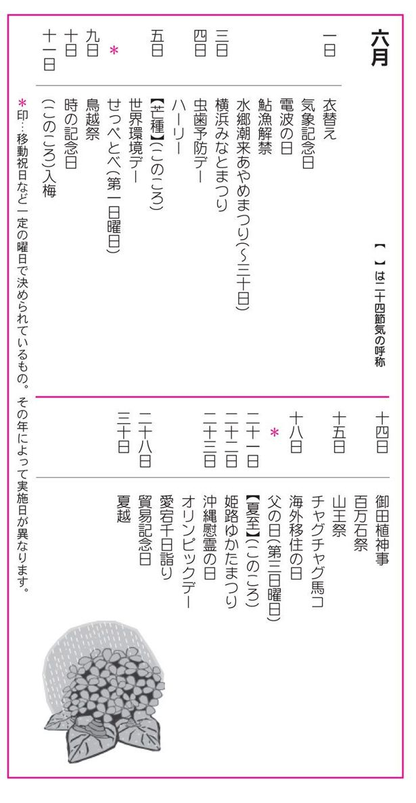
一日
●衣替え（ころもがえ）
季節の変化に合わせて衣服を着替えること。官庁・学校・企業などで制服を着るところでは、六月一日と十月一日を「衣替えの日」として、六月一日は、冬物から夏物に着替え、十月一日はその逆となる。衣替えは、平安時代に宮中で始まった行事とされる。
●気象記念日（きしょうきねんび）
一八七五年（明治八年）六月一日、東京赤坂に、現在の気象庁[＊①]の前身である東京気象台が設立されたのを記念して、一九四二年（昭和十七年）に制定された。
●電波の日（でんぱのひ）
一九五〇年（昭和二十五年）六月一日に、従来の無線電信法が廃止され、電波法・放送法・電波管理委員会設置法の電波三法施行を記念して制定された。この法律の制定により、電波が一般に開放され、民間放送が全国各地に開局、放送事業が著しく発展した。
●鮎漁解禁（あゆりょうかいきん）
六月一日は、鮎[＊②]釣りの解禁日とされているが、全国一率ではなく、地域によって異なる。解禁の日取りは漁業協会の総会で決められ、漁業管理委員会がその報告を受けて解禁する。同じ川でも、上流と下流では日が異なる場合もある。
●水郷潮来あやめまつり（すいごういたこあやめまつり）
茨城県潮来市。一日～三十日。六月はあやめの季節。かすり姿の娘船頭があやつるサッパという和舟に乗って、十二橋めぐりをしながら、紫や白のあやめを楽しむ初夏の風物詩。潮来市は大化改新のころから水陸交通の要で、鹿島、香取神宮への順路にもあたった。
三日
●横浜みなとまつり（よこはまみなとまつり）
神奈川県横浜市。六月三日～七月二十日。一八五三年（嘉永六年）六月三日、東インド艦隊司令長官ペリーが浦賀に来航。横浜市では、これを記念して、毎年六月三日を中心に「横浜みなとまつり」を行っている。期間は国際花火大会の七月二十日まで。国際色豊かな祭りで、横浜在住の外国人による国際仮装行列やバトントワラー・民謡踊り・中華街の獅子踊りなどのパレードで賑わう。
四日
●虫歯予防デー（むしばよぼうでー）
六と四で「ムシ」と読む語呂合わせから、この日を虫歯予防デーと定めたもの。一九二八年（昭和三年）六月四日、日本歯科医師会が主催したのがはじまり。一九五八年（昭和三十三年）からは、六月四日からの一週間を「歯の衛生週間」としている。
●ハーリー
沖縄県で行われる豊漁祈願の競漕祭。旧暦五月四日の糸満市糸満港の「糸満ハーレー」が最も有名。ハーリーとは、木造小型のくり舟の中国名「爬竜（はりゅう）」からきているが、地方によってはハーレーと呼ぶ。また、現地語のユッカヌーヒー（四日の日）ともいう。舟には十数名が乗り、左右二列の漕ぎ手が、銅鑼（どら）の音に合わせて競漕する。
五日
●芒種（ぼうしゅ）
二十四節気の一つ。小満と夏至の間にあたる。旧暦の五月前半をいい、太陽暦で六月五日ころ。太陽の黄経七十五度の時。芒種とは、稲とか麦などの芒（のぎ）のある穀物の種子をさすが、麦を刈り、稲を植える時節という意味になる。芒は禾とも書く。入梅を控え、この頃から田植えが始まるが、農家はこれから農繁期に入る。
●世界環境デー（せかいかんきょうでー）
一九七二年（昭和四十七年）六月五日から十六日まで、国連人間環境会議がスウェーデンのストックホルムで開催され、人間環境宣言[＊③]を採択した。同時に国連環境管理計画（ＵＮＥＰ）が発足したのを記念した日である。
◎環境週間・海洋汚染防止推進週間
世界環境デーに合わせ、日本では、この日から環境週間、海洋汚染防止推進週間が始まり、環境美化運動などの行事が全国的に行われる。
六日
●せっぺとべ
鹿児島県日置郡日吉町、八幡神社。第一日曜日。せっぺとべ[＊④]は、御田植神事で、そのひょうきんさから「ばか踊り」と親しまれている。儀式の後、囃子に合わせて棒踊、笹踊が奉納され、神輿が神田に神幸する。神田では、白装束姿の若者たちが、注連縄（しめなわ）を張った竹棒を中心に輪を描いて並び、「せっぺとべ・せっぺとべ・白歯の内に・白歯とるれば跳びゃならん」と叫びながら、泥まみれになって踊る。
九日
●鳥越祭（とりごえまつり）
東京都台東区、鳥越神社。九日とその前後の日曜日。鳥越神社の大祭は九日であるが、名物の「お化け神輿」は交通事情で、九日前後の日曜日となっている。神輿は四トン、担い手の若者が二百人という大がかりなもの。なお、三十日には、悪病払いの茅の輪くぐりがあり、翌七月一日には、浅草柳橋から六十隻の船が品川沖に出て、氏名、年令を書いた紙人形を流す「形代流し」[＊⑤]の行事が行われる。
十日
●時の記念日（ときのきねんび）
一九二〇年（大正九年）に「時間を守り、欧米並みに生活の改善・合理化を図ろう」と東京天文台と生活改善同盟会が制定した記念日。十日が選ばれたのは、六七一年（天智天皇の十年）四月二十五日に、初めて漏刻[＊⑥]が設置されたという日本書記の史実に基づくもので、この日を太陽暦に直すと六月十日になることから決められた。
十一日
●入梅（にゅうばい）
雑節の一つ。梅雨（つゆ）に入ることを入梅という。芒種から五日目の六月十一日ごろと決められているが、年や地方によって入梅の時期は異なる。梅雨とは、春から夏に変わる時に起こる雨期のことで、日本特有の現象といわれている。この時期に梅の実が熟すので、「梅雨」という名が付いている。旧暦五月に降ることから「五月雨（さみだれ）」ともいう。
十四日
●御田植神事（おたうえしんじ）
大阪府大阪市住吉区、住吉神社。神話時代からの伝統を今に伝える最も古い田植祭で、俗に御田（おんた）ともいう。神功皇后が、御供田を植えさせたのが行事のはじまりだとされる。明治以降は、花街の芸妓たちが植女、稚児などに扮して儀式に沿って行う。また、御田の中央に設置の舞台では、風流傘を立て、八乙女が田舞を舞う。次いで風流武者の棒打式住吉踊、植女踊などが奉納される。
●百万石祭（ひゃくまんごくまつり）
石川県金沢市、尾山神社。十四日～十五日。十四日は加賀百万石の初代藩主前田利家が金沢城に入城した日で、これにちなむ祭とされる。十三日は前夜祭。十四日に呼び物の百万石行列と、加賀鳶行列がくり出す。利家の入城模様を再現する百万石行列は、長さは四キロに及ぶ時代絵巻さながらの光景。鳶行列には、金沢五十二団の鳶が参加し、加賀獅子舞なども加わる。
十五日
●山王祭（さんのうまつり）
東京都千代田区永田町、日枝神社。六月十五日前後の四日間。江戸三大祭りの一つ。西暦偶数年に神田祭と隔年で行われている。神田祭が庶民的であるのに対して、山王祭のほうは徳川産土神の祭礼[＊⑦]として格式高いもので、二基の鳳輦（ほうれん）行列が皇居を回り、町を巡幸する。茅の輪神事の由緒ある行事も行われる。例祭は十五日。他の行事の日程は年によって異なる。
●チャグチャグ馬コ
岩手県岩手郡滝沢村及び盛岡市周辺。馬の守護神として知られる蒼前神社の祭りで、馬の無病息災を祈願するもの。馬を金銀紅紫の装束で飾り、はんてん姿の少年や振袖姿の少女を背に乗せて、蒼前神社から盛岡市の八幡宮まで約十五キロの道を練り歩く。飾りの鈴の鳴る音から、「チャグチャグ馬コ」の名が生じた。
十八日
●海外移住の日（かいがいいじゅうのひ）
一九〇八年（明治四十一年）六月十八日、笠戸丸で七百八十一人の移住民がブラジルのサントスに着いた日にちなんで制定された。海外移住に関する業務は、一九六三年（昭和三十八年）に「海外移住事業団法」に基づいて設立された海外移住事業団が行っている。六月十八日を含む十日間は「海外移住旬間」とされ、海外移住に関するさまざまな催しなどを行っている。
二十日
●父の日（ちちのひ）
六月の第三日曜日は「父の日」である。一九一〇年、ワシントン州に住むジョン・ブルース・ドッド夫人が男女同権の見地から、母の日に対して、父に感謝する「父の日（Father's Day）」を持とうと行事を行ったのが始めといわれる。日本では、母の日から少し遅れて、一九五〇年（昭和二十五年）ごろから徐々に普及してきた。
二十一日
●夏至（げし）
二十四節気の一つ。太陽の黄経が九〇度の北回帰線の真上に来た時。太陽が最も北に片寄るため、北半球では日照時間（昼）が最も長くなる。そして北極に近い北寒帯地方では、太陽が地平線下に没することがなく、白夜が続く。これと反対に南極に近い南寒帯地方では、太陽が地平線上に出ることがなく、長夜と呼ばれる現象になる。この日、ヨーロッパでは農民が夏至祭りを行う。
二十二日
●姫路ゆかたまつり（ひめじゆかたまつり）
兵庫県姫路市、長壁神社。二十二日～二十四日。姫路城の城内で行われる長壁神社の祭り。ゆかたを着た稚児たちの行列が、姫路城から長壁神社までの道のりに繰り歩く。稚児行列のほかに、郷土芸能やあんどんコンクール、ゆかたショー、歌と踊りのイベントなどが催される。夜になると、走馬灯を手にしたゆかた姿の人たちで賑わう。
二十三日
●沖縄慰霊の日（おきなわいれいのひ）
一九四五年（昭和二十年）太平洋戦争で激戦をきわめた沖縄戦の終わった日を記念するものである。沖縄県では、この日を「慰霊の日」と決め、全島の諸官庁、学校、銀行、会社などをすべて休みにして、戦没者の霊を慰め、平和を祈る。
●オリンピックデー（Olympic Day）
一八九四年六月二十三日、フランスのクーベルタン男爵の提唱により、オリンピック復興国際会議がパリで開催され、国際オリンピック委員会（ＩＯＣ = International Olympic Committee）が組織された。この日を記念してオリンピックデーとしている。「オリンピックは勝つことが目的ではなく、参加することに意義がある」を理想として、四年ごとに開催されている。
●愛宕千日詣り（あたごせんにちまいり）
東京都港区、愛宕神社。二十三日～二十四日。前夜祭が二十三日に行われ、大祭は二十四日である。この日に参詣すると千日詣でたのと同じご利益があるとされる。また、境内に作られた茅（ち）の輪をくぐると邪気を追い払うと伝えられ、多くの人が集まる。災難よけのお札や千成鬼燈を受けるために全国から参拝者が集まる。
二十八日
●貿易記念日（ぼうえききねんび）
徳川幕府が、三百余年にわたる鎖国政策を解き、アメリカ、イギリス、フランス、ロシア、オランダの五ヶ国との友好通商条約に基づいて、初めて横浜、長崎、函館の三港で自由貿易の開始を布告したのは、一八五九年（安政六年）五月二十八日であった。太陽暦の六月二十八日にあたるため、この日を貿易記念日するもので、一九六三年（昭和三十八年）六月から実施している。
三十日
●夏越（なごし）
一年前半の最終日にあたる六月の晦日に行う大祓[＊⑧]のこと。神社での夏越し神事としては、「茅（ち）の輪」くぐりが一般的で、茅を束ねて作った輪を社前でくぐると、災厄を免れると伝えられている。新暦の七月晦日に行う神社も多い。疫病の多い夏を前に、病魔を追い払うまじないや、お盆を控え、心身を清めておこうという意味があるとされている。
気象庁は、気象・地象・水象・津波・高潮及び波浪について予報や警報を発する。また、気象・地震・火山・海洋・地磁気などを観測し、これを公表するとともに、気象庁以外のものが行う気象観測についても、技術的指導を行っている。
鮎は、古来より日本人が好む淡水魚の代表で、形が清麗、味に独特の香気があるため「香魚」の名称がある。味季は土用入りの七月二十日ころとされる。
人間環境宣言は、地球規模の環境破壊に警鐘を鳴らすために採択された。人間居住の向上、人種差別の撤廃、海洋環境保全、野生生物の生態の保護、資源の管理と有効利用、有害物質の規制、環境技術の協力等、地球規模の環境保護を推進する主旨となっている。
「せっぺとべ」とは、精一杯飛べ、跳ね回れの意味で、稲苗の付きを良くするまじない。
人形（ひとがた）に切った形代（かたしろ：身代わりにするもの）に人間の罪や汚れを託し、海や川に流して無病息災を祈願する神事。この鳥越神社では、毎年、夏越の大祓（三十日参照）の際に、氏子から納められた形代を流す。
漏刻とは、水槽に水を盛り、その水槽に小さな孔をあけて、漏れた水によって時を計る「水時計」のこと。機械による時計ができるまでには、日時計も用いられた。
日枝神社は、江戸城の守護神として幕府の崇敬があり、寛永年間にその祭礼は江戸の大祭礼と定められた。のちに神田祭とともに天下祭と呼ばれ、これに根津権現の祭りを加えて御用祭とも称された。
おおはらえともいう。半年の間に犯した罪やけがれを除き去るために神社で行う〝おはらい〟のこと。一年を半分に分け、六月三十日と十二月三十一日に大祓を行うが、六月の大祓を「夏越」または「水無月祓い」、十二月の大祓を「年越しの祓」と呼ぶ。
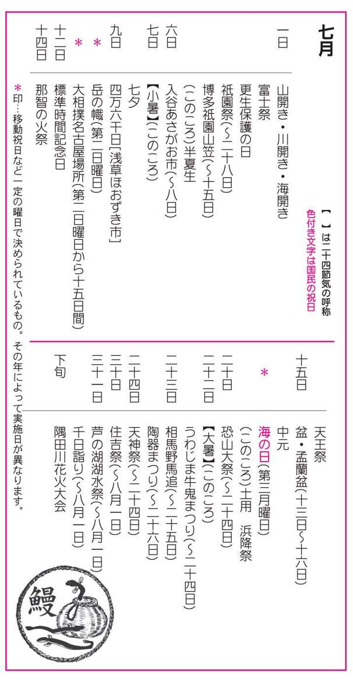
一日
●山開き・川開き・海開き（やまびらき・かわびらき・うみびらき）
山開き[＊①]は登山シーズンの開始、川開き[＊②]は夏の行楽期のはじまり、海開きは海水浴の解禁日をさすことが多い。ほかにプール開きがあるが、日程はそれぞれ地方によって異なる。「○○開き」いう言い方は「山開き」が最初とされている。
●富士祭（ふじまつり）
山梨県富士吉田市、浅間神社。七月一日は、浅間神社の山開きの日。登山口の注連縄（しめなわ）を、天狗姿の禰宜（ねぎ）が切って登山者の先頭に立ち、白衣・金剛杖姿の登山者が六根清浄を唱えながらそれに続く。浅間神社は、富士山を霊山、その神霊の木花咲耶姫命を祭神として祀る神社で、江戸後期に冨士講[＊③]で栄えた。現在も、富士講で富士祭が行われている。
◎各地の主な冨士祭
・富士神社...文京区本駒込。宵宮の六月三十日に、駒込富士講の人たちが、神社の富士塚に花万燈を立てて山開きとする。神社からは麦藁蛇（むぎわらへび）の護符が授与され、門前の駄菓子屋では、延宝年間から続くという名物の麦こがしと麦落雁が売られる。
・浅間神社...台東区浅草。神社から麦藁蛇の護符が授与され、神社周辺では、東京でも屈指の巨大植木市が立つ。
・小野照崎神社...台東区下谷。社殿の横に一八二八年（文政十一年）築造の富士塚があり、境内に仮設の浅間神社の前で山開きの式典が行われる。
●更生保護の日（こうせいほごのひ）
一九四九年（昭和二十四年）七月一日に犯罪者予防更正法が施行されたのを記念して法務省が「更正保護の日」と定め、一九五一年（昭和四十年）から行われている。
◎社会を明るくする運動
（一日～三十一日）「更正保護の日」を初日とする一ヶ月間を、犯罪のない明るい社会を築く全国的な運動とすることが決められた。
●祇園祭（ぎおんまつり）
京都府京都市東山区、八坂神社。一日～二十八日。祇園祭は、葵祭、時代祭と合わせて京都三大祭りとされ、東京の神田祭、大阪の天神祭と並ぶ日本三大祭りの一つ。平安時代の祇園御霊会[＊④]がそのはじまりとされる。祇園祭は、十六日の宵山と十七日の山鉾巡行、二十四日の花傘巡行などが有名である。ハイライトの山鉾巡行は、町内の保存会がそれぞれ所有している三十二基の山鉾が組み建てられて一堂に会し、四条通り・河原町通り・御池通りを曳き歩くもので、四つ角で向きを変える「辻回し」が見せ場。山鉾は動く芸術品と形容されるように、絢爛豪華な装飾が人々を魅了する。日本各地に山鉾祭りが存在するが、その手本となっているのが、この祇園山鉾である。
◎各地の主な祇園祭
・田島祇園祭...福島県南会津郡田島町、田出宇賀神社、熊野神社。十九～二十一日。二十日が本祭。二十一日太々神楽など。
・益子祇園祭...栃木県芳賀郡益子町、八坂神社。二十三日～二十五日。一年にちなむ三升六合五勺の神酒を、町代表十人で飲むお神酒頂載が有名。
・成田祇園会...千葉県成田市、成田山新勝寺。七日～九日。奥の院大日如来の祭り。神輿が三日間市内を巡行。山車や屋台の総引きは九日。
・佐原祇園祭...千葉県佐原市、八坂神社。十日～十二日。巡行する二十五台の山車の上で、佐原囃子が奏される。
・小諸祇園...長野県小諸市、健速神社。十三日に近い土曜日・日曜日。四百キロ近い大神輿と各町内から神輿五十台余が出る。小諸ドカンショの民謡流しも練る。
・豊橋祇園祭...愛知県豊橋市、吉田神社。豊橋三大祭りの一つ。頼朝行列とこの地方特有の手筒花火が上げられる。
・松阪祇園祭...三重県松阪市、八雲神社、松阪神社、御厨神社。十三日～十九日間の土曜日・日曜日。市の鎮守である三神社の祭り。各町の山車が出る松阪最大の祭り。
・円隆寺祇園祭...富山県富山市、円隆寺。十四日、十五日。江戸時代に規制され、密かに受け継がれてきた「さんさい踊り」が行われる。
・弥栄神社祇園祭...島根県鹿足郡津和野町、弥栄神社。二十日、二十七日。「津和野の鷺舞」の別名で有名。京都祇園祭の鷺舞を一五四二年（天文十一年）に移したもの。
・山口祇園祭...山口県山口市、八坂神社。二十日～二十七日。鷺舞、浦安舞の奉納の後、八角、六角、四角の珍しい神輿の巡行。
・小童の祇園祭...広島県三次市、須佐神社。第三日曜日から三日間。大神輿を中心に、獅子舞、囃子、屋台など。
・小倉太鼓祇園...福岡県北九州市小倉区、八坂神社。十五日～十七日。小倉祇園太鼓保存会主催による競演会は、映画「無法松の一生」で有名になった。
・戸畑祇園祭...福岡県北九州市戸畑区、八幡神社。第四土曜日の前後三日間。戸畑祇園祭は八幡神社、菅原神社、中原八幡宮の祭りの総称。四台の幡大山笠と、四十数台の子供山笠が囃子とともに練り歩く。
・中津祇園...大分県中津市、中津神社、闇無浜神社。下旬の土曜日、日曜日を含む三日間。山車の上で、人形浄瑠璃の北原人形芝居が踊り手と競演する。
・日田祇園祭...大分県日田市、八坂神社。二十日過ぎの土曜日、日曜日。十五㍍の高い大型の山笠が見もの。
・種子島祇園祭...鹿児島県種子島、八坂神社。二十五日。神輿が、海泊大野山神社へ神幸の際、途中で中女川を渡御。子供たちの敲く太鼓が低調になると、太鼓山を川中へ落とすのが見もの。
●博多祇園山笠（はかたぎおんやまかさ）
福岡市博多区、櫛田神社。一日～十五日。行事は初日のお汐井取りで幕を開ける。山笠には、飾り笠と追い山笠の二種があり、ともに国の無形文化財に指定されている。飾り笠は各町の辻々に、人形師たちが腕をふるった人形を飾り、追い山笠は、最終日の払暁、太鼓を合図に、山笠が順に神社の清道を巡り、所定の場所でスピードを競う勇壮なもの。
●半夏生（はんげしょう）
雑節の一つ。夏至から十一日目にあたるこの日から、小暑前日までの五日間を半夏生という。「半夏」は、カラスビシャクという毒草のことで、「半夏生」とは、この毒草が生えるころという意味。梅雨が明け、田植えも終わりなるが、よく大雨になるので半夏雨とも呼ばれる。
六日
●入谷あさがお市（いりやあさがおいち）
東京都台東区下谷、入谷鬼子母神堂境内。六日～八日。「恐れ入谷の鬼子母神」で有名であるが、本当の名前は真源寺。この市は、寺の主催ではなく、境内を植木屋に貸しているだけ。朝顔の花は早朝に開くので、六時ごろが人出のピーク。明治初期に始まり明治中期に最も盛んとなった。一時廃れたが、地元の入谷朝顔同好会と観光連盟によって、一九五〇年（昭和二十五年）に再開された。今では、東京の夏の風物詩として人気が高い。
七日
●小暑（しょうしょ）
二十四節気の一つ。夏至の十五日後。太陽暦で七月七日ころ。太陽の黄経百五度の時。そろそろ梅雨明けを迎え、本格的な暑さに向かうが、ところによっては梅雨明けが、七月末になる。また、年によっては長梅雨のうっとうしい季節ともなる。小暑のころに七夕がある。
●七夕（たなばた）
七夕は、旧暦の七月七日の行事であったが、新暦の七月七日か一月遅れの八月七日に行われる。笹竹に願い事や歌を書いた五色の短冊を結び、願いごとの成就を祈る。本来は、身に付いた穢れを笹竹に托して水に流す契（ちぎり）の祭儀である。七夕祭の行事は、日本古来の麦の収穫祭である祖霊祭[＊⑤]と、中国伝来の星祭り[＊⑥]と乞巧奠[＊⑦]が合わさったものとされている。奈良時代に宮廷や貴族の間で拡がり、次第に民間に普及していった。
◎各地の七月の七夕祭
・北野天満宮七夕まつり...京都市上京区北野。松風硯・角盥（かくたらい）・水差しなどを神前に供える。文芸上達の祭りとされ、子どもたちの書画が飾られる。御手洗祭（みたらいさい）ともいう。
・清水七夕まつり...静岡県静岡市。四日～七日。千軒ほどの加盟商店が七夕の飾り付けを行い、コンクールで競い合う。
・平塚七夕まつり...神奈川県平塚市。五日～九日。ミス七夕のコンテストやパレード、七夕飾りのコンクールや演芸大会など、湘南地方の夏の一大イベント。
・高岡七夕まつり...富山県高岡市。六日～七日。その年生まれの子供のいる家では、高い笹竹に短冊や絵万燈、ほおずき提灯（ちょうちん）を吊し、親戚知人を招いて祝宴を開く。
・金刀比羅宮...香川県仲多度郡琴平町。九日。鹿皮の鞠を蹴り上げる蹴鞠の行事がある。
九日
●四万六干日（しまんろくせんにち）
観音菩薩の縁日の一つで、七月九日に参詣すると、四万六千日参詣したのと同じ功徳が認められるという。観音菩薩が祀られている全国の寺院では、雷除けのお守りを授けている。「浅草ほおずき市」で知られる浅草寺の縁日が有名。
◎各地の主な四万六干日
・浅草寺観音...九日～十日。東京都台東区浅草。江戸時代は、雷除けの赤玉蜀黍（あかとうもろこし）を売っていたが、現在は酸漿市（ほおずきいち）が立つようになった。この酸漿は雷よけとして買われる。
・護国寺観音...九日～十日。東京都文京区大塚。徳川歴代将軍の崇敬を受けた名刹。雷除けのお札を授与。
・弘明寺観音...九日～十日。神奈川県横浜市南区。坂東第十四番の札所。国宝の十一面観音御開帳のほかに、寺宝や生け花の展示。
・長谷観音...九日。神奈川県鎌倉市、海光山慈照院。坂東三十三カ所の第四番札所。
・笠森観音...九日。千葉県長生郡長南町、大悲山楠光院笠森寺。坂東第三十一番札所。
・清水観音...九日。千葉県夷隅郡長者町、清水寺。
十一日
●岳の幟（たけののぼり）
長野県上田市、別所温泉。第二日曜日。岳の幟は、五百年近くも続く「雨乞いの神事」で、奇祭としても知られる。氏子男子が男神岳へ登り、九頭龍神社に祈念して、青竹の先から五色の反物を垂らし、数十本が並んで下るもので、行列の前には、三頭の獅子と乙女たちのささら踊りの舞いが奉納される。
●大相撲名古屋場所（おおずもうなごやばしょ）
大相撲六場所の一つで、七月の第二日曜日からの十五日間に渡って愛知県体育館で行われる。
十二日
●標準時間記念日（ひょうじゅんじかんきねんび）
一八八六年（明治十九年）七月十二日に、日本全国の時間を統一したことを記念する日。太陽が真南に位置する時を正午とすると、北海道の東端と九州の西端では、一時間以上もずれる。この時差をなくすために、兵庫県明石市を通る東経百三十五度の時間を「日本標準時」と定めた。これによって、日出・日没の時間に差はあっても、日常生活には支障がなくなった。この東経百三十五度の線は子午線（しごせん）ともいう。
十四日
●那智の火祭（なちのひまつり）
和歌山県東牟婁郡那智勝浦町、熊野那智大社。十三日～十四日。十三日は宵宮。日の丸の扇を飾った独特の扇神興が登場することから「扇祭」ともいう。扇神輿は十二基あり、那智大社から飛滝神社へ渡御、途中の伏拝で扇立ての神事。続いて石段を進む扇御輿を大松明（おおたいまつ）で迎え清める荘厳な神事があるが、「那智の火祭」の名はここからきている。扇神輿渡御の前に奉納される舞が、国の重要民俗無形文化財の田楽で、ほかに大和舞・田植えの舞などがある。
●天王祭（てんのうさい）
天王とは牛頭天王（ごずてんのう）のことで、疫病除けの神様である。天王祭は、海水浴の時期を前に、厄除けと海の安全を祈願する夏祭りで、全国各地で行われる。
◎各地の主な天王祭
・江の島天王祭...神奈川県藤沢市片瀬町江の島、三坂神社。天王囃子や海神囃子は、無形文化財に指定されている。神輿は神社を一周してから海に入って揉み合った後に、鎌倉市腰越の小動神社まで渡御する。
・渡鹿野天王祭...三重県志摩郡磯部町渡鹿野島。この島は的矢湾観光の中心となっていて、海に映える花火や、暴れ回る神輿で有名。
・須賀天王祭...栃木県宇都宮市、須賀神社。十五日～二十日。二荒山神社の末社である須賀神社の祭り。
・天王祭（お注連上げ）...静岡県賀茂郡西伊豆町、天王神社。十六日。五穀豊穣・疫病退散祈願。太さ五センチ、長さ七十㍍余りの大注連縄（おおしめなわを社周辺の大松の間に張り渡す。
・尾張津島天王祭...愛知県津島市、津島神社。七月第四土曜日・日曜日。疫病と災難除けを祈る神事。宵祭りと朝祭りとがある。
十五日
●盆（ぼん）・盂蘭盆（うらぼん）
盆は先祖の霊を祀る祖霊祭（それいさい）のことで、盂蘭盆[＊⑧]ともいう。旧暦の七月十五日の行事であったが、現在は八月十五日に行う所が多い。七月盆と八月盆がある。「お盆休み」は八月盆をさす。盆の期間は四日間がほとんどで、十三日が迎え火[＊⑨]、十四日・十五日が精霊祭、十六日が送り火[＊⑩]である。「盆と正月が一緒に来た」というように、盆は特別な日とされ、藪入り（一月十六日参照）が許されてきた。正月に精霊を年神として祀るのに対して、盆は精霊を迎えて畑作の収穫を感謝し、稲の豊作を祈願する。正月はどんと焼き、盆は送り火で精霊を天に戻す。
●中元（ちゅうげん）
中国の暦法に基づくもので、正月十五日の上元、十月十五日の下元に対して、七月十五日を中元という。もともとは年中の折り目をさす祭日であったが、今では交際上の贈答日や贈答品の意味に使われている。中元の贈答品としては、麦の収穫後の祖霊祭という点から、そうめんやうどんなどの麦を材料としたものが主であったが、今や、あらゆる物が選ばれている。
十九日
●海の日（うみのひ）
国民の祝日。「海の恩恵に感謝すると共に、海洋国日本の繁栄を願う」として一九九六年（平成八年）に制定された新しい祝日。当初は七月二十日であったが、二〇〇三年（平成十五年）から第三月曜日となった。それまで、七月二十日は「海の記念日」とされてきた。「海の日」を初日とする七日間は「海上安全週間」とされている。
●土用（どよう）
雑節の一つ。「小暑」のあと十三日目からが「土用」である。土用は、一年に四回あり、立春・立夏・立秋・立冬の前の十八日間をいった。しかし、通常土用という場合は、夏の時期をさし、最初の日を「土用の入り」という。土用の期間（七月十九日ころ～八月六日ころ）は、一年中で最も暑い時期で、神社や仏閣では宝物などの虫干しをする。民間でも虫干しをする。暑い夏は、食欲が落ち、夏バテしやすいため、土用丑（うし）の日に滋養に富んだ鰻を食べる[＊⑪]習わしがある。暑中見舞いもこの時期に出す。
●浜降祭（はまおりさい）
神奈川県高座郡寒川町、寒川神社及び茅ケ崎市、鶴嶺八幡宮ほか。神輿を海中に担ぎ入れて禊をするという珍しい祭りで、関東三大奇祭の一つ。寒川神社と鶴嶺八幡宮で、それぞれ単独に行われていたが、明治時代に合体し、その後、両市町にある神社の神輿が次々に参加するようになった。深夜、各神社を出発した四十数基に及ぶ神輿は、東の空が明るみ始める早朝、人垣で埋まる茅ヶ崎の浜辺に集結。祭典の後、神輿が威勢良く海中へ入る。
二十日
●恐山大祭（おそれざんたいさい）
青森県むつ市田名部、恐山菩提寺。二十日～二十四日。下北半島の恐山で毎年行われる地蔵講をいう。恐山には、死霊が常住すると信じられており、この大祭で、祖先の霊を供養するが、参詣人は全国から来る。俗にイタコ市と呼ばれ、イタコの口寄せ（霊媒）で、祖先の霊と話す事が出来るとされている。恐山は、比叡山・高野山とともに、日本三大霊場と称された。
二十二日
●大暑（たいしょ）
二十四節気の一つ。小暑と立秋の間。太陽暦で七月二十二日ころ。大暑は、このころが一番暑いという酷暑の意味。大暑の終わりまでが夏なので、そろそろ夏が終わりという季節であるが、実際は暑気がもっともきびしい。雑節の「土用」が明けるのは立秋の前日であるが、土用の期間は大暑とほぼ重なっている。
●うわじま牛鬼まつり（うわじまうしおにまつり）
愛媛県宇和島市、和霊神社。二十二日～二十四日。和霊神社の夏の例祭と宇和島の観光祭りが一緒になったもの。祭りの呼び物は、二十四日の牛鬼のパレード。青竹を割って牛の形に編み上げた巨大な胴体に、赤や青、黒などの布を被せ、長い首に鬼の頭を付けている。かつては、悪魔を払い、道を清める練りものだったが、現在は十四～十五頭が祭りのパレードとして町を練り歩く。また和霊神社の神輿巡行と、神輿が須賀川へ入って、若者が御神竹を奪い合う「走り込み」も見もの。
二十三日
●相馬野馬追（そうまのまおい）
福島県相馬市・原町市・小高町・鹿島町。二十三日～二十五日。野馬追は、相馬藩祖の平将門が、野馬を神馬として奉納したことに由来し、千年を越えて伝承されている。見ものは、甲冑競馬と神旗争奪戦で、往時の勇壮さが再現される。雲雀が原（原町市）では、初日は宵乗り競馬、二十四日は、神旗争奪戦が行われる。小高町では、二十五日まで、火祭りと野馬駆けが続けられる。
●陶器まつり（とうきまつり）
大阪府大阪市中央区、坐摩神社内、陶器神社。二十三日～二十六日。陶器神社は、全国の陶器業者の信仰を集め、火防の神としても知られる。陶器まつりは浪花の名物とされ、期間中は、社頭を始め町内数ヶ所に、陶器の精巧な人形が飾られ、瀬戸物の市が開かれる。期間中は、神社所有の陶器の名品が公開されるほか、神社から、火除けの土鈴の瓢箪（ひょうたん）などが授与される。
二十四日
●天神祭（てんじんまつり）
大阪府大阪市北区、大阪天満宮。二十四日～二十五日。天満宮の夏祭りで京都の祇園祭、東京の神田祭とともに、日本三大祭りの一つ。菅原道真公の鎮魂祭が起源で、千年以上の歴史を持つ。見ものは二十五日の水上渡御。人気のある「どんどこ船」をはじめ百隻以上の渡御船団が神幸する。神霊は御座船に乗り、船列には、文楽人形、北・堀両新地、献茶などの乗った船などの大船団が堂島川を都鳥大橋まで上り、深夜に上陸して祭りは終わる。両岸からの打ち上げ花火が祭りを盛り上げる。
三十日
●住吉祭（すみよしまつり）
大阪府大阪市住吉区、住吉大社。三十日～八月一日。大阪各地で行われる夏祭りの最後を飾る。夏越しの祓いを兼ねた祭りで、茅の輪くぐりが行われ、芸妓の夏越女の行列がある。大神輿・地車・蒲田太鼓の行列が繰り出し、堺市宿院の頓宮まで渡御する。
三十一日
●芦の湖湖水祭（あしのここすいまつり）
神奈川県足柄下郡箱根町元箱根、九頭龍明神七月三十一日～八月一日。芦の湖の主といわれる九頭龍明神を祀る祭典。宮司が一人で御供船に乗り、楽船や供船を従えて湖心に行き、櫃を湖水に沈める。岸では稚児行列があり、花火の打ち上げを合図に、氏子が、数千の流灯を一定の間隔で湖上にともして龍神のための供養をする。二日目の本祭には、講社祭や巫女舞などがあり、山車も出る。
●千日詣り（せんにちまいり）
京都府京都市、愛宕神社。七月三十一日～八月一日。愛宕山山頂にある神社で、防火・鎮火の神様。古くは「専一詣」と云われ、旧暦六月二十四日に行われていた古代の鎮火祭が起源。この二日の間に参拝すれば、千日詣でたのと同じご利益があるとされ例年数万の人がお参りする。京都では、多くの家に愛宕神社のお札がある。
●下旬
●隅田川花火大会（すみだがわはなびたいかい）
東京都墨田区、隅田川。七月下旬の土曜日。会場は桜橋・言問橋間、駒形橋・厩橋間の二ヶ所。一九七八年（昭和五十三年）に復活した花火大会で、三尺玉やスターマインなど約二万発の花火が打ち上げられる。
現在はスポーツとして一年中行われる登山だが、昔の登山は信仰行事であったため、霊山は夏の一定期間だけ登山が許されて、その解禁日を「山開き」と呼んだことによる。名山を祭る神社では、山開き・開山祭などが行われる。
川開きとしては江戸時代から続く隅田川の納涼行事が有名で、打ち上げ花火や夕涼みを楽しむものとなっている。
富士信仰の組織で、江戸時代は市中に四百以上もの富士講があったといわれている。浅間神社が市内各地に勧請され、境内に富士山の溶岩を盛った山型の富士塚が作られた。毎年の山開きには、講中の人々が揃って富士山へ登拝し、どうしても行けない人は、近くの浅間神社の富士塚に登って、富士の登拝に代えた。この日には、講中以外の人も大勢参詣に押しかけ、境内や門前は、疫病除けの麦藁蛇などを商う露店で賑わった。
御霊とは、疫病の神やたたりをもたらす死者の霊のことで、御霊を鎮めるための祭が御霊会である。八六九年（貞観十一年）に疫病が流行したが、これは八坂神社の祭神である牛頭天王（ごずてんのう：素蓋鳴尊の化身）の勘気に触れたものだとして、常住寺の僧円如が、六十六本の鉾を立てて祀り、洛中の男児らが神輿を神泉苑に奉じて御霊会の法楽を行った。これが「祇園の御霊会」と呼ばれるものである。
麦の収穫を祝い、祖霊を迎える前の禊（みそ）ぎとして、棚機女（たなばため）が祖先の霊に着せる衣服を織り、棚に置いて村の汚れを祓うという祭事。また、ナスやキュウリ、真菰（まこも）で作った馬や牛を供えるのは、祖霊の乗りものされる。これらは、最後に川や海に流した。
中国の伝説で、織女星（琴座のベガ）と牽牛星（鷲座のアルタイル）が、年に一回だけ天の川を挟んで会うという物語（日本では「織り姫と彦星」の童話）で知られている。
織物の上手な織女星を祀って、手芸や裁縫、さらには習字などの上達を祈るもの。
梵語のウランバナ＜Ullambana＞の漢訳で大変な苦しみの意味。
迎え火は精霊（先祖の霊）を迎えるもので、十三日の晩に焚く。場所は墓地・辻・川端・門口など、地方によってさまざま。海辺では浜辺で火を焚いて海の彼方から来る祖霊を待った。また庭先に水を入れたたらい（仏様の足洗水という）を置いて待つ所もある。
火を焚いて十三日に迎えた精霊を送りだすこと。京都の大文字送り火は、その最たるものとして有名。送り盆といって、盆棚を片付け、供え物とともに、茄子や胡瓜で作った精霊馬を盆茣蓙（ぼんござ）に包んで川や海に流す風習もある。寺院では精霊流しをする。燈籠流しはこの変形。
土用の丑の日と鰻を結び付けたのは平賀源内（一七二八〜一七七九）で、近所の鰻屋に看板を頼まれ、「今日は丑の日」と書いたところ、大評判となったのがはじまりとされる。
◆夏の季語◆
時候
●秋近し（あきちかし）●暑し（あつし）●卯月（うづき）●炎昼（えんちゅう）●夏至（げし）●五月（ごがつ）●極暑（ごくしょ）●皐月（さつき）●三伏（さんぷく）●七月（しちがつ）●初夏（しょか）●涼し（すずし）●盛夏（せいか）●大暑（たいしょ）●梅雨明（つゆあけ）●梅雨寒（つゆさむ）●土用（どよう）●夏（なつ）●夏の暁（なつのあかつき）●夏の果（なつのはて）●夏めく（なつめく）●夏の夕（なつのゆう）●夏の夜（なつのよ）●入梅（にゅうばい）●薄暑（はくしょ）●晩夏（ばんか）●半夏生（はんげしょう）●短夜（みじかよ）●水無月（みなづき）●麦の秋（むぎのあき）●灼く（やく）●夜の秋（よるのあき）●立夏（りっか）●六月（ろくがつ）
天文
●青嵐（あおあらし）●朝曇（あさぐもり）●朝凪（あさなぎ）●朝焼（あさやけ）●油照（あぶらでり）●卯の花腐し（うのはなくたし）●雲海（うんかい）●炎天（えんてん）●霍乱（かくらん）●風薫る（かぜかおる）●片蔭（かたかげ）●帷子（かたびら）●雷（かみなり）●空梅雨（からつゆ）●喜雨（きう）●雲の峰（くものみね）●黒南風（くろはえ）●御来迎（ごらいごう）●五月闇（さつきやみ）●五月雨（さみだれ）●梅雨（つゆ）●梅雨晴（つゆばれ）●虎が雨（とらがあめ）●夏の雨（なつのあめ）●夏の雲（なつのくも）●夏の空（なつのそら）●夏の月（なつのつき）●夏の日（なつのひ）●夏の星（なつのほし）●虹（にじ）●西日（にしび）●日盛（ひざかり）●旱（ひでり）●雹（ひょう）●南風（みなみ）●夕立（ゆうだち）●夕凪（ゆうなぎ）●夕焼（ゆうやけ）
地理
●青田（あおた）●泉（いずみ）●植田（うえた）●卯波（うなみ）●お花畑（おはなばたけ）●五月富士（さつきふじ）●滴り（したたり）●清水（しみず）●雪渓（せっけい）●滝（たき）●田水沸く（たみずわく）●出水（でみず）●土用波（どようなみ）●夏野（なつの）●夏の海（なつのうみ）●夏の川（なつのかわ）●夏の潮（なつのしお）●夏の山（なつのやま）●日焼田（ひやけだ）●噴井（ふけい）
生活
●青簾（あおすだれ）●汗（あせ）●汗拭い（あせぬぐい）●汗疹（あせも）●雨乞（あまごい）●甘酒（あまざけ）●網戸（あみど）●鮎釣（あゆつり）●洗膾（あらい）●袷（あわせ）●烏賊釣（いかつり）●藺刈（いかり）●糸取（いととり）●鵜飼（うかい）●瓜番（うりばん）●浮人形（うきにんぎょう）●羅（うすもの）●打水（うちみず）●団扇（うちわ）●梅酒（うめしゅ）●梅干（うめぼし）●瓜揉み（うりもみ）●漆掻（うるしかき）●扇（おうぎ）●沖膾（おきなます）●泳ぎ（およぎ）●蚕の上蔟（かいこのあがり）●海水着（かいすいぎ）●海水浴（かいすいよく）●夏期講習会（かきこうしゅうかい）●籠枕（かごまくら）●柏餅（かしわもち）●髪洗う（かみあらう）●蚊帳（かや）●蚊遣火（かやりび）●川狩（かわがり）●干瓢剥く（かんぴょうむく）●帰省（きせい）●菊挿す（きくさす）●キャンプ●牛馬冷す（ぎゅうばひやす）●行水（ぎょうずい）●金魚売（きんぎょうり）●金魚玉（きんぎょだま）●草刈（くさかり）●草取（くさとり）●草笛（くさぶえ）●草矢（くさや）●葛饅頭（くずまんじゅう）●葛水（くずみず）●葛餅（くずもち）●香水（こうすい）●氷水（こおりみず）●鮴汁（ごりじる）●更衣（ころもがえ）●昆虫採集（こんちゅうさいしゅう）●昆布刈る（こんぶかる）●サイダー●サングラス●早乙女（さおとめ）●早苗饗（さなぶり）●晒井（さらしい）●撒水車（さんすいしゃ）●焼酎（しょうちゅう）●上布（じょうふ）●暑気中り（しょきあたり）●暑気払い（しょきばらい）●暑中見舞（しょちゅうみまい）●白玉（しらたま）●代掻く（しろかく）●白絣（しろがすり）●白靴（しろぐつ）●新茶（しんちゃ）●甚平（じんべい）●水中花（すいちゅうか）●水中眼鏡（すいちゅうめがね）●水飯（すいはん）●鮓（すし）●納涼（すずみ）●砂日傘（すなひがさ）●セル●扇風機（せんぷうき●蒼朮を焚く（そうじゅつをたく）●走馬燈（そうまとう）●ソーダ水●田植（たうえ）●簟（たかむしろ）●滝浴び（たきあび）●滝殿（たきどの）●田草取（たぐさとり）●筍飯（たけのこめし）●竹婦人（ちくふじん）●縮布（ちぢみふ）●粽（ちまき）●釣忍（つりしのぶ）●釣堀（つりぼり）●石花菜採る（てんぐさとる）●天瓜粉（てんかふん）●藤椅子（とういす）●心太（ところてん）●登山（とざん）●泥鰌鍋（どじょうなべ）●土用鰻（どよううなぎ）●ナイター●茄子漬（なすづけ）●茄子の鴫焼（なすのしぎやき）●菜種刈（なたねかり）●夏帯（なつおび）●夏衣（なつごろも）●夏座敷（なつざしき）●夏座蒲団（なつざぶとん）●夏芝居（なつしばい）●夏シャツ（なつしゃつ）●夏足袋（なつたび）●夏手袋（なつてぶくろ）●夏の風邪（なつのかぜ）●夏の燈（なつのひ）●夏暖簾（なつのれん）●夏羽織（なつばおり）●夏服（なつふく）●夏蒲団（なつぶとん）●夏帽子（なつぼうし）●夏休み（なつやすみ）●夏痩（なつやせ）●夏袴（なつばかま）●夏館（なつやかた）●夏料理（なつりょうり）●夏炉（なつろ）●日射病（にっしゃびょう）●寝冷え（ねびえ）●蠅取（はえとり）●蠅除（はえよけ）●箱庭（はこにわ）●箱眼鏡（はこめがね）●端居（はしい）●蓮見（はすみ）●裸（はだか）●跣足（はだし）●肌脱（はだぬぎ）●（はったい）●花氷（はなごおり）●花茣蓙（はなござ）●花火（はなび）●ハンモック●麦酒（ビール）●日傘（ひがさ）●避暑（ひしょ）●単衣（ひとえ）●日焼（ひやけ）●冷酒（ひやざけ）●冷し瓜（ひやしうり）●冷索麺（ひやそうめん）●冷麦（ひやむぎ）●冷奴（ひややっこ）●氷菓（ひょうか）●日除（ひよけ）●昼寝（ひるね）●風鈴（ふうりん）●プール●袋掛（ふくろかけ）●船遊び（ふなあそび）●船料理（ふなりょうり）●風炉茶（ふろちゃ）●噴水（ふんすい）●ボート●干飯（ほしいい）●干草（ほしくさ）●蛍籠（ほたるかご）●蛍狩（ほたるがり）●豆蒔く（まめまく）●豆飯（まめめし）●繭（まゆ）●水遊び（みずあそび）●水中り（みずあたり）●水貝（みずがい）●水機関（みずからくり）●水喧嘩（みずげんか）●水鉄砲（みずでっぽう）●水番（みずばん）●水羊羹（みずようかん）●溝浚え（みぞさらえ）●蜜豆（みつまめ）●麦打（むぎうち）●麦刈（むぎかり）●麦扱（むぎこき）●麦笛（むぎぶえ）●麦飯（むぎめし）●麦湯（むぎゆ）●麦稈（むぎわら）●虫干（むしぼし）●飯饐る（めしすえる）●藻刈（もかり）●簗（やな）●誘蛾燈（ゆうがとう）●川床（ゆか）●浴衣（ゆかた）●葭簀（よしず）●葭戸（よしど）●夜濯（よすすぎ）●夜焚（よたき）●ヨット●夜釣（よづり）●夜店（よみせ）●夜振（よぶり）●ラムネ●林間学校（りんかんがっこう）●冷房（れいぼう）●露台（ろだい）
行事
●愛鳥週間（あいちょうしゅうかん）●葵祭（あおいまつり）●安居（あんご）●厳島管絃祭（いつくしまかんげんさい）●御田植（おたうえ）●川開（かわびらき）●祇園祭（ぎおんまつり）●薬玉（くすだま）●競馬（くらべうま）●鞍馬の竹伐（くらまのたけきり）●競渡（けいと）●原爆忌（げんばくき）●鯉幟（こいのぼり）●興福寺の薪能（こうふくじのたきぎのう）●子供の日（こどものひ）●三社祭（さんじゃまつり）●菖蒲葺く（しょうぶふく）●菖蒲湯（しょうぶゆ）●諏訪の御柱祭（すわのおんばしらまつり）●端午（たんご）●父の日（ちちのひ）●筑摩祭（つくままつり）●伝教会（でんぎょうえ）●天神祭（てんじんまつり）●時の記念日（ときのきねんび）●名越の祓（なごしのはらえ）●夏場所（なつばしょ）●練供養（ねりくよう）●幟（のぼり）●野馬追（のまおい）●博多祇園山笠（はかたぎおんやまかさ）●母の日（ははのひ）●パリ祭（ぱりさい）●富士詣（ふじもうで）●鬼灯市（ほおずきいち）●祭（まつり）●三船祭（みふねまつり）●武者人形（むしゃにんぎょう）●山開（やまびらき）
動物
●青鷺（あおさぎ）●青葉木菟（あおばづく）●赤（あかえい）●鰺（あじ）●鰺刺（あじさし）●穴子（あなご）●雨蛙（あまがえる）●水馬（あめんぼう）●鮎（あゆ）●蟻（あり）●蟻地獄（ありじごく）●鮑（あわび）●糸蜻蛉（いととんぼ）●蠑（いもり）●岩魚（いわな）●鵜（う）●浮巣（うきす）●薄翅蜉蝣（うすばかげろう）●空蝉（うつせみ）●優曇華（うどんげ）●鰻（うなぎ）●海酸漿（うみほおずき）●大瑠璃（おおるり）●落し文（おとしぶみ）●蚊（か）●ががんぼ●河鹿（かじか）●蝸牛（かたつむり）●鰹（かつお）●郭公（かっこう）●蟹（かに）●兜虫（かぶとむし）●天牛（かみきり）●亀の子（かめのこ）●鴉の子（からすのこ）●軽鳧の子（かるのこ）●翡翠（かわせみ）●川蜻蛉（かわとんぼ）●鱚（きす）●金魚（きんぎょ）●水鶏（くいな）●草蜉蝣（くさかげろう）●蜘蛛（くも）●海月（くらげ）●黒鯛（くろだい）●蚰蜒（げじげじ）●毛虫（けむし）●螻蛄（けら）●源五郎（げんごろう）●蝙蝠（こうもり）●金亀虫（こがねむし）●ごきぶり●穀象（こくぞう）●駒鳥（こまどり）●米搗虫（こめつきむし）●鯖（さば）●三光鳥（さんこうちょう）●山椒魚（さんしょううお）●鹿の子（しかのこ）●四十雀（しじゅうから）●慈悲心鳥（じひしんちょう）●紙魚（しみ）●尺蠖（しゃくとり）●蝦姑（しゃこ）●白鷺（しらさぎ）●蝉（せみ）●玉虫（たまむし）●筒鳥（つつどり）●燕の子（つばめのこ）●天道虫（てんとうむし）●蟷螂生る（とうろううまる）●通し鴨（とおしがも）●蜥蜴（とかげ）●飛魚（とびうお）●土用蜆（どようしじみ）●蜻蛉生る（とんぼうまる）●夏鴨（なつがも）●夏蚕（なつご）●夏燕（なつつばめ）●夏の蝶（なつのちょう）●夏の虫（なつのむし）●鯰（なまず）●蛞蝓（なめくじ）●濁り鮒（にごりぶな）●熱帯魚（ねったいぎょ）●蚤（のみ）●羽蟻（はあり）●蠅（はえ）●斑猫（はんみょう）●日雀（ひがら）●緋鯉（ひごい）●蠅虎（はえとりぐも）●初鰹（はつがつお）●羽抜鳥（はぬけどり）●鱧（はも）●鷭（ばん）●蟇（ひきがえる）●火取虫（ひとりむし）●蛭（ひる）●袋角（ふくろづの）●仏法僧（ぶっぽうそう）●船虫（ふなむし）●蚋（ぶよ）●蛇（へび）●蛇衣を脱ぐ（へびきぬをぬぐ）●べら●孑孑（ぼうふら）●蛍（ほたる）●時鳥（ほととぎす）●鼓虫（まいまい）●まくなぎ●松蝉（まつぜみ）●蝮（まむし）●蚯蚓（みみず）●蜈蚣（むかで）●眼白（めじろ）●目高（めだか）●夜光虫（やこうちゅう）●山雀（やまがら）●天蚕（やままゆ）●山女（やまめ）●守宮（やもり）●葭切（よしきり）●夜鷹（よたか）●夜盗虫（よとうむし）●雷鳥（らいちょう）●老鶯（ろうおう）
植物
●青蘆（あおあし）●葵（あおい）●青梅（あおうめ）●青柿（あおがき）●梧桐（あおぎり）●青胡桃（あおくるみ）●青山椒（あおさんしょう）●青芝（あおしば）●青芒（あおすすき）●青蔦（あおつた）●青唐辛子（あおとうがらし）●青葉（あおば）●青葡萄（あおぶどう）●青鬼灯（あおほおずき）●青林檎（あおりんご）●藜（あかざ）●アカシアの花●麻（あさ）●紫陽花（あじさい）●アマリリス●渓（あやめ）●荒布（あらめ）●杏（あんず）●藺の花（いのはな）●虎杖の花（いたどりのはな）●苺（いちご）●鳶尾草（いちはつ）●茨の花（いばらのはな）●茴香の花（ういきょうのはな）●萍（うきくさ）●靭草（うつぼぐさ）●独活の花（うどのはな）●卯の花（うのはな）●瓜（うり）●瓜の花（うりのはな）●えごの花●蝦夷丹生（えぞにう）●金雀枝（えにしだ）●槐の花（えんじゅのはな）●豌豆（えんどう）●花魁草（おいらんそう）●黄蜀葵（おうしよくき）●楝の花（おうちのはな）●大山蓮華（おおやまれんげ）●含羞草（おじぎそう）●踊子草（おどりこそう）●沢瀉（おもだか）●カーネーション●燕子花（かきつばた）●柿の花（かきのはな）●柿若葉（かきわかば）●額の花（がくのはな）●樫若葉（かしわかば）●酢漿の花（かたばみのはな）●黴（かび）●南瓜の花（かぼちゃのはな）●蒲の穂（がまのほ）●蚊帳吊草（かやつりぐさ）●烏瓜の花（からすうりのはな）●萱草の花（かんぞうのはな）●岩菲（がんぴ）●甘藍（かんらん）●木苺（きいちご）●木耳（きくらげ）●羊蹄の花（ぎしぎしのはな）●狐の提燈（きつねのちょうちん）●擬宝珠の花（ぎぼうしのはな）●胡瓜（きゅうり）●胡瓜の花（きゅうりのはな）●夾竹桃（きょうちくとう）●桐の花（きりのはな）●金魚草（きんぎょそう）●草いきれ（くさいきれ）●草茂る（くさしげる）●孔雀草（くじゃくそう）●樟若葉（くすわかば）●梔子の花（くちなしのはな）●グラジオラス●栗の花（くりのはな）●胡桃の花（くるみのはな）●桑の実（くわのみ）●罌粟の花（けしのはな）●罌粟坊主（けしぼうず）●げんのしょうこ●紅蜀葵（こうしよくき）●河骨（こうほね）●苔の花（こけのはな）●木下闇（こしたやみ）●小判草（こばんそう）●胡麻の花（ごまのはな）●鷺草（さぎそう）●桜の実（さくらのみ）●さくらんぼ●石榴の花（ざくろのはな）●杜鵑花（さつき）●早苗（さなえ）●仙人掌の花（さぼてんのはな）●沙羅の花（さらのはな）●百日紅（さるすべり）●サルビア●椎の花（しいのはな）●椎若葉（しいわかば）●茂り（しげり）●紫蘇（しそ）●繍線菊（しもつけ）●著莪の花（しゃがのはな）●馬鈴薯の花（じゃがいものはな）●石楠花（しゃくなげ）●芍薬（しゃくやく）●十薬（じゅうやく）●棕櫚の花（しゅろのはな）●蓴菜（じゅんさい）●白菖（しょうぶ）●紫蘭（しらん）●新藷（しんいも）●新樹（しんじゅ）●新緑（しんりょく）●忍冬の花（すいかずらのはな）●睡蓮（すいれん）●篠の子（すずのこ）●鈴蘭（すずらん）●李（すもも）●石菖（せきしょう）●石竹（せきちく）●蚕豆（そらまめ）●泰山木の花（たいざんぼくのはな）●橙の花（だいだいのはな）●竹落葉（たけおちば）●筍（たけのこ）●竹煮草（たけにぐさ）●竹の皮脱ぐ（たけのかわぬぐ）●蓼（たで）●玉葱（たまねぎ）●玉巻く芭蕉（たままくばしょう）●ダリア●月見草（つきみそう）●梅雨茸（つゆだけ）●梯梧の花（でいごのはな）●鉄線花（てっせんか）●毬花（てまりばな）●玉蜀黍の花（とうもろこしのはな）●常磐木落葉（ときわぎおちば）●橡の花（とちのはな）●トマト●土用芽（どようめ）●虎尾草（とらのお）●茄子（なす）●茄子苗（なすなえ）●茄子の花（なすのはな）●夏薊（なつあざみ）●夏菊（なつぎく）●夏草（なつくさ）●夏桑（なつぐわ）●夏木立（なつこだち）●夏大根（なつだいこん）●夏葱（なつねぎ）●夏萩（なつはぎ）●夏蓬（なつよもぎ）●夏蕨（なつわらび）●南天の花（なんてんのはな）●日日草（にちにちそう）●韮の花（にらのはな）●捩花（ねじばな）●合歓の花（ねむのはな）●凌霄の花（のうぜんのはな）●パイナップル●葉桜（はざくら）●芭蕉の花（ばしょうのはな）●蓮の花（はすのはな）●蓮の浮葉（はすのうきは）●巴且杏（はたんきょう）●花菖蒲（はなしょうぶ）●花橘（はなたちばな）●バナナ●帚木（ははきぎ）●浜豌豆（はまえんどう）●瑰（はまなす）●浜昼顔（はまひるがお）●浜木綿の花（はまゆうのはな）●葉柳（はやなぎ）●薔薇（ばら）●半夏生草（はんげしょうぐさ）●万緑（ばんりょく）●射干（ひおうぎ）●菱の花（ひしのはな）●一つ葉（ひとつば）●雛罌粟（ひなげし）●向日葵（ひまわり）●百日草（ひゃくにちそう）●昼顔（ひるがお）●蛭蓆（ひるむしろ）●枇杷（びわ）●風蘭（ふうらん）●蕗（ふき）●仏桑花（ぶっそうげ）●太藺（ふとい）●海蘿（ふのり）●糸瓜の花（へちまのはな）●紅花（べにばな）●蛇苺（へびいちご）●鬼灯の花（ほおずきのはな）●朴の花（ほおのはな）●蛍袋（ほたるぶくろ）●牡丹（ぼたん）●布袋草（ほていそう）●甜瓜（まくわうり）●真菰（まこも）●松落葉（まつおちば）●松葉牡丹（まつばぼたん）●茉莉花（まつりか）●蜜柑の花（みかんのはな）●水葵（みずあおい）●水木の花（みずきのはな）●水草の花（みずくさのはな）●水芭蕉（みずばしょう）●都草（みやこぐさ）●茗荷の子（みょうがのこ）●麦（むぎ）●麦の黒穂（むぎのくろほ）●葎（むぐら）●メロン●黐の花（もちのはな）●藻の花（ものはな）●灸花（やいとばな）●矢車菊（やぐるまぎく）●破れ傘（やぶれがさ）●山法師の花（やまぼうしのはな）●楊梅（やまもも）●夕顔（ゆうがお）●鴨足草（ゆきのした）●柚子の花（ゆずのはな）●山桜桃の実（ゆすらのみ）●百合（ゆり）●余花（よか）●辣韮（らっきょう）●蘭（らん）●緑蔭（りょくいん）●縷紅草（るこうそう）●若楓（わかかえで）●若竹（わかたけ）●若葉（わかば）●病葉（わくらば）●山葵の花（わさびのはな）●棉の花（わたのはな）
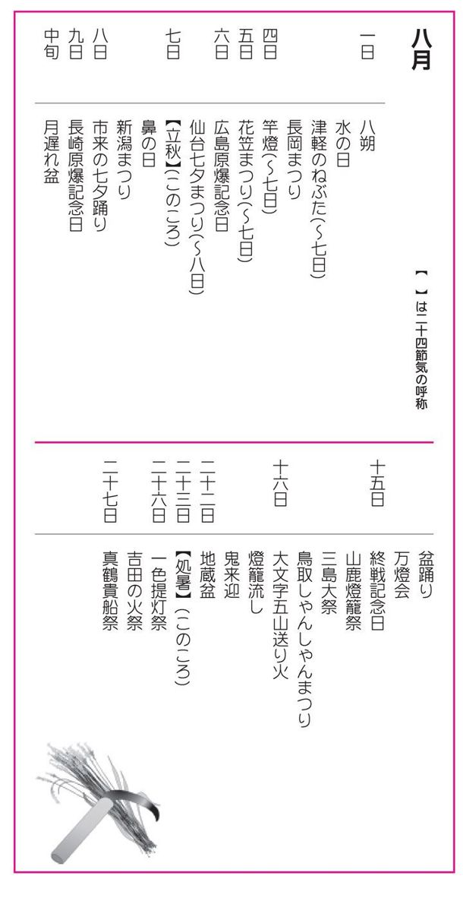
一日
●八朔（はっさく）
朔日は旧暦で毎月の第一日をさし、八朔とは、八月一日のこと。昔から、この日を吉日として祝う習わしがあった。農家では新しい穀物を配り合って祝い、豊作祈願の行事が行われた。この風習は、鎌倉時代後期から、武家社会や朝廷貴族、僧侶の間にも取り入られた。
●水の日（みずのひ）
水を一番使うのが猛暑の続く八月。水資源の大切さを知り、節水を呼びかけるために一九七七年（昭和五十二年）国土交通省が八月一日を「水の日」と制定した。水の日から七日間は「水の週間」で、節水への関心を高めてもらうことがその主旨。
●津軽のねぶた（つがるのねぶた）
青森県弘前市（一日～七日）・青森市（二日～七日）。東北四大祭り[＊①]の一つで、弘前市で行われるのが「ねぷた」、青森市で行われるのが「ねぶた」と呼ばれ、総称して「津軽のねぶた」という。青森のほうが規模が大きく、巨大な武者人形燈籠、弘前は人や動物の扇燈籠であるのが特徴。ねぶた師が、竹・木・針金で型取った大きな張子に紙を張り、絵柄を描き、色を塗り大燈籠に仕上げる。祭りを盛り上げるのは、跳人（はねと）と呼ばれる踊り手。跳人の衣装は組ごとにそれぞれ統一されている。観光客も衣装を買うか、レンタルすれば跳人に参加できる。
●長岡まつり（ながおかまつり）
新潟県長岡市。一日～三日。市をあげて行われ、ことに信濃川河畔で開催される花火大会は日本有数。全国から花火ファンが集まる。初日に大民謡流しがあり、二日・三日が各種イベントとメインの花火大会。尺玉九十七連発・全長八百五十㍍のナイヤガラ・三尺玉などが漆黒の夜空を染める。このほかの花火大会としては、秋田県大曲市の全国花火競技大会、新潟県小千谷市片貝の四尺玉、十和田湖、田沢湖、戸倉温泉、熱海など、七月から九月にかけて、ぞくぞくと開催される。
四日
●竿燈（かんとう）
秋田県秋田市。四日～七日。東北四大祭りの一つで福島・二本松提灯祭、愛知・一色提灯祭とともに三大提灯祭りの一つでもある。竿燈は、たわわに実る稲穂を型取っていて、五穀豊穣を祈願するものとされる。竿燈の最大のものは高さ約十二㍍、これに四十六個の提灯を吊るし、重さは五十キロにも及ぶ。「差し手」の男衆が揃いの絆纏姿で登場し、額や肩、腰などに竿燈を乗せ、しなう竹を操りながら妙技を競う。
五日
●花笠まつり（はながさまつり）
山形県山形市。五日～七日。東北四大祭りの一つ。紅花染めの花笠を持った一万人余りの踊り手が「やっしょう、まかしょ」の花笠音頭に乗って、毎晩目抜き通りを練り歩く。
六日
●広島原爆記念日（ひろしまげんばくきねんび）
「広島平和記念日」ともいう。一九四五年（昭和二十年）八月六日、八時十五分、アメリカ軍の爆撃機エノラ・ゲイ号から世界最初の原子爆弾が広島市に投下され、一瞬にして二十数万人の生命を奪った。世界遺産に指定されている原爆ドームは、今もその惨事を語る。毎年この日に平和祈念式典が行われ、市内の各河川で燈籠流しがある。
●仙台七夕まつり（せんだいたなばたまつり）
宮城県仙台市。六日～八日。東北四大祭りの一つ。仙台七夕は、藩祖伊達政宗の時代に始まり、代々の藩主が文武を奨励したことから有名になったという。一九二八年（昭和三年）に、仙台で大博覧会が催されてから年々華やかになった。日本一の七夕まつりを誇っており、七夕コンクールで装飾の意匠が競われる。
◎各地の七夕まつり
・七夕絵燈籠まつり...秋田県湯沢市。六日～七日。町民が描いた大きな絵燈籠や短冊、薬玉などが吊るされ、夜には灯が入る。
・けんか七夕...岩手県陸前高田市。七日。麻布の薄い紙テープを巻いて飾った山車七夕を、互いにぶつけ合う。
・入間川七夕まつり...埼玉県狭山市。六日～七日。仙台に次ぐ古いもの。一キロにわたって二千本以上の竿竹が飾られる。
・七夕黄門まつり...茨城県水戸市。八月上旬の三日間。道中行列では市長が黄門に扮する。
・両津七夕川開き...新潟県佐渡市。六日～八日。百二十年前の両津港開港を祝う祭で六日は前夜祭、七日は子供山車、八日は花火大会。ほかに民謡流し、鬼太鼓の競演など。
・安城七夕まつり...愛知県安城市。八月上旬の四日間。日本有数の七夕まつり。約千五百本の笹飾りが街を飾る。
・高岡七夕まつり...富山県高岡市。一日～七日。大小数千本の七夕が飾られる。
・七夕キリコまつり...石川県珠洲市。六日～七日。キリコというのは、この地方独特のもので、神輿を先導する奉灯のこと。
・大東七夕まつり...島根県大原郡大東町。六日。日没ごろ、浴衣・はっぴ姿の子供たちが笹竹を持って、町内を練る。
・七夕提灯まつり...山口県山口市。六日～七日。月遅れの七夕まつり。十万個の紅提灯で市内が溢れる。
七日
●立秋（りっしゅう）
二十四節気の一つ。暦の上では秋に入る。大暑から十五日後。太陽暦で八月七日ころ。暑さはまだまだきびしいが、朝夕の風や、自然の微妙な変化に、かすかに秋の気配を感じることができる。梨が実り、寒い地方では萩が花を咲かせる。
●鼻の日（はなのひ）
八月七日の「八七」を「はな」と読む語呂合わせから、日本耳鼻咽喉科学会が鼻の病気を減らすことを目的に一九六一年（昭和三十六年）に制定した。日本四大顔面記念日[＊②]の一つ。
●新潟まつり（にいがたまつり）
新潟県新潟市。七日～九日。従来は、北陸有数の港町行事として、住吉祭、川開き、商工祭、開港記念日などを別々に行っていたものが、一九五五年（昭和三十年）に「新潟まつり」として統一された。七日は前夜祭で、神輿渡御と市民御輿。八日に佐渡おけさ・新潟甚句などの大民謡流しがあり、その規模は日本一という。九日は信濃川畔で花火大会がある。
八日
●市来の七夕踊り（いちきのたなばたおどり）
鹿児島県日置郡市来町。五日～十一日の間の日曜日。元は旧暦の行事で、四百年も続く行列祭り。動物たちの霊を大張子の動物に託して慰めるとされる。牛・鹿・鶴・虎を先頭に各行列が続き、虎が青田の中で大暴れを始めると動物入り乱れてのユーモラスな寸劇となり、人々の笑いを誘う。国の重要無形民族文化財の指定を受けている。
九日
●長崎原爆記念日（ながさきげんばくきねんび）
一九四五年（昭和二十年）八月九日、十一時十一分、アメリカ軍の爆撃機ボックス・カー号による第二の原子爆弾が長崎市に落とされ七万余人の命を奪った。記念行事は、浦上天主堂をはじめ各教会で原水爆禁止の祈りを捧げる。
中旬
●月遅れ盆（つきおくれぼん）
七月盆に対しての八月盆を「月遅れ盆」ともいう。「盆」の詳細は七月十五日参照のこと。
●盆踊り（ぼんおどり）
盆に迎えた精霊を慰めるための踊りといわれるが、このころになると田畑の仕事が一段落つくため、盆踊りが人々の大きな娯楽になっていた。藪入りで里帰りした人々と共に楽しむ。盆踊りは、八月盆の十四日～十七日にかけて行われることが多い。規模が大きくなると街の通りを練り歩き、期間も長い。有名なものに、郡上踊り・阿波踊り・風の盆などがある。
◎代表的な盆踊り
・郡上踊り...岐阜県郡上市。七月中旬～九月中旬。四百年以上も続いている。期間中はほとんど毎晩「郡上踊りの夕べ」があり、地元の人々と観光客の輪が絶えない。八月盆の四日間は徹夜で踊り抜く。
・阿波踊り...徳島県徳島市。八月十二日～十五日。乱舞形式での流し踊り。男女によって踊り方が異なるのが特徴で、踊りの集団を連という。阿波踊りは全国各地に広がり、三百ヶ所近い所で踊られている。
・風の盆...富山県婦負郡八尾町。九月一日～三日。おわら節で踊るので「越中おわら風の盆」ともいう。男女とも鳥追笠を目深くかぶり、男が三味線・胡弓などの伴奏を受けもつ。優しくしなるような女踊りと直線的な男踊りが対照的。
・よさこいまつり...高知県高知市、九日～十一日。よさこい節とはりまやばしを看板に、一九五四年から始められた。男は鉢巻き、女は菅笠で、鳴子を両手に持って振りながら踊りまくる。
●万燈会（まんとうえ）
報恩のために、たくさんの灯明を灯して先祖の霊を供養する行事。万燈のほかに千燈などもある。
◎代表的な万燈会
・刈谷の万燈まつり...愛知県刈谷市、秋葉神社。第一土曜日・日曜日。万燈が、乱舞する勇壮なもので、けんかまつりともいう。
・東大谷万燈会...京都府京都市東山区。十四日～十六日。ここには東本願寺の祖廟があり、盆には、境内全域に万燈をつけて精霊を慰める。
・春日大社万燈籠...奈良県奈良市、春日大社。十四日～十五日。境内にある約三千基の燈籠に灯が入る。朱塗りの社殿に灯明が映える。
・化野千燈供養...京都府京都市右京区、念仏寺。二十三日～二十四日。無縁仏の霊を慰めるため、石仏や石塔に千余りの灯がゆらめく。
・千燈明...福岡県筑後市、水田天満宮。二十五日。帆立貝の殻に菜種油を注いで点火し、櫓（やぐら）や楼門などの要所要所に仕掛ける。
・千燈明祭...熊本県熊本市春竹町、琴平神社。三十一日。玉垣の上に設けた台に土器を並べ、三百ばかりの灯明を灯し、五穀豊饒祈願の祭典が行われる。
十五日
●終戦記念日（しゅうせんきねんび）
一九四五年（昭和二十年）八月十五日、日本はポツダム宣言を受諾して無条件降伏した。これにより第二次世界大戦は終結した。この日を「終戦記念日」として、国民が平和を祈願し、戦争を放棄することを誓う日と定めた。この日には、千鳥ヶ渕の戦没慰霊塔の前で、天皇・皇后両陛下をお迎えして「全国戦没者追悼式」が行われる。
●山鹿燈籠祭（やまがとうろうまつり）
熊本県山鹿市、大宮神社。十五日～十六日。山鹿燈籠は、木や竹を使わず、手漉の和紙だけを糊付けして、神社や城閣、民家や鳥籠などのミニチュアを作る民芸品。十五日は前夜祭で、燈籠の展示がある。十六日が燈籠祭、夜は松明（たいまつ）行列が大宮神社に進む。女性千人による踊りは、点滅する灯が浴衣の白に映えて優雅。
●三島大祭（みしまたいさい）
静岡県三島市、三島大社。十五日～十七日。東海道有数の大社で、祭神は事代主命。霊威が高く、特に祈雨の神として尊崇されている。五台の山車が出るほか、源頼朝の旗揚げ行列・流鏑馬神事・農兵節パレード・ミス三島コンテストなどがある。夜には、三島花火が夜空を彩る。
●鳥取しゃんしゃんまつり（とっとりしゃんしゃんまつり）
鳥取県鳥取市。八月十五～十六日。一九六五年（昭和四十年）から始まった真夏の市民まつり。十五日は花火大会が行われ、十六日には郷土芸能の因幡傘踊りを一般向けに振り付けして踊られる。因幡傘踊りは、江戸時代末期に、干魃（かんばつ）を乗り切るために傘をさして雨乞いをしたという伝統的なもので、金・銀・赤・青などで彩色した長柄の傘に小鈴をつけて、シャンシャンと回転させながら舞う。
十六日
●大文字五山送り火（だいもんじござんおくりび）
京都府京都市、東山如意ヶ岳ほか。盂蘭盆の「送り火」で、江戸時代初期から年中行事になったと伝えられる。五山の送り火[＊③]は、文字や絵の形をしている。「大文字焼き」という俗称で呼ばれることがあるが、これは正しくないとされる。東山連峰の如意ヶ岳（大文字山）の中腹にある七十五の火床に薪を積み上げ、午後八時に点火する。その後、他の山に順次点火される。
●燈籠流し（とうろうながし）
燈籠流しは、精霊流しの供え物の上に蝋燭をともしたもので、精霊流しの変形とされている。
◎各地の主な燈籠流し
・松島燈籠流し...宮城県宮城郡松島町、瑞巌寺。十六日。僧侶による大施餓鬼法会が終わると、八千有余の燈籠が流される。
・大沼公園燈籠流し...北海道渡島支庁亀田郡七飯町、大沼公園。十六日。
・宮津燈籠流し...京都府宮津市宮津湾一帯。十六日。初盆の精霊船の豪華さで有名。
・横手の送り盆燈籠...秋田県横手市。十五日～十六日。屋形舟を横手川へ運んで灯明をつけ、同時に数千の燈籠が流される。
・長瀞舟玉まつり...埼玉県秩父郡長瀞町長瀞岩畳。十六日。鉾船と屋形船の二艘から、数千の燈籠が流される。
・熊谷とうろう流し...埼玉県熊谷市。十六日。戦災で亡くなった市民の霊を慰めるため、星川に数千個の供養の燈籠を流す。
・敦賀とうろう流し...福井県敦賀市。十六日。景勝地・気比の松原で、数千の燈籠が漂う。
・百八体燈籠流し...静岡県熱海市多賀湾。十六日。ドラム缶の筏（いかだ）の上に丸太百八本で、海上大文字焼を行い、各所から燈籠を流す。
・流れ灌頂...宮崎県延岡市五ヶ瀬川畔。八月中旬。各寺が集まって燈籠流しをする。
・万燈籠流し...京都府京都市右京区嵐山。十六日。大文字の送り火とともに、臨川寺での法要後、無数の燈籠船を大堰川に流す。
・長崎精霊流し...長崎県長崎市。十五日。全国で最も豪華な精霊送りといわれる。夕刻、町内からは大勢で担ぐ藁の精霊船、各家庭からは一人持ちの精霊舟を海に流す。
●鬼来迎（きらいごう）
千葉県光町、広済寺。十六日。鬼来迎は広済寺の境内を舞台で演じられる盆狂言で因果応報の教えを説くとされる。鎌倉時代の伝説を聞いた彫刻師、運慶・丹慶・快慶の三人が、光町を訪れ閻魔大王・鬼・倶生神などの面を彫った。寺ではこの伝説を広めるために「鬼来迎」の狂言に仕立て、地獄の様相と菩薩の威光を示したといわれる。
二十二日
●地蔵盆（じぞうぼん）
二十二～二十四日。地蔵[＊④]を祀る行事で、全国各地で行われている。地蔵盆は盆の最後の行事であったものが、盆の期間が短くなり、単独の子供の行事として残ったとされる。地蔵は、三途の川の犀の川原で遊ぶ子供を地獄の鬼から守ると信じられ、お盆の後、地蔵盆を催して、子供たちと遊ぶ風習が生まれた。
二十三日
●処暑（しょしょ）
二十四節気の一つ。立秋から十六日目。太陽暦で八月二十三日頃。処暑の「処」は「とめる」「とどまる」の意で、処暑とは、暑さが止まり、夏が終わることを意味する。涼風が吹くようになり、北海道ではサケ漁が開始される。また、処暑が過ぎると農家では、農事の大切な時期、収穫期に入る。
二十六日
●一色提灯祭（いっしきちょうちんまつり）
愛知県幡豆郡一色町、諏訪神社。二十六日～二十七日。秋田・竿燈、福島・二本松提灯祭とともに三大提灯祭りの一つ。美濃紙に絵や文字を描いた長さ十㍍、直径六㍍もの大きな提灯が出るので「一色の大提灯」、「馬鹿提灯」の名でもよばれている。
●吉田の火祭（よしだのひまつり）
山梨県富士吉田市、浅間神社。富士山の閉山行事で、富士山の山小屋と市内の家々の門口の松明（たいまつ）に一斉に火がともる。静岡・島田帯祭又は尻摘み祭、愛知・国府宮裸祭とともに日本三大奇祭の一つ。神事は、祭神の木花開耶姫が、猛火の中で安産した伝説にちなむとされるが、この行事が、元亀・天正（一五七〇～一五九一）のころからのもので、富士の噴火が止んだのを祝って始められたと考えられている。
二十七日
●真鶴貴船祭（まなづるきふねまつり）
神奈川県足柄下郡真鶴町、貴船神社。二十七日～二十八日。八八九年（宇多天皇の寛平元年）に、神霊が真鶴岬に降臨され、地元の人々が小船で迎えたという縁起による。船足を誇る小早船が、港内の御旅所から神社まで神迎えする時に小早船の競争が行われる。一九五八年（昭和三十三年）に、県の無形文化財に指定されている。
津軽のねぶた・仙台の七夕まつり・秋田の竿燈・山形の花笠まつりの四つをさす。東北三大祭りと言うときは、津軽のねぶた・仙台の七夕まつり・秋田の竿燈の三つをさす。
耳の日（三月三日）・鼻の日（八月七日）・ひげの日（八月八日）・目の愛護デー（十月十日）
●東山如意ヶ岳（大文字山）
文字は〈大〉
●金閣寺近くの大北山
文字は左大文字の〈大〉
●松ヶ崎の大黒天山
文字は〈妙〉と〈法〉
●嵯峨水尾山
鳥居形の絵
●西賀茂の明見山
船形の絵文字
正しくは地蔵菩薩という。釈迦入滅後、弥勒菩薩が仏になるまでの長い仏のいない時代に、六道（地獄・飢餓・畜生・修羅・人界・天界）に迷える衆生を導き救済することを託されたとされる。地蔵信仰は民衆に広く広まり、六地蔵・身代わり地蔵など数多くの地蔵がある。
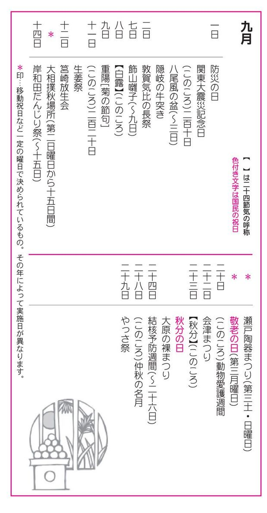
一日
●防災の日（ぼうさいのひ）
防災の日は、一九二三年（大正十二年）九月一日に起こった関東大震災を記念したもので、一九六〇年（昭和三十五年）六月十七日の閣議了解に基づいて設けられた。この日は全国で防災訓練が行われる。
●関東大震災記念日（かんとうだいしんさいきねんび）
関東大震災は、死者行方不明者十四万人、負傷者十万人、破壊焼失戸数六十八万戸に及んだとされる。東京都墨田区の震災記念慰霊堂をはじめ被災地の各所で、震災と同時刻の十一時五十八分に、追悼の慰霊祭や黙祷が行われている。
●二百十日（にひゃくとおか）
雑節の一つ。立春から数えて二百十日目の日をいう。ちょうど稲の開花期で、台風の襲来期にあたることから、農家では厄日として警戒する。九月一日には農作物を風の被害から守るために、各地で風祭りが行われる。
●八尾風の盆（やおかぜのぼん）
富山県婦負郡八尾町。一日～三日。詳細は八月中旬「風の盆」参照のこと。
●隠岐の牛突き（おきのうしつき）
島根県隠岐郡西郷町。和牛の角突き相撲。本場所は八、九、十月に行われる。牛は相互に角で突きあい、一方が逃げると勝負が決まり、ミツケと称する検査役が判定を下す。都万村の八朔の大会が由緒あるとされる。
二日
●敦賀気比の長祭（つるがけひのちょうさい）
福井県敦賀市、気比神宮。二日～十五日。気比神宮の例大祭で五穀豊穣と航海安全を祈願。長期なので気比の長祭と呼ばれる。北陸地方指折りの祭り。二日は宵祭り。三日に神輿の渡御があり、甲冑姿の行列が続く。四日は献幣使参向の儀が行われ、各町内から引き出された山車が市内を巡る。
七日
●飾山囃子（おやまばやし）
秋田県仙北郡角館町、神明社。七日～九日。飾山とは山車のことで、かつぎ山とも称する。飾山囃子は、日本三大囃子（京都の祇園囃子、江戸の馬鹿囃子）の一つに数えられている。飾山の行進は、上り山、下り山、下り藤で囃されるが、歌も踊りもない。神明社に向かって上りと下りが必ず行き合うので、飾山同志が喧嘩囃子（神楽囃子）にのってぶつかり合い、押し切られた方が道を譲る。飾山の動きが止まると、挙囃子、秋田甚句、生保内節、秋田音頭、秋田おばこ、長者の山などが華々しく行われる。
八日
●白露（はくろ）
二十四節気の一つ。処暑の十五日後。太陽暦の九月八日ころ。白露は露の美称で、このころになると夜に降りた露が、草花や野草の葉に白い露の玉を宿すことを意味する。このころは秋霖[＊①]前線（秋雨前線のこと）が発達して、台風がしばしば日本の上を通り、天候の悪い日が多い。
九日
●重陽（ちょうよう）
陰暦の九月九日は五節句の一つで、「重陽の節句」「菊の節句」「重九の節句」といわれ、菊酒をくみ交わして長寿を祝い合った。中国古来の習俗では、奇数を陽の数とし、陽数の極である九が重なる意味から重陽となり、重陽の節となった。現在は、他の五節句と比べると影が薄く、重陽の特別な行事は行われないが、各地で菊祭りや菊花展が開かれる。
十一日
●二百二十日（にひゃくはつか）
雑節の一つ。立春から数えて二百二十日目の日で、九月十一日ごろにあたる。二百十日より十日後のこのころは、晩稲の開花期で、風害の厄日として警戒されている。統計的に二百十日以降の九月下旬に台風の襲来が集中しているので、二百二十日のころを最も警戒するようになった。
●生姜祭（しょうがまつり）
東京都港区芝大門、芝大神宮。十一日～二十一日。芝大神宮は芝増上寺の鎮守で、天照大神を祀る。生姜市が盛んなので一般に「生姜祭」といわれるが、例祭は前後十日間だらだら続くので「ダラダラ祭」とも呼ばれる。祭礼の期間中、境内では、甘酒接待や千木笥[＊②]が売られ、江戸囃子が賑やかに響きわたる。
十二日
●筥崎放生会（はこざきほうじょうえ）
福岡県福岡市、筥崎宮。十二日～十八日。筥崎宮の秋祭りで千年の歴史を持つ。放生とは、仏教の殺生戒に基づいて、生きものを池、川、山林に放って供養すること。例祭は十二日に遷宮式を行い、十四日に還御する。十五日は流鏑馬が行われる。祭りの起源は古く、天台大師が天台山の麓に放生池を設け、魚介を放たせたという故事による。
十三日
●大相撲秋場所（おおずもうあきばしょ）
大相撲六場所の一つで、九月の第二日曜日からの十五日間に渡って東京両国の国技館で行われる。
十四日
●岸和田だんじり祭（きしわだだんじりまつり）
大阪府岸和田市、岸城神社。十四日～十五日岸和田祭りは、泉州名物の一つで、岸和田の喧嘩祭、血祭といわれる。地車（だんじり）と呼ばれる四トンの巨大な山車を、引きながら、直角の町角を見事にぬける「やりまわし」が見もの。
十八日
●瀬戸陶器まつり（せととうきまつり）
愛知県瀬戸市、窯業神社。九月の第三土曜日・日曜日。瀬戸焼の恩人加藤民吉を偲ぶ祭り。露天には高価なものから、瀬戸焼以外のものまで、さまざま並ぶ。瀬戸の陶器は、当初、灰色で無釉の小皿や小鉢が作られていた。弘仁時代（八一〇～八二三）ごろから青磁に似た施釉製が現れ、黄瀬戸に変化していった。鎌倉時代になって、初代の加藤籐四郎（景正）が、南中国の天目釉を伝来して、茶入れや茶碗を作りあげた。
二十日
●敬老の日（けいろうのひ）
国民の祝日。九月の第三月曜日。敬老の日には、各地で長寿を祝い、老人[＊③]をいたわり敬うさまざまな行事が開催される。一九五一年（昭和二十六年）、当時の中央福祉協議会が、九月十五日を「としよりの日」と決めたが、一九六三年（昭和三十八年）に老人福祉法が制定され、その名称を「老人の日」に改めた。さらに一九六五年（昭和四十年）の国民の祝日に関する法律の改正により、「敬老の日」となった。二〇〇三年（平成十五年）から移動祝日となっている。
◎老人保健福祉週間...十五日～二十一日。
●動物愛護週間（どうぶつあいごしゅうかん）
動物愛護週間は、九月二十日ころから、秋分の日を中心として一週間行われる。発端は、アメリカで始められた愛護運動で、日本では、日本人道協会理事長のバーネット夫人の提唱により、昭憲皇太后の誕生日を記念して、一九五〇年（昭和二十五年）五月二十八日から一週間行ったのがはじまりである。この週間には、動物慰霊祭、小学生の手による愛護ポスターの展覧会などが開催される。
二十二日
●会津まつり（あいづまつり）
福島県会津若松市、飯盛山・鶴ヶ城。二十二日～二十四日。このまつりは、「会津白虎まつり」「白虎隊墓前祭」ともいわれ、鶴ヶ城の開城と白虎隊の慰霊祭を兼ねて行われる。本祭は二十三日で、戊辰戦争の会津藩出陣を再現したもの。玄武隊、青龍隊、朱雀隊、白虎隊と年齢の順に隊列を組み、総勢七百人からの武者が長蛇の行進をする。薙刀（なぎなた）に白鉢巻き姿の娘子隊も参加するほか、袴姿の少年たちが、剣舞を舞う。
二十三日
●秋分（しゅうぶん）
二十四節気の一つ。太陽が黄経百八十度の秋分点に達する時。太陽暦で九月二十三日ころ。春分と同様、太陽が真東から出て真西に没する。昼夜の時間が等しく、以後冬至まで夜が長くなっていく。秋分は秋の彼岸[＊④]の中日で、しのぎやすい日が続き、収穫と秋祭りが行なわれる時節でもある。
●秋分の日（しゅうぶんのひ）
国民の祝日。一九四六年（昭和二十三年）七月二十日に国民の祝日に関する法律が公布され、秋分の日は祖先を敬い、亡くなった人々を偲ぶ祝日とされた。
●大原の裸まつり（おおはらのはだかまつり）
千葉県夷隅郡大原町、大原漁港。二十三日～二十四日。若者たちが神輿を担いで潮ふみをする勇壮な、大漁祈願の祭である。大原漁港で神事を終えた十八社十八基の神輿が、浜の漁師とその血を引く者にかつがれ、大原の町内を掛け声とともに練り歩く。浜に集まった神輿は、荒海の中に入って潮ふみを始め、やがて、神輿と神輿のぶつかり合い、せり合いが行われる。
二十四日
●結核予防週間（けっかくよぼうしゅうかん）
予防週間のはじまりは、大正時代に遡るが、一九六二年（昭和三十七年）に九月二十四日～三十日と決められた。結核発病の絶滅を期して、厚生労働省をはじめ各都道府県、指定都市、日本医師会及び結核予防協会の主催のもとに、全国で実施される。
二十八日
●仲秋の名月（ちゅうしゅうのめいげつ）
旧暦八月十五夜の月。年によって日は異なる。三秋（初秋・仲秋・晩秋）の中で、仲秋の月がもっとも清澄で美しいことから「仲秋の名月」と呼ばれる。ススキ・芋・栗・団子などを供えて月見の宴が開かれる。「芋名月」[＊⑤]の別称がある。
二十九日
●やっさ祭（やっさまつり）
群馬県利根郡月夜野町、若宮八幡宮。若宮八幡宮の裸祭りで、四百年以上の歴史を持つ。明治時代に一度途絶えたが、一九四六年（昭和二十一年）に復活した。褌一枚の氏子の若者二十数名が、十九時ごろ「ヤッサ・ヤッサ・シンジュウロー[＊⑥]」の掛け声をかけつつ、前者の褌に手をかけてつながり、揉み合いながら、本殿めがけて突進する。揉み合いを七回にわたって繰り返した後、社前に垂れ下がった鈴の縄を切る。この鈴縄が早く切れた年ほど、豊穣であるとされる。
秋霖とは、「秋の長雨」のことで、霖雨は北日本に多く見られる現象である。ちょうど梅雨どきと似たような気圧配置になる。ただし、雨量は梅雨どきほど多くはない。
小判型の桧の経木を箱のように三つ重ねにした曲物で、表面には色あざやかな藤の花が描かれている。この箱を天井に吊しておき、雷鳴の時に中の豆（飴）を食べると雷除けになる。また、小型の千木笥を箪笥に入れておくと、着物が増えるといわれている。風木箱ともいう。
老人福祉法でいう老人とは、七十歳以上の年齢をさす。
秋の彼岸は、秋分の前後各三日間を含め七日間。この期間に寺院では彼岸会（ひがんえ）の行事があり、春の彼岸と同じく、墓参りなどをする。
芋とは里芋のことで、旬の里芋を月見の供え物とすることから。なお、旧暦八月十五夜の月を「芋名月」と呼ぶのに対して、九月十三夜の月は「豆名月」「栗名月」と呼ぶ。ともに名月として親しまれ、十五夜に月見をしたら十三夜も必ず月見をするものだ、片見月はするものではないとされている。
シンジュウローというのは、利根川の洪水の折に指揮をした武士の名前で、洪水を防いだことがこの祭りの由来とされている。
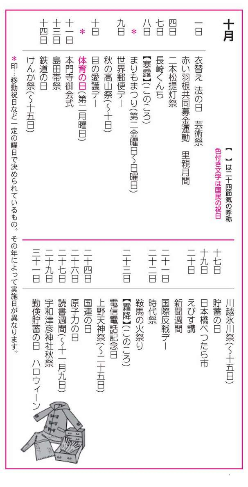
一日
●衣替え（ころもがえ）
季節に応じて衣服を着替えること。官庁・学校・企業などで制服を着るところでは、この日を境に夏服から冬服に着替えるところが多い。平安時代は年に五回ほど衣替えがあったが、しだいに簡略化された。現在のような夏服・冬服に衣を替える習慣は、江戸時代以降のことで、六月一日と十月一日が衣替えの日と定められている。
●法の日（ほうのひ）
一九二八年（昭和三年）十月一日に陪審法が施行され、翌年からこの日を「司法記念日」と定められたことに由来する。一九六〇年（昭和三十五年）六月二十四日の閣議で『法の日』と改められた。毎年十月一日を中心に、各地で記念式典・講演会・座談会・模擬法廷・無料法律相談会などの行事が開催される。
●芸術祭（げいじゅつさい）
文部科学省が主催する行事で、一九四六年（昭和二十一年）から行われている。一日～十五日。芸術祭は、演劇・音楽・舞踊・演芸・ラジオ・テレビ・レコードの七部門に分かれている。芸術祭公演には主催公演と参加公演の二種類があり、優秀と認められた公演に対しては、文部科学大臣から芸術祭賞や芸術祭奨励賞が贈られる。なお、一九九七年（平成九年）からはメディア芸術祭[＊①]が開催されている。
●赤い羽根共同募金運動（あかいはねきょうどうぼきんうんどう）
十月一日～十二月三十一日。一九四七年（昭和二十二年）四月、少年の町のフラナガン神父の勧めで、長崎、佐賀、福岡の各県で実施されたのがはじまり。同年八月、共同募金運動実施要領が決定され、社会事業共同募金中央委員会が発足した。一九五一年（昭和二十六年）六月、社会福祉事業法の実施によって、共同募金運動に法的な裏付けがなされた。
●里親月間（さとおやげっかん）
十月一日～十月三十一日。里親制度は、児童福祉法により親のない子や何らかの事情で親と一緒に生活できない子供を他人に預ける制度。一九四八年（昭和二十三年）十月四日に発令された里親制度の運営に関する通達にちなむ。厚生労働省主催の全国里親大会などが開催される。里親になるには、児童相談所を通じて地方長官（都道府県知事、指定都市市長）に届出て、里親登録をする必要がある。
四日
●二本松提灯祭（にほんまつちょうちんまつり）
福島県二本松市、二本松神社。四日～六日。江戸初期に藩主丹羽光重が京都の祇園祭の一部を模して行ったことにはじまる。秋田の竿燈、愛知の一色提灯祭とともに三大提灯祭りの一つに数えられている。十㍍もの太鼓台（山車）には約四百個の提灯が吊るされ、台上には、笛・鉦・鼓・太鼓の囃子方が八～九人乗る。七台の太鼓台が根崎に集合し、二本松神社の火で提灯が灯もされ、若者たちに引き出されて市内の各町内を回る。
七日
●長崎くんち（ながさきくんち）
長崎県長崎市西山、諏訪神社。七日～九日。長崎くんち[＊②]は、奉納踊りで、「踊り町」七七ヶ町が七つの組に分かれ、七年に一度その出番が回ってくるというもの。近年、その数は減っているという。この奉納踊りの中でも有名なのは、蛇踊り・鯨の潮吹き・唐人船・竜船などで、いずれも長崎らしい異国情緒のある民俗芸能である。七日に、本社で遷宮式があり、三社神輿が御旅所へ渡御するが、三基の神輿が二百七十三段の長い石段を下りる勇壮さが見もの。
◎各地のくんち・おくんち
・人吉おくんち...熊本県人吉市、青井阿蘇神社。九日～十日。十六町内の子供神輿を先頭に神幸行列が球麿川の中洲に行進し、臼太鼓踊りなど代表的な郷土芸能が演じられる。
・御厨おくんち...長崎県松浦市御厨町、姫神社。十七日。神輿船を先頭に、大漁旗・国旗などで満船飾の多数の漁船がパレードする。
・星鹿おくんち...長崎県松浦市御厨町、羽黒神社。十一月五日。御厨おくんちと日を違えて行われる。
・伊万里トンテントン祭...佐賀県伊万里市、伊万里神社。二十二日～二十四日。県の重要民俗資料の曳山十四台が、宵山と当日に曳き廻される。伊万里くんちともいう。
・博多おくんち...福岡県福岡市博多区、櫛田神社。二十三日～二十四日。神輿を先頭にして、稚児行列、武者行列、樽神輿の行列が市内を巡行する。この神社は、天平年間（七二九～七四九年）の古社で、博多どんたく、博多山笠などもここが中心。
・平戸くんち...長崎県平戸市、亀岡神社。二十四日～二十七日。神幸式の後に、武者行列が練り歩くほか、平戸神楽や中国式竜踊り、獅子舞などもある。
・佐世保おくんち...長崎県佐世保市、亀山八幡宮。十一月一日～三日。
・唐津くんち...佐賀県唐津市、唐津神社。十一月二日～四日。
八日
●寒露（かんろ）
二十四節気の一つ。秋分と霜降（そうこう）の間。太陽暦で十月八日ころ。太陽が黄経百九十五度の時。寒露は晩秋から初冬にかけて草木の葉に宿る露のこと。寒気にあたって物象が凍る午前の時節を意味する。寒い地方では、木々の葉が寒露にあたって紅葉し始める。秋祭が盛んになり、第二月曜日の体育の日を中心に、スポーツ行事が各地で開催される。
●まりもまつり
北海道東部、阿寒湖。第二金曜日～日曜日。一九五〇年（昭和二十五年）に「まりも返還」の運動が起こり、観光客が持ち帰ったまりも[＊③]を湖中に返すことになったのがはじまり。前夜祭と本祭があり、前夜祭にはアイヌの歌や踊りが催される。本祭では、正装のコタンの男性と女性（メノコ）が、湖畔の神社での行事の後、まりもを祭壇に飾り、歌と踊りを奉納して湖中に戻す。
九日
●世界郵便デー（せかいゆうびんでー）
世界を一つの郵便地域にする目的で、万国郵便連合（ＵＰＵ）が一八七四年（明治七年）十月九日に創設されたのを記念するもので、一九八四年（昭和五十九年）に「世界郵便デー」とされた。本部はベルン（スイス）に置かれており、日本は一八七七年（明治十年）六月一日に加盟している。郵便業務の効果的運営によって、文化・社会・経済分野などにおける国際協力を図ろうというもの。
●秋の高山祭（あきのたかやままつり）
岐阜県高山市、桜山八幡宮。九日～十日。高山市は、飛騨地方の中心地として栄えた城下町。高山祭は氏神の例祭で、春秋の二回行われるが、市を南北に分け、春に高山市南半分を日枝神社の山王祭として、秋に北半分を桜山八幡神社の八幡祭としている。「秋の高山祭」でも、名物の豪華な屋台がお囃子とともに市内を練り歩く。獅子舞・神楽・雅楽・鶏頭楽などの踊りも見所。
十日
●目の愛護デー（めのあいごでー）
一九三一年（昭和六年）に中央盲人福祉協会の提唱により「視力保存デー」が設けられたのがはじまりで、戦後、厚生労働省によって「目の愛護デー」に改められた。十月十日と設定したのは、数字の並びを目と眉の形に見たてたユニークな発想によるもの。日本眼科医会による近視予防や、失明者に対する福祉運動などの行事が行われる。一九六三年（昭和三十八年）十月十日に、アイバンクが開設されている。
十一日
●体育の日（たいいくのひ）
国民の祝日。十月の第二月曜日。一九六四年（昭和三十九年）十月十日、東京オリンピック大会開会式の日を記念して、一九六六年（昭和四十一年）に国民の祝日として追加制定された。二〇〇〇年（平成十二年）からは、三連休とするべく十月の第二月曜日とされる。それ以前は十月の第一土曜日をスポーツの日としていた。文部科学省では、学校などの体育施設を無料で開放することを呼びかけている。
●本門寺御会式（ほんもんじおえしき）
東京都大田区池上本町、本門寺。十一～十三日。御会式とは、法会の儀式をさす語であるが、日蓮宗ではもっぱら宗祖日蓮上人遺恩のための法要をいい、御影供・御命講・報恩会ともいう。池上本門寺は、日蓮上人示寂[＊④]の地で、十一日には平和祈願法要、十二日に武相御召講と御会式の中心になる法要、夜間は万燈供養が盛大に繰り広げられる。十三日は上人の忌日で、御廟参拝式と稚児行列が行われる。
●島田帯祭（しまだおびまつり）
静岡県島田市、大井神社。十三日～十五日。大井神社の大祭で寅・巳・申・亥の三年目ごとに行われる。日本三大奇祭[＊⑤]の一つで、大奴の帯行列が見もの。神輿渡御で大名行列に随行する大奴が、その年、島田に嫁入りしてきた女性の派手な嫁入り帯を腰にさした大太刀に掛けて練り歩くというもの。その姿が異様なことから、この祭りの名になった。
十四日
●鉄道の日（てつどうのひ）
一九九四年（（平成六年）に制定されたが、それまでは「鉄道記念日」（一九二二年に制定）と称していた。一八七二年（明治五年）十月十四日（旧暦九月十二日）、新橋-横浜間（現在の汐留-桜木町間）に、日本初の鉄道が開業。開通当時は、この間を四十五分で走り、文明開化の利器としてもてはやされた。運賃は上等一円五十銭、中等一円、下等五十銭であった。なお、国鉄（日本国有鉄道）は、一九八七年（昭和六十二年）四月一日から民営化され、ＪＲ（日本旅客鉄道）と改称された。
●けんか祭（けんかまつり）
兵庫県姫路市白浜町、松原八幡神社。十四日～十五日。松原八幡神社の祭りであるが、白浜町は、かつては妻鹿といったことから、「妻鹿のけんか祭」ともいう。三基の神輿（一の丸・二の丸・三の丸とよび、白・黄・赤の鉢巻き三組）がぶつかり合い、格闘することから、「けんか祭」といわれている。十四日は宵宮。十五日は本祭で、三基の神輿が御旅山麓矢倉畑の練り場に渡御し、威勢よく格闘する。相手の神輿を押し倒して、自分たちの輿をその上に重ねた方が勝ちとなる。
●川越氷川祭（かわごえひかわまつり）
埼玉県川越市、氷川神社。十四日～十五日。氷川神社の例大祭。川越は、小江戸と呼ばれ、大江戸へ物資を送る商業の町として発展した。川越祭の山車は上下二層からなっていてさまざまな人形を飾っている。十四日は宵宮の町内巡行。十五日の本祭には神輿渡御と二十九台の山車が町内から繰り出され、川越の旧町内を練り歩く。十六日は、笠脱ぎ[＊⑥]といって祭り終了の神事がある。
十七日
●貯蓄の日（ちょちくのひ）
一九五二年（昭和二十七年）に日本銀行貯蓄増強中央委員会の提唱により始められた。神嘗祭[＊⑦]にちなんで、十月十七日と定められた。「勤労の収穫であるお金を大切にする日」ということで、貯蓄に対する関心を高め、貯蓄の増進を図る日とされている。
十九日
●日本橋べったら市（にほんばしべったらいち）
東京都中央区日本橋大伝馬町・小伝馬町。江戸時代の中ごろから始められたもので、かつては二十日の夷講に供用する諸物を売る市であった。中でも、大根の浅漬けがよく売れたので、いつしか「べったら」[＊⑧]だけを売るようになり、「べったら市」に変わった。
二十日
●えびす講（えびすこう）
えびす講は、家運隆盛、商売繁盛の福の神であるえびす神を祀る行事で、一月十日、十月二十日、十一月二十日に行われるが、地方によって異なる。特に神無月（かんなづき）は、すべての神様が出雲へ詣でてしまうが、えびす様だけは留守番のために残ることから、十月にえびす講を行うところが多い。京都では一年間についた嘘の罪を神社に参拝して払ってもらう習わしがあり、これを「誓文払い」という。
●新聞広告の日（しんぶんこうこくのひ）
一九五八年（昭和三十三年）日本新聞協会が設定したもので、新聞広告が生活情報源として果たす役割の大きいことをアピールするのが狙い。十五日～二十日に開催される新聞週間のほぼ中日に当たり、全国の新聞社をはじめ、新聞協会などが多彩な行事を催す。なお、新聞週間はアメリカで始められた行事。
二十一日
●国際反戦デー（こくさいはんせんでー）
一九六七年（昭和四十二年）十月二十一日、世界各地でアメリカのベトナム戦争介入に反対する集会が開かれたことから、ベトナム戦争反対の国際統一行動となった。同戦争の終結後は、世界平和実現のための行動日になった。
二十二日
●時代祭（じだいまつり）
京都府京都市左京区岡崎町、平安神宮。時代祭は、京都市民の氏神とされている平安神宮の祭礼で、葵祭、祇園祭とともに京都三大祭りの一つ。一八九五年（明治二十八年）に平安遷都千百年を記念して、平安神宮が創建された。その記念祭の一環として行われたのがはじまりで、平安時代ら明治維新期までの各時代の文物風俗の変遷を示す時代行列が行われ、華麗な風俗絵巻が展開される。参加人員は男女合計三千人余り、行列の長さは数キロに及ぶ。
●鞍馬の火祭（くらまのひまつり）
京都府京都市左京区鞍馬山、由岐神社。由岐神社の秋の例祭であるが、「鞍馬の火祭」の名で知られる。各家庭で松明（たいまつ）が燃やされ、少年たちが松明を担いで「サイレヤ、サイリョ」と叫び練り歩く。路上には大きな木株が積み上げられ、夜には篝火（かがりび）が焚かれる。若者が大松明を地面に叩きつけ、火の粉が飛ばされる。由岐神社と八所明神の二基の神輿を裸の氏子たちが担ぎ、御旅所に渡御する。この夜は鞍馬全体が篝火や松明で火の海となる。
二十三日
●霜降（そうこう）
二十四節気の一つ。太陽暦で十月二十三日ころ。霜降とは霜がおりること。しばしば朝霜を見て、虫の声も、ほとんど聞かれなくなる。紅葉がすすみ、落葉が見られる。
●電信電話記念日（でんしんでんわきねんび）
一八六九年（明治二年）年九月十九日に、横浜-東京間の公衆電話工事が着工された。着工日が新暦の十月二十三日にあたることから、電信電話公社が一九五〇年（昭和二十五年）に電信電話記念日と定めた。一八九〇年（明治二十三年）当時の電話加入者は、東京百五十五件、横浜四十二件だったという。
●上野天神祭（うえのてんじんまつり）
三重県上野市東町、菅原神社。二十三日～二十五日。菅原神社の例大祭で、「伊賀上野の天神祭」ともいわれる。元禄（一六八八年～一七〇四年）期に疫病がはやり、悪疫退散のための鬼行列を行ったのがはじめとされる。二十三日は宵宮祭。二十五日が本祭りで、神輿の渡御と名物の鬼行列があり、特大御弊の後から、妖面・奇面・怪面・珍面など百数十体の鬼たちが髪をふり乱して行進する。絢爛の山車や七福神踊りなどが町を練り歩く。
二十四日
●国連の日（こくれんのひ）
国連（国際連合ＵＮ = United Nations）は、第二次大戦を契機に生まれた国際平和機構で、一九四五年（昭和二十年）十月二十四日、国際連合憲章の発効とともに正式発足した。本部はニューヨーク。日本は、一九五六年（昭和三十一年）十二月十八日に第八十番目の国として加盟が認められた。この国連加盟を記念して、一九五八年（昭和三十三年）に十月二十四日を「国連の日」とすることが閣議で正式に決定された。
二十六日
●原子力の日（げんしりょくのひ）
茨城県東海村の日本原子力研究所の動力試験炉（ＪＰＤＲ）で、初めて原子力発電に成功したのは、一九六三年（昭和三十八年）十月二十六日のこと。この日は、日本が国連の専門機関である国際原子力機関に加盟決定した日でもあった。偶然にも、同じ月と日であることから、「原子力の日」とした。原子力についての学界の研究発表会や関係機関の一般公開、講演会などが催される。
二十七日
●読書週間（どくしょしゅうかん）
十月二十七日～十一月九日。一九四七年（昭和二十二年）から行われているもので、読書の奨励・愛書精神の高揚・良書の普及と悪書の追放など、書籍について多彩な催しがある。本の街として知られる東京都千代田区神田神保町では、十月二十七日から十一月三日まで「古本まつり」が行われる。
二十九日
●宇和津彦神社秋祭（うわつひこじんじゃあきまつり）
愛媛県宇和島市、宇和津彦神社。宇和島の牛鬼は、宇和四郡の総鎮守・宇和津彦神社の祭礼で、夏の祭り（和霊神社大祭）に対する秋の祭り。牛鬼は、全身をシュロの毛や赤布で覆い、頭首は角のある赤鬼、尻尾は剣にかたどり、その下に白幣をたらしている。神輿渡御の先導となって、市内の家々を巡って悪魔払いする。八つ鹿踊りは、八人の少年が踊るもので、一人は雌鹿、その他は雄鹿に扮し、雄鹿が雌鹿を探し求める所作を演ずるもので、神輿の渡御の先駆となって踊る。
三十一日
●勤倹貯蓄の日（きんけんちょちくのひ）
一九二五年、イタリアのミラノで国際貯蓄銀行協会加盟国（二十七ケ国）の勤倹貯蓄会議が開催された。地元のロンバルディ貯蓄銀行の提唱により、会議最終日の十月三十一日を世界共通の「勤倹貯蓄の日（世界勤倹デー：World Thrift Day）」と定めた。日本がこの協会に加盟したのは、一九五二年（昭和二十七年）のこと。日本の「貯蓄の日」は、十月十七日であるが、こちらは日本独自の記念日である。
●ハロウィーン（Halloween）
ハロウィーンは、キリスト教の万聖節[＊⑨]の前夜祭をさす。この夜は、子供たちの悪戯が許されるので、子供たちはお化けの真似をして通行人を驚かして喜び合うが、カボチャのお化けがよく知られている。海賊やガイコツ、ホウキに乗った魔女なども登場する。リンゴやドーナツを吊り下げて食べるゲームも行われる。
メディア芸術祭は、デジタルアート（インタラクティブとノンインタラクティブ）、アニメーション、マンガの三部門がある。
が訛ったもので「おくんち」ともいう。もとは、重陽（九月九日）の秋祭りのことをいったが、後に、単に祭りの意味で使われるようになったとされる。
まりもは、阿寒湖北側の水面一〜ニ㍍の所に密集している緑藻類の一種で、シホグサ科に属する淡水藻。阿寒湖の名植物で、天然記念物に指定されている。アイヌの人々は、まりもをトウラサンペ（湖の臓）と呼び、また神の化身として大切に守っている。
示寂とは、菩薩や高僧が死ぬこと。入寂（にゅうじゃく）、遷化（せんげ）ともいう。日蓮上人（にちれんしょうにん）は、弘安五年（一二八二年）十月十三日に六十一歳に信者の池上右衛門宗仲の家で示寂した。なお、日蓮上人誕生の地である千葉県安房郡天津小湊町の誕生寺では、十一月十二・十三日に御会式を催している。
富士吉田市・富士浅間神社の火祭、島田帯祭、愛知・稲沢の国府宮の裸祭の三つをさす。帯祭の代わりに伊東市の尻摘み祭をさすこともある。
笠脱ぎのカサは花笠のことで、厳粛な神事から無事に解放されることを意味し、笠は神社に奉献される。
皇室の大祭の一つ。天皇が、その年に収穫した新しい米を伊勢神宮に奉納する行事。神嘗祭は、かつては国の祝祭日であった。
べったらとは、塩と麹に生大根を漬けた浅漬けのこと。
十一月一日に行われるキリスト教の祝日で、あらゆる聖人を記念する日。
◆秋の季語◆
時候
●秋（あき）●秋麗（あきうらら）●秋惜しむ（あきおしむ）●秋澄む（あきすむ）●秋の暮（あきのくれ）●秋の朝（あきのあさ）●秋の昼（あきのひる）●秋彼岸（あきひがん）●秋深し（あきふかし）●朝寒（あささむ）●秋めく（あきめく）●九月（くがつ）●九月尽（くがつじん）●暮の秋（くれのあき）●爽やか（さわやか）●残暑（ざんしょ）●十月（じゅうがつ）●新涼（しんりょう）●冷まじ（すさまじ）●そぞろ寒（そぞろさむ）●仲秋（ちゅうしゅう）●長月（ながつき）●二百十日（にひゃくとおか）●肌寒（はだざむ）●八月（はちがつ）●初秋（はつあき）●葉月（はづき）●八朔（はっさく）●晩秋（ばんしゅう）●冷やか（ひややか）●文月（ふみづき）●冬近し（ふゆちかし）●身に入む（みにしむ）●やや寒（ややさむ）●行く秋（ゆくあき）●夜寒（よさむ）●夜長（よなが）●立秋（りっしゅう）
天文
●秋風（あきかぜ）●秋時雨（あきしぐれ）●秋高し（あきたかし）●秋の雨（あきのあめ）●秋の雲（あきのくも）●秋の声（あきのこえ）●秋の霜（あきのしも）●秋の空（あきのそら）●秋の虹（あきのにじ）●秋の日（あきのひ）●秋の夕焼（あきのゆうやけ）●秋の夜（あきのよる）●秋晴（あきばれ）●天の川（あまのがわ）●十六夜（いざよい）●稲妻（いなづま）●居待月（いまちづき）●鰯雲（いわしぐも）●雨月（うげつ）●雁渡し（かりわたし）●霧（きり）●黍嵐（きびあらし）●颱風（たいふう）●立待月（たちまちづき）●月（つき）●露（つゆ）●露寒（つゆさむ）●釣瓶落し（つるべおとし）●後の月（のちのつき）●野分（のわき）●初嵐（はつあらし）●更待月（ふけまちづき）●富士の初雪（ふじのはつゆき）●臥待月（ふしまちづき）●星月夜（ほしづきよ）●盆の月（ぼんのつき）●待宵（まつよい）●無月（むげつ）●名月（めいげつ）●宵闇（よいやみ）●流星（りゅうせい）●良夜（りょうや）
地理
●秋出水（あきでみず）●秋の海（あきのうみ）●秋の川（あきのかわ）●秋の潮（あきのしお）●秋の田（あきのた）●秋の野（あきのの）●秋の水（あきのみず）●秋の山（あきのやま）●落し水（おとしみず）●刈田（かりた）●不知火（しらぬい）●初潮（はつしお）●花野（はなの）●田（ひつじだ）●水澄む（みずすむ）
生活
●秋袷（あきあわせ）●秋扇（あきおうぎ）●秋簾（あきすだれ）●秋の蚊帳（あきのかや）●秋の燈（あきのひ）●秋蒔（あきまき）●秋繭（あきまゆ）●蘆刈（あしかり）●稲刈（いねかり）●稲扱き（いねこき）●芋煮会（いもにかい）●鰯引く（いわしひく）●運動会（うんどうかい）●枝豆（えだまめ）●囮（おとり）●踊（おどり）●案山子（かがし）●鹿火屋（かびや）●萱刈る（かやかる）●菊膾（きくなます）●菊人形（きくにんぎょう）●菊枕（きくまくら）●衣被（きぬかづき）●砧（きぬた）●休暇明け（きゅうかあけ）●凶作（きょうさく）●葛掘る（くずほる）●薬掘る（くすりほる）●崩れ簗（くずれやな）●下り簗（くだりやな）●栗飯（くりめし）●古酒（こしゅ）●小鳥狩（ことりがり）●牛蒡引く（ごぼうひく）●猿酒（さるざけ）●鹿垣（ししがき）●渋取（しぶとり）●秋耕（しゅうこう）●秋思（しゅうし）●障子洗う（しょうじあらう）●新酒（しんしゅ）●新蕎麦（しんそば）●新豆腐（しんどうふ）●新米（しんまい）●新藁（しんわら）●相撲（すもう）●添水（そうず）●蕎麦刈（そばかり）●茸狩（たけがり）●竹伐る（たけきる）●種採（たねとり）●地芝居（ぢしばい）●月見（つきみ）●燈火親しむ（とうかしたしむ）●燈籠（とうろう）●木賊刈る（とくさかる）●鳥威し（とりおどし）●とろろ汁（とろろじる）●鳴子（なるこ）●濁り酒（にごりざけ）●根釣（ねづり）●海廻し（ばいまわし）●萩刈る（はぎかる）●稲架（はざ）●鯊釣（はぜつり）●櫨ちぎり（はぜちぎり）●鳩吹（はとふき）●風呂の名残（ふろのなごり）●冬支度（ふゆじたく）●豊年（ほうねん）●干柿（ほしがき）●牡丹根分（ぼたんねわけ）●盆狂言（ぼんきょうげん）●松茸飯（まつたけめし）●松手入（まつていれ）●零余子飯（むかごめし）●虫売（むしうり）●紅葉狩（もみじがり）●籾（もみ）●夜学（やがく）●夜食（やしょく）●柚味噌（ゆみそ）●夜なべ（よなべ）●若煙草（わかたばこ）●綿取（わたとり）●藁塚（わらづか）
行事
●赤い羽根（あかいはね）●秋遍路（あきへんろ）●秋祭（あきまつり）●温め酒（あたためざけ）●阿波踊（あわおどり）●生身魂（いきみたま）●太秦の牛祭（うずまさのうしまつり）●盂蘭盆会（うらぼんえ）●荢殻（おがら）●梶の葉（かじのは）●風の盆（かぜのぼん）●門火（かどび）●竿燈（かんとう）●菊供養（きくくよう）●草の市（くさのいち）●鞍馬の火祭（くらまのひまつり）●敬老の日（けいろうのひ）●解夏（げげ）●原爆忌（げんばくき）●鹿の角伐（しかのつのきり）●地蔵盆（じぞうぼん）●時代祭（じだいまつり）●芝神明祭（しばしんめいまつり）●終戦記念日（しゅうせんきねんび）●秋分の日（しゅうぶんのひ）●震災記念日（しんさいきねんび）●硯洗（すずりあらい）●施餓鬼（せがき）●体育の日（たいいくのひ）●大文字（だいもんじ）●高きに登る（たかきにのぼる）●七夕（たなばた）●中元（ちゅうげん）●重陽（ちょうよう）●燈籠流し（とうろうながし）●佞武多（ねぶた）●墓参（はかまいり）●八朔の祝（はっさくのいわい）●百八燈（ひゃくはちとう）●文化の日（ぶんかのひ）●べったら市（べったらいち）●盆用意（ぼんようい）●真菰の馬（まこものうま）●吉田火祭（よしだひまつり）●六斎念仏（ろくさいねんぶつ）●六道参（ろくどうまいり）●八幡放生会（やはたほうじょうえ）
動物
●秋蚕（あきご）●秋鯖（あきさば）●秋の蚊（あきのか）●秋の蝉（あきのせみ）●秋の蝶（あきのちょう）●秋の蠅（あきのはえ）●秋の蜂（あきのはち）●秋の蛍（あきのほたる）●竃馬（いとど）●蝗（いなご）●稲雀（いなすずめ）●猪（いのしし）●芋虫（いもむし）●色鳥（いろどり）●鰯（いわし）●鶉（うずら）●馬追（うまおい）●馬肥ゆる（うまこゆる）●浮塵子（うんか）●落鮎（おちあゆ）●懸巣（かけす）●蜉蝣（かげろう）●鰍（かじか）●鉦叩（かねたたき）●蟷螂（かまきり）●雁（かり）●邯鄲（かんたん）●啄木鳥（きつつき）●螽斯（きりぎりす）●草雲雀（くさひばり）●螻蛄鳴く（けらなく）●轡虫（くつわむし）●蟋蟀（こおろぎ）●鮭（さけ）●秋刀魚（さんま）●鹿（しか）●鴫（しぎ）●鱸（すずき）●鈴虫（すずむし）●鶺鴒（せきれい）●鷹渡る（たかわたる）●茶立虫（ちゃたてむし）●鶫（つぐみ）●燕帰る（つばめかえる）●鶴来る（つるきたる）●蜻蛉（とんぼ）●鯊（はぜ）●初鴨（はつがも）●飛蝗（ばった）●蜩（ひぐらし）●鶲（ひたき）●鵯（ひよどり）●鶸（ひわ）●蛇穴に入る（へびあなにいる）●放屁虫（へひりむし）●法師蝉（ほうしぜみ）●鰡（ぼら）●松虫（まつむし）●蚯蚓鳴く（みみずなく）●蓑虫（みのむし）●椋鳥（むくどり）●虫（むし）●鵙（もず）●紅葉鮒（もみじぶな）●渡り鳥（わたりどり）
植物
●藍の花（あいのはな）●青蜜柑（あおみかん）●秋草（あきくさ）●秋茄子（あきなす）●秋の七草（あきのななくさ）●通草（あけび）●朝顔（あさがお）●蘆の花（あしのはな）●小豆（あずき）●粟（あわ）●一位の実（いちいのみ）●無花果（いちじく）●銀杏散る（いちょうちる）●銀杏黄葉（いちょうもみじ）●犬蓼（いぬたで）●稲（いね）●稲の花（いねのはな）●牛膝（いのこずち）●茨の実（いばらのみ）●芋（いも）●色変へぬ松（いろかえぬまつ）●隠元豆（いんげんまめ）●薄紅葉（うすもみじ）●梅擬（うめもどき）●末枯（うらがれ）●漆紅葉（うるしもみじ）●狗尾草（えのころぐさ）●蝦蔓（えびづる）●楝の実（おうちのみ）●荻（おぎ）●晩稲（おくて）●白粉花（おしろいばな）●落穂（おちぼ）●男郎花（おとこえし）●女郎花（おみなえし）●万年青の実（おもとのみ）●貝割菜（かいわりな）●柿（かき）●柿紅葉（かきもみじ）●樫の実（かしのみ）●南瓜（かぼちゃ）●萱（かや）●榧の実（かやのみ）●烏瓜（からすうり）●榠の実（かりんのみ）●刈萱（かるかや）●カンナ●桔梗（ききょう）●菊（きく）●茸（きのこ）●黍（きび）●桐の実（きりのみ）●桐一葉（きりひとは）●金柑（きんかん）●銀杏（ぎんなん）●枸杞の花（くこのはな）●臭木の花（くさぎのはな）●臭木の実（くさぎのみ）●草の花（くさのはな）●草の穂（くさのほ）●草の実（くさのみ）●草紅葉（くさもみじ）●葛（くず）●葛の花（くずのはな）●梔子の実（くちなしのみ）●九年母（くねんぼ）●茱萸（ぐみ）●栗（くり）●胡桃（くるみ）●鶏頭（けいとう）●柑子（こうじ）●黄葉（こうよう）●黄落（こうらく）●コスモス●木の実（このみ）●胡麻（ごま）●皀角子（さいかち）●桜紅葉（さくらもみじ）●石榴（ざくろ）●豆（ささげ）●甘藷（さつまいも）●残菊（ざんぎく）●山椒の実（さんしょうのみ）●椎茸（しいたけ）●椎の実（しいのみ）●紫苑（しおん）●紫蘇の実（しそのみ）●子の実（しどみのみ）●自然薯（じねんじょ）●占地（しめじ）●馬鈴薯（じゃがいも）●秋海棠（しゅうかいどう）●熟柿（じゅくし）●数珠玉（じゅずだま）●生姜（しょうが）●新松子（しんちぢり）●西瓜（すいか）●芋茎（ずいき）●杉の実（すぎのみ）●芒（すすき）●酸橘（すだち）●雑木紅葉（ぞうきもみじ）●蕎麦の花（そばのはな）●大豆（だいず）●橙（だいだい）●竹の春（たけのはる）●橘（たちばな）●蓼の花（たでのはな）●種茄子（たねなす）●煙草の花（たばこのはな）●蔦（つた）●椿の実（つばきのみ）●蔓梅擬（つるうめもどき）●露草（つゆくさ）●照葉（てりは）●唐辛子（とうがらし）●玉蜀黍（とうもろこし）●橡の実（とちのみ）●鳥兜（とりかぶと）●団栗（どんぐり）●薯蕷（ながいも）●中稲（なかて）●梨（なし）●刀豆（なたまめ）●棗の実（なつめのみ）●撫子（なでしこ）●ななかまど●南天の実（なんてんのみ）●錦木（にしきぎ）●白膠木紅葉（ぬるでもみじ）●野菊（のぎく）●萩（はぎ）●葉鶏頭（はげいとう）●芭蕉（ばしょう）●蓮の実（はすのみ）●櫨の実（はぜのみ）●櫨紅葉（はぜもみじ）●初茸（はつたけ）●初紅葉（はつもみじ）●柞（ははそ）●馬鈴薯植う（ばれいしょうう）●稗（ひえ）●菱の実（ひしのみ）●（ひつじ）●美男葛（びなんかずら）●瓢の実（ひょんのみ）●瓢（ふくべ）●五倍子（ふし）●藤の実（ふじのみ）●藤袴（ふじばかま）●葡萄（ぶどう）●芙蓉（ふよう）●糸瓜（へちま）●弁慶草（べんけいそう）●鳳仙花（ほうせんか）●鬼灯（ほおずき）●菩提子（ぼだいし）●杜鵑草（ほととぎす）●松茸（まつたけ）●松虫草（まつむしそう）●間引菜（まびきな）●檀の実（まゆみのみ）●曼珠沙華（まんじゅしゃげ）●水草紅葉（みずくさもみじ）●水引の花（みずひきのはな）●みせばや●溝蕎麦（みぞそば）●千屈菜（みそはぎ）●茗荷の花（みょうがのはな）●零余子（むかご）●木槿（むくげ）●椋の実（むくのみ）●無患子（むくろじ）●郁子（むべ）●めはじき●木犀（もくせい）●紅葉（もみじ）●紅葉かつ散る（もみじかつちる）●桃の実（もものみ）●柳散る（やなぎちる）●藪枯らし（やぶからし）●藪虱（やぶじらみ）●破れ芭蕉（やればしょう）●山葡萄（やまぶどう）●敗荷（やれはす）●夕顔の実（ゆうがおのみ）●柚子（ゆず）●落花生（らっかせい）●林檎（りんご）●竜胆（りんどう）●茘枝（れいし）●檸檬（れもん）●早稲（わせ）●棉（わた）●吾亦紅（われもこう）
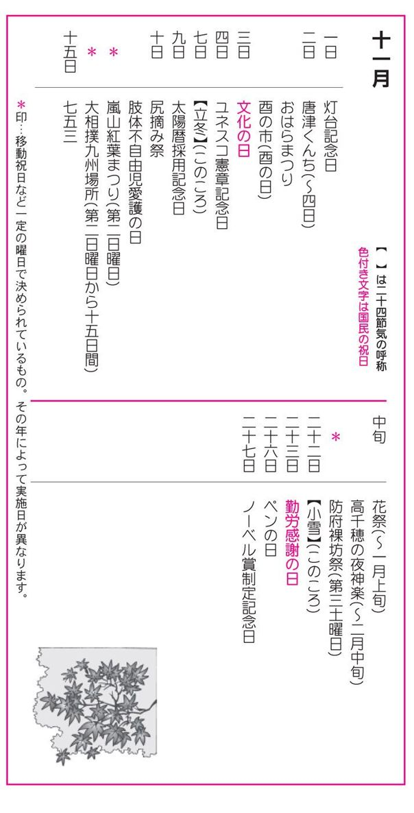
一日
●灯台記念日（とうだいきねんび）
日本最初の洋式灯台が、一八六八年（明治元年）十一月一日に神奈川県横須賀市の観音崎で着工され、翌年の一月一日から運用された。灯台記念日は、この着工の日を記念して、一九四九年（昭和二十四年）に定められた。従来の灯台は、終夜篝火（かがりび）を焚くものだったが、洋式は石油を使うものであった。
二日
●唐津くんち（からつくんち）
佐賀県唐津市、唐津神社。二日～四日。唐津神社の秋の祭り。曳山は、和紙を厚く張ったものに金・銀・朱などを塗った「漆の一閑張」で十四台あり、佐賀県の文化財に指定されている。二日は宵山、三日は、神輿のお旅所神幸、四日が町廻りで、曳山が市内を巡行する。祭りの山場は、三日のお旅所の曳き込みで、砂にめり込む車輪を力の限りに曳く様は圧巻で、曳山が勢揃いする。
●おはらまつり鹿児島県鹿児島市。二日～三日。一九五一年（昭和二十六年）
から始まった市民祭で、県下最大の規模となっている。鹿児島を代表する民謡「おはら節」や「ハンヤ節」に合わせて踊り手が自由な身振り手振りで目抜き通りを行進する。音楽パレード、城山と桜島の花火大会なども行われる。
●酉の市（とりのいち）
東京都台東区、鷲神社ほか、各地の大鳥神社。十一月の酉の日。酉の市は鷲神社の祭礼で、「酉の待」「おとり様」とも呼ばれている。関東各地の大鳥神社でも行われ、神社の境内や周辺の路上に市が立つ。その年によって日が異なり、月初めの酉の日を一の酉、次を二の酉、その次を三の酉という。三の酉のある年は火事が多いといわれている。境内では「福をかきこむ」として、宝船・大判小判・稲穂・招き猫などの縁起物を飾りつけた熊手を売る熊手市を売り買いする声や手拍子で賑わう。
三日
●文化の日（ぶんかのひ）
国民の祝日。一九四六年（昭和二十一年）のこの日に、日本国憲法が公布されたのを記念して、「自由と平和を愛し、文化をすすめる」ことを目的に定められた。この日は文化の発展に功労のあった人々に文化勲章[＊①]が授与され、また文化功労者の受賞者の伝達式などが行われる。芸術祭なども、この日にちなんで開催される。また、この日を中心とする一週間は、社会教育法を記念した教育文化週間でもある。
四日
●ユネスコ憲章記念日（ユネスコけんしょうきねんび）
ユネスコ（ＵＮＥＳＣＯ = United Nations Educational, Scientific, and Cultural Organization 国際連合教育科学文化機構）は、国際連合の専門機関の一つで、一九四六年（昭和二十一年）十一月四日に発足し、ユネスコ憲章が発効となった。この日を記念して設けられたもの。本部はパリにあり、日本は一九五一年（昭和二十六年）七月に加盟した。ユネスコの目的は、教育・科学・文化に関する国際協力と交流を行うこと。世界の文化および自然遺産の保存・保護活動の推進にも寄与している。
七日
●立冬（りっとう）
二十四節気の一つ。暦の上ではこの日から冬。太陽暦で十一月七日ころ。日増しに日ざしも弱まり、朝夕の寒さがきびしくなる。風邪をひきやすいのもこのころである。北海道では、木枯らしが吹き、一日の最低気温が氷点下を記録するようになる。
九日
●太陽暦採用記念日（たいようれきさいようきねんび）
一八七二年（明治五年）十一月九日、従来使われていた太陰暦を廃止し、太陽暦を採用する布告の発布にちなんで、記念日が設けられた。太陽暦の実施は、この年の十二月三日からで、この日が明治六年一月一日と定められた。太陽暦とは、地球が太陽を一周する時間を一年と定めた暦で、一年は三六五・二四二二日になる。この端数は、四年目ごとに三六六日と一日多い「うるう年」を設けることで、調整している。
十日
●尻摘み祭（しりつみまつり）
静岡県伊東市、音無神社。祭神の豊玉姫命に安産を祈願する祭事が起源とされる。行事は暗闇の中で行われ、境内は明かりの点灯も、話を交わすことも禁じられ、御神酒をまわし飲みする時も、尻をつねって合図をしたので、「尻摘み祭」の名がついたといわれる。尻摘みは、睡気を払うためとも伝えらる。この尻摘み祭か、島田帯祭のどちらかが、富士浅間神社の火祭、国府宮の裸祭とともに日本三大奇祭とされている。
●肢体不白由児愛護の日（したいふじゆうじあいごのひ）
一九五三年（昭和二十八年）から肢体不自由児協会の主唱で始められたもので、肢体不自由児愛護思想を普及させ、児らの幸せをはかることを目的としている。報道機関などの協力も得て、友情年賀絵はがきと愛の年賀絵はがきの領布、友情の作文や図画の募集、肢体不自由高校奨学生の採用など、積極的な活動を行っている。
十四日
●嵐山紅葉まつり（あらしやまもみじまつり）
京都府京都市西京区嵐山、嵐峡。第二日曜日。嵐山では、春の「車折舟遊祭」に対して、秋には「紅葉まつり」が嵐峡で行われる。こちらも舟遊びで大堰川岸辺の紅葉を楽しむ。午前中は舟上で箏曲演奏や今様歌、舞踊などが披露され、午後は参加者も舟に乗り紅葉を楽しむ。車折神社の神船を先頭に、雅楽・能などの各船がそれに続く。
●大相撲九州場所（おおずもうきゅうしゅうばしょ）
大相撲六場所の一つで、十一月の第二日曜日からの十五日間に渡って福岡国際センターで行われる。
十五日
●七五三（しちごさん）
七五三は、三歳の男児と女児、五歳の男児、七歳の女児の成長を祝って行う儀式。この日は、親と氏神や神社にお参りして健やかな成長を祈願し、各家庭では赤飯や尾頭付きの料理などでお祝いをする。神社などでは長寿を祈願した縁起ものの「千歳飴」が売られる。また、身内や親しい間柄の人が、当の子供に贈り物をする習慣もある。現在は、男女とも、三歳、五歳、七歳の子供を七五三として祝うこともある。
中旬
●花祭（はなまつり）
愛知県北設楽郡東栄町ほか一帯の山間部。十一月中旬～翌年一月上旬。愛知・長野・静岡の県境となる北設楽地方の山間部が祭りの舞台。祭場は二十近くあり、神社や公民館などで行われる神事芸能で、三十～四十の舞や神事が夜を徹して行われる。祭場の中央に舞所を作り、その中に設けられた炉に湯釜をかけ、湯釜を囲んで舞が舞われる。祭りが最高潮に達するのは湯立行事の「湯囃子」。ワラを束ねた湯たぶさで、釜の湯をあたりに振りかけるもので、この湯を浴びると健康に恵まれと伝えられている。
●高干穂の夜神楽（たかちほのよるかぐら）
宮崎県西臼杵郡高千穂町、高千穂神社・天岩戸神社・公民館など。十一月下旬～翌年二月。神話と伝説の里・高千穂で行われる太鼓の舞で、「岩戸神楽」の名で有名。町や村によって形式は多少異なるが、神座を設け、夜を徹して神楽三十三番が舞われる。神を招く神降しにはじまり、いざなぎ・いざなみの命の国造りや、天の岩戸の話など、古事記にある神話に基づいた神楽が次々と「ほしゃどん」と呼ばれる舞い手によって披露される。夜神楽の呼び物は二十番の「ご神体」と二十四番の「手力雄」である。
十七日
●防府裸坊祭（ほうふはだかぼうまつり）
山口県防府市松崎町、防府天満宮。第三土曜日。防府天満宮は、九〇四年（延喜四年）建立の日本最初の天満宮。裸坊祭は神幸祭で、西日本一の規模をもつ大祭とされ、数千人の白装束姿の裸坊たちが本宮から勝間浦の御旅所まで神輿の渡御をする。御旅所では、古式による菅原公饗膳の儀式を行い、真夜中本宮に還御して祭典を終了する。
二十二日
●小雪（しょうせつ）
二十四節気の一つ。太陽暦で十一月二十二日ころ。雪がちらつき始めるが、それほど雪の量が多くないことから、小雪と呼ばれる。南の地方ではナツミカンが実る。
二十三日
●勤労感謝の日（きんろうかんしゃのひ）
国民の祝日の一つ。一九四八年（昭和二十三年）に制定された。「勤労をとうとび、生産を祝い、国民が互いに感謝しあう日」とされる。それ以前（一八七三年以降）は、新嘗祭（にいなめさい）と呼ばれる祝祭日であった。
二十六日
●ペンの日
日本ペンクラブの創立記念日。日本ペンクラブは、国際ペン日本センターとして一九三五年（昭和十年）十一月二十六日に創立された。国際ペン憲章の主旨に基づき、言論・表現・出版の自由の擁護、文化の国際的交流の増進、世界平和への寄与を目的としている。初代会長は島崎藤村。
二十七日
●ノーベル賞制定記念日（のーべるしょうせいていきねんび）
ダイナマイトを発明したアルフレッド・ノーベル（一八三三～一八九六）は、その製造特許によって巨万の富を築いた。彼の遺言で、その遺産を基金にその利息で学術、平和に最も功労のあった人に、毎年授与される「ノーベル賞」が一八九六年（明治二十九年）に設定された。遺言状の日付が十一月二十七日であったことから、この日が「ノーベル賞制定記念日」とされ、授賞式はノーベルの命日の十二月十日に行われる。ノーベル賞の対象部門は、物理・化学・生理学医学・文学・経済学・平和の六部門。
文化勲章は一九三七年（昭和十二年）に制定され、紀元節、天長節などに表彰式が行われてきたが、戦後は、十一日三日の文化の日に贈られることになった。また文化功労者とは、日本文化の発展に特に貢献した人々の中から政府が選んだ人のことで、毎年年金が授与される。
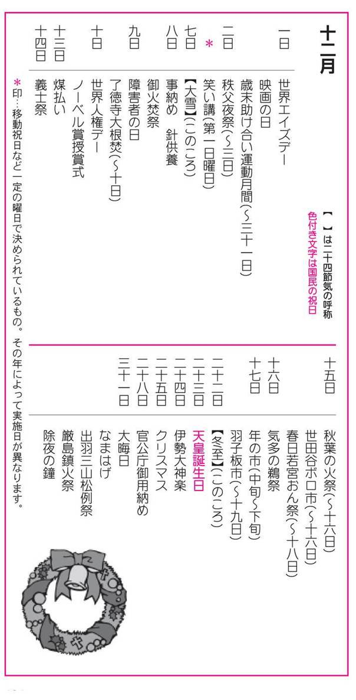
一日
●世界エイズデー（World AIDS Day）
一九八八年（昭和六十三年）に、世界保健機関（ＷＨ０）がエイズの撲滅とエイズ問題の意識高揚のために制定した。一九八一年（昭和五十六年）にアメリカで、エイズの最初の症例が報告されて以来、エイズ患者は増加の一途をたどっている。
●映画の日（えいがのひ）
エジソンが発明したキネトスコープは、一八九六年（明治二十九年）十二月一日、日本で初めて神戸の神港クラブで公開された。これを記念して一九五六年（昭和三十一年）に設けられたもの。一九〇〇年（明治三十三年）三月浅草の六区に日本シネマクラブ館が開設されたが、これが日本の映画館のはじまりといわれている。
●歳末助け合い運動（さいまつたすけあいうんどう）
十二月一日～三十一日。援護を必要とする人たちが、明るいお正月が迎えられるようにと、民生委員をはじめ地域の人々、関係機関・団体の協力で行われる、国民ぐるみの運動である。この運動と並行して、赤い羽根運動が十月一日から行われる。また、日本放送協会主催による「ＮＨＫ歳末たすけあい運動」が、十二月一日から大晦日まで展開される。
二日
●秩父夜祭（ちちぶよまつり）
埼玉県秩父市大宮、秩父神社。二日～三日。秩父神社の例大祭。三百年以上の伝統を持ち、京都祇園祭、飛騨高山祭と並ぶ日本三大曳山祭りの一つ。二日は、神馬奉納祭で、奉納された神馬の毛色で翌年の農作物の豊凶などを占う。三日が本祭で、夜の神輿御祭には豪壮な屋台囃子にのって神輿が御旅所へ曳行される。祭りの見ものは、各町内から引き出される二基の山鉾と四基の屋台で、特に屋台は、神道民俗の要素を備え、左右に下座を張り出すと歌舞伎の舞台にもなる。貴重な文化遺産で、国指定の重要民俗資料となっている。
五日
●笑い講（わらいこう）
山口県防府市、小俣八幡宮。第一日曜日。鎌倉期時代に始まるとされる神社のお笑い講の祭祀組織が代々受け継いできた豊作儀礼の奇祭。当屋に五穀豊穣の神を迎え、直会で神人合一するのであるが、羽織・袴に威儀を正した祭祀者たちが御幣を振りながら対座同士で大笑いし、笑いを神に献上するというユニークな儀式である。
七日
●大雪（たいせつ）
二十四節気の一つ。小雪から数えて十五日目。太陽暦で十二月七日ころ。大雪とは、陰気が積んで雪になるという意味。天候が不安定で、平野にも雪が激しく降る。南天や青木の実が赤く色づくのが見られる。また、暖かな九州地方でも初氷が張る。禅宗寺院では坐禅苦行が開始される。
八日
●事納め（ことおさめ）
二月八日に一年の農作業の開始を意味する「事始め」があるのに対して、十二月八日はこれを終えることから「事納め」という。なお、十二月八日を「御事じまい」、二月八日を「御事始め」という地方もある。
●針供養（はりくよう）
針供養は二月と十二月の八日に行われる行事で、裁縫の業を休み、さびた針や折れた針を集めて豆腐やこんにゃくに刺して淡島神社（二月注釈⑤参照）に納める。
●御火焚祭（おひたきまつり）
滋賀県八日市市、太郎坊宮。全国から奉納された三十数万本の御神木を積み上げ、これを焚く大護摩の神事である。護摩供養としては最大級のもので、その規模の大きさで有名。火の霊力で、穢（けがれ）を清めた後、火渡りの神事がある。
九日
●障害者の日（しょうがいしゃのひ）
一九七五年（昭和五十年）十二月九日に国連総会で「障害者の権利宣言」が採択された。この日にちなんで、国際障害者年となった一九八一年（昭和五十六年）十二月九日に内閣府と東京都主催の「広がる希望の集い」で、宣言を採択し制定された。「障害者の日」までの一週間は「身体障害者福祉週間」とされている。
●了徳寺大根焚（りょうとくじだいこたき）
京都府京都市右京区、鳴滝了徳寺。九日～十日。鳴滝御坊と呼ばれた親鶯上人聖跡の地・了徳寺では、九日・十日の両日に「大根焚き」を行う。これは各壇家から献じられた大根を「塩煮大根」に煮て、開山親鶯上人の真影に供え、参詣者たちに分け与えるというもの。この大根を食べると中風[＊①]に御利益があるとされる。
十日
●世界人権デー（せかいじんけんでー）
一九四八年（昭和二十三年）十二月十日、パリで開催された国連総会で、「世界人権宣言」が採択され、一九五〇年（昭和二十五年）の国連総会で、この日を記念して「世界人権デー」と定められた。人権宣言は前文と本文三十ケ条から成り立っている。世界人権デー前の一週間は「世界人権週間」とされ、世界各地で行事が開催される。日本でも十二月十日を最終日とする一週間を人権週間としている。
●ノーベル賞授賞式（のーべるしょうじゅしょうしき）
十二月十日は、ノーベル基金を遺言したアルフレッド・ノーベルの命日で、ノーベル賞授賞式がスウェーデンのストックホルムのコンサートホールで行われる。第一回の受賞者は、物理賞がＸ線のレントゲン、化学賞はファント・ホック、医学賞はジフテリアのべーリング、文学賞はブリュドム、平和賞は赤十字社創設のデュナンであった。日本での初受賞は、一九四九年（昭和二十四年）で、湯川秀樹博士が物理学賞を受けている。二〇〇二年（平成十四年）には小柴昌俊さん（物理学賞）、田中耕一さん（化学賞）のダブル受賞で話題となった。
●煤払い（すすはらい）
煤掃き・煤納めともいう。正月を迎えるために家の内外を掃除して清める行事。江戸時代に江戸城の煤払いがこの日だったためとされる。現在でもこの日に形式的に煤払いを行い、正月の準備を始める日と考えている所は多い。このころから各地の寺社で仏像などに積もった一年の埃を払う行事が行われる。
十四日
●義士祭（ぎしまつり）
兵庫県赤穂市、大石神社・花岳寺。東京都港区高輪、泉岳寺。元禄十四年（一七〇一年）の十二月十四日、播州赤穂の浪士四十七人が江戸本所の吉良邸に討ち入り、仇討ちを果たした。この日を偲んで義士祭が盛大に行われる。赤穂市では、大石神社から花岳寺までの間を四十七士行列が行われて義士たちを偲ぶ。泉岳寺では義士会が中心になって義士供養の法会が行われる。泉岳寺には、君主浅野長矩公の墓と大石良雄ら四十七士の墓があり、ともに史跡として指定されている。
十五日
●秋葉の火祭（あきばのひまつり）
静岡県周智郡春野町、秋葉山本宮秋葉神社。十五日～十六日。両日は秋葉神社の例祭で、「秋葉の火祭」として有名。秋葉神社は、火防の神として広く信仰を集め、全国にある秋葉神社の総本山である。秋葉代参講が各地に組織され、参詣者も多い。十五日に火防の祈祷を行い、翌十六日には神輿の渡御があり、夜に、弓の舞・剣の舞い・火の舞の神事が奉納される。
●世田谷ボロ市（せたがやぼろいち）
東京都世田谷区。東急世田谷線世田谷駅から代官屋敷跡にかけてのボロ市通りで、年二回、十二月と一月の十五～十六日に開催される。起源は、安土・桃山時代、北条氏が開いた楽市とされ、四百年以上も続いている。正月に必要な品々が並んだが、ぼろ着を売る店が多かったことから「ボロ市」と呼ばれるようになったという。一キロ余りの通りの両側や路地には、骨董品や衣類、日用雑貨などの露店が約七百店並ぶ。
●春日若宮おん祭（かすがわかみやおんまつり）
奈良県奈良市春部町、春日大社の若宮神社。十五日～十八日。八百余年の伝統を持つ奈良最大の芸能祭り。その芸能神事は、国指定重要無形民族文化財になっている。十五日夕刻に大宿所祭があり、十六日は宵宮祭。十七日は本祭殿があり、時代行列が繁華街を御旅所へと練り歩く。十八日は、後宴の能で、金春一座の能の舞いがある。
十六日
●気多の鵜祭（けたのうまつり）
石川県羽咋市寺家町、気多神社。気多神社は能登国の一の宮として崇められる神社。祭りは、鵜と鵜捕部、神職だけで執り行われる奇祭として有名。捕らえた鵜を神前に供するというもので、謡曲「鵜祭」などの題材にもなっている。神前に供する時の鵜の進み具合によって年の吉凶を占う。
十七日
●年の市（としのいち）
東京都台東区、浅草観音。中旬～下旬ころ。年の市は、注連縄（しめなわ）・門松などの正月の飾り物、縁起物、雑貨などを売る市で、「何やかや売り」ともいわれている。江戸時代から浅草観音の年の市が、もっとも規模が大きい市とされ、深川八幡・神田明神・芝明神・芝愛宕権現・平河天神で催される市を六大市という。師走中ごろから、各地で順次「年の市」が立つ。
●羽子板市（はごいたいち）
東京都台東区、浅草寺境内ほか。十七日～十九日。年の市から羽子板市だけが独立したもので、雷門から浅草寺にかけての仲見世には、羽子板の露店が立ち並ぶ。羽子板は縁起物として買われ、正月に飾られる。京都の新京極の市と並んで有名である。
二十二日
●冬至（とうじ）
二十四節気の一つ。太陽暦で十二月二十二日ころ。太陽が黄経二百七十度の冬至点に達し、一年中でもっとも南に位置する時。夏至とは反対に、北半球では日照時間（昼）が最短で、夜がもっとも長くなる。この日、南瓜や小豆の入った冬至粥を食べて厄除けと金運を祈り、冬至風呂（ゆず湯）に入って、無病息災を祈る。古代中国では、冬至を太陽運行の出発点とし、暦のはじまりとしていた。
二十三日
●天皇誕生日（てんのうたんじょうび）
国民の祝日。この日は、皇居の二重橋の門が開放され、天皇は一般参賀者に返礼される。今上天皇は、一九三三年（昭和八年）十二月二十三日に明仁親王としてご誕生。一九五六年（昭和三十一年）学習院大学士課程終了。一九五九年（昭和三十四年）四月十日、美智子さまとご成婚、現在に至る。一九八九年（昭和六十四年）一月七日、昭和天皇崩御により、第百二十五代天皇として即位され、年号を平成と改められた。
二十四日
●伊勢大神楽（いせおおかぐら）
三重県桑名市大央町、増田神社。毎年十二月二十四日の増田神社例祭には、伊勢大神楽講社の神楽師が、新年からの巡業を前に、氏神に神楽を奉納する。神楽師は、桑名市にある家元を軸として十二組あり、全国の神社の祭札を巡業しているが、年の暮れにはここに集い盛大に大神楽を奉納することになっている。
二十五日
●クリスマス
クリスマスは、イエス・キリストの生誕を記念する祝祭で降誕祭ともいう。二十四日の「クリスマス・イブ」は降誕祭前夜のこと。教会ではイブから高塔に明かりを灯し、樅（もみ）の木に豆電球、金・銀の鈴や星などで飾り、ミサが行われる。欧米では一般的にイブから一月一日または一月六日までクリスマス休暇を取る。日本でもキリスト教徒ではなくても、クリスマス・ツリーを飾り、子供たちはサンタクロース[＊②]からのプレゼントを心待ちにする。大人も夫婦・恋人・友人間で贈り物をするのが盛んである。
二十八日
●官公庁御用納め（かんこうちょうごようおさめ）
官公庁では十二月二十八日ころで仕事を打ち切って、御用納めとし、一月三日ごろまで休暇となる（土・日曜日と重なる場合は日程がずれる）。職場の清掃後、年末の挨拶をする。各取引所でも、二十八日を終相場といって取引を終え、一月四日ごろまで休む。郵便局は、年内は平常通り、正月は三日までは午前中だけ業務を行う。金融機関は三十日まで営業する。
三十一日
●大晦日（おおみそか）
一年の最終の日。月末を晦日（みそか）・晦（つごもり）ということから、三十一日を「大晦日（おおみそか）」「大つごもり」という。この日は、一般的に年越しそば[＊③]を食べて長寿を願う習わしがある。関東地方では「晦日そば」、関西では「つごもりそば」と呼んでいる。また大晦日の夜には、屠蘇を入れた銚子と盃台に乗せた盃に、正月料理を詰めた重箱に箸をそえて、床の間に飾る。そして、元旦には、家族揃っていただき祝うが、お屠蘇は、年齢の若い順に飲むことになっている。
●なまはげ
秋田県男鹿市男鹿半島一帯。年神の来訪神事として、この地方に伝わる奇習。真夜中に憤怒（ふんど）の鬼面、腰ミノ、藁靴を履いた「なまはげ」と呼ばれる仮装神人が、家々を訪れ「泣く子いねが、怠け者いねが」とおどしつけると、家の主人は丁重に迎え、酒肴や餅でもてなす。能登地方などに伝わる「あまみはぎ」や鹿児島県の「トシドン」なども類似していて、災禍を祓い、新年を祝福するための行事とされる。
●出羽三山松例祭（でわさんざんしょうれいさい）
山形県東田川郡、出羽三山神社。出羽三山神社は、羽黒山の出羽神社と月山の月山神社、湯殿山の湯殿神社が合祀した神社。松例祭は、羽黒山の修験道が、冬修行の結願の日に修行の成果を比べる「験競べ」の行事だったとされている。火祭りの行事と豊凶占いの勝負が、新年を迎える行事となったので「年夜祭」とも呼ばれる。位上方が勝てば豊作、先途方が勝てば豊漁になるとされる。
●厳島鎮火祭（いつくしまちんかまつり）
広島県佐伯郡宮島町、厳島神社。大晦日に催される火難除けの祭りで、神殿で祭典を行った後、社殿の忌火を御笠浜斎場の大松明（おおたいまつ）に点火する。すると島中から集まった人たちが、持参した各自の大松明・小松明に競って点火し、境内を駆け回る。燃え残りは持ち帰って火難除けにする。
●除夜の鐘（じょやのかね）
三十一日の夜を除夜[＊④]といい、各地の寺々がつき鳴らす百八の鐘[＊⑤]を「除夜の鐘」という。百八は、仏教では人間の煩悩の数とされていて、罪業消滅を祈願し百八回鐘をつき鳴らす。
脳出血・脳梗塞などにより運動機能障害の麻痺や言語機能傷害などをきたした状態のこと。「ちゅうぶう」「ちゅうぶ」ともいう。
白髪温顔で赤い服に長靴をはいた伝説的な老聖人で、聖人ニクラウスを意味するオランダ語のセント・クラウスが訛ってサンタクロースになったとされる。「クリスマス・イブの夜中にトナカイの曳くソリに乗ってやって来て、煙突から室内に入り、良い子が用意した靴下に贈り物を入れてゆく」とされている。
その年の最後の大晦日に食べるそばのこと。そばは、長くのびていることから寿命が延びるという意味と、長く幸せにそばからかけ込むという意味の語呂あわせで好まれている。
除夜は、夜を除く、つまり眠らないという意味。年神（正月神、年徳神）を迎えるために、身を清め、終夜眠らずに過ごすのが古い習わしであった。
百八の鐘の由来は、中国の仏教儀式で、弱く五十四声、強く五十四声打って、合わせて百八声打つことからきており、宋の時代ころから始まった様式と伝えられる。また、一年十二ヶ月と二十四気節、七十二候を、全て合計した数字であるからともいわれている。後世、これが百八の煩悩の数に結びついたとされている。
付録
◆二十四節気と七十二候◆
二十四節気（にじゅうしせっき）
二十四節気は、四季の変化を知り農耕の目安とするため、太陽の運行に基づいて作られた中国古代の暦上の点のことである。中国の最初の暦は、月の運行に基づく『太陰暦』というものだったが、暦と四季の周期との間にずれが生じて不便となり、太陽の動きを導入した『太陽太陰暦』が誕生して、二十四節気の原型が完成し、その後何度かの改定を経て現在に至っているとされている。「立春」「夏至」など、今日よく使われる季節の節目を示す言葉は、二十四節気が出来た当時の名称をそのまま用いている。
さて、一年を十五日ずつに区切ったのが二十四気で、その区分点を節気としている。また、一月から十二月の各月に二つずつ割り当て、始めのほうを節気、後のほうを中気と呼ぶ。二十四節気はよく角度でも表示される。これは太陽の黄道上の黄経を表したもので、春分を零度、秋分を百八十度としている。つまり、一年を太陽の黄経に沿って十五度ずつ二十四等分しているのである。
なお、私たちが現在使っている暦は「太陽暦」。二十四節気は、太陽暦と周期が異なるため、太陽暦に当てはめると、年によって日付けが異なるという現象が生じる。太陽暦の一年三百六十五日は二十四で割っても、十五で割っても割り切れない。そのため、毎年補正が必要となる。翌年の二十四節気は国立天文台から発表され、同機関編集の「理科年表」などで知ることができる。「理科年表」は書店で購入できる。
七十二候（しちじゅうにこう）
二十四節気は節気・中気の十五日ごと、あるいは黄経十五度ごとに季節の変化を示していた。この節気・中気をさらに五度ずつ、五日ずつに分け、それぞれ、初候、二候（次候ともいう）、三候（末候ともいう）として、一年の特徴的な自然現象を七十二で示してある。これを七十二候と呼ぶ。
七十二候は、中国の黄河流域地方の気候風土、動植物の生態を表わしたオリジナルがあり、それを、江戸時代以降、学者たちが日本の風土に合うように新しく作り換え、その後幾度か改訂され、明治時代のものが現在に至っている。
●参考文献
『年中行事辞典』(田中宣一・宮田登著 三省堂)
『新版 日本の年中行事』(弓削悟著 金園社)
『子どもに伝えたい年中行事・記念日』(萌文書林)
『現代ニッポン年中行事』(松浦総三編 大月書店)
『四季逍遙』(田村宏 すばる出版)
『日本の祭』(芸術新潮編集部編 新潮社)
『日本の祭り事典』(田中義広編 淡交社)
『車で訪ねる日本の祭り 全国編』(JAF出版社)
『東北お祭り紀行』(重森洋志著 無明舎出版)
『関東お祭り紀行』(重森洋志著 無明舎出版)
『伝統の祭りを訪ねる』(実業之日本社)
『三六五日お祭り歳時記』(小学館文庫)
『ニッポン神さま図鑑』(宗教民族研究所著 はまの出版)
『全国観光データバンク』(江原康夫編著 トラベルジャーナル)
『この日なんの日 科学366日事典』(講談社)
『記念日の事典』(加藤迪男編 東京堂出版)
『日本の祝日がわかる小事典』(所功著 PHP研究所)
『俳句歳時記』(角川書店)
『広辞苑』(岩波書店)
『大辞林』(三省堂)
『理科年表2004』(国立天文台編 丸善)
社会人必見！大人の教養
～年中行事と歳時記～
2014年11月10日 発行
著 者 教養研究倶楽部
発行所 株式会社スマートゲート
〒150-0031 東京都渋谷区桜丘町30番17号103BLDG 3-4F